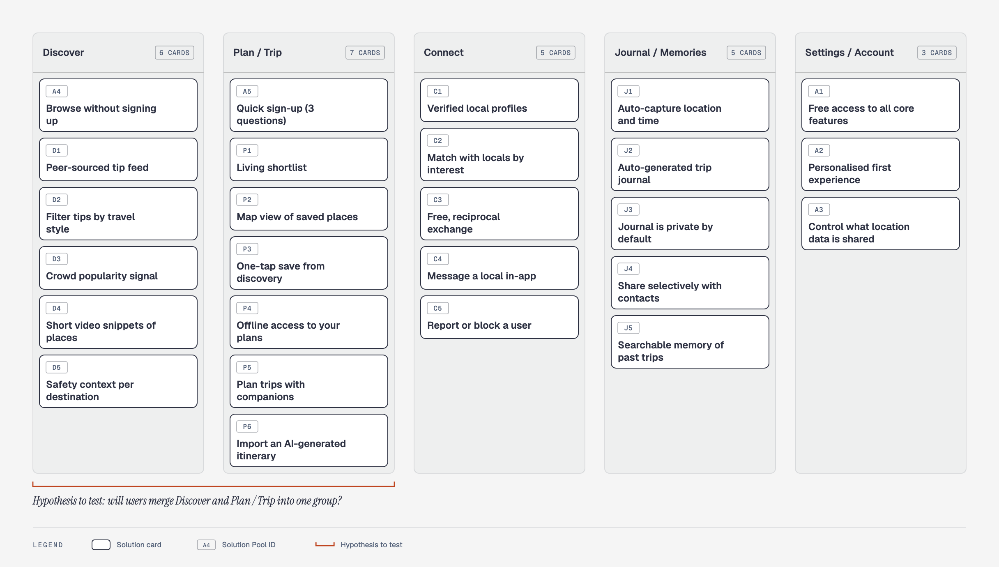
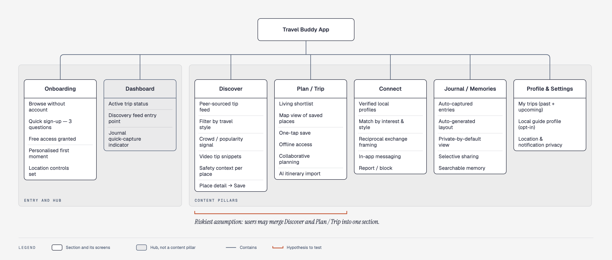

Travel Buddy
Agreement with product and business: Not available
Source README.md (project card), the items in insights/ and standards/gates.md. To change content, edit the source file and rebuild the report.
Gates
Warnings
Fix before handoff 5
Severity 4 finding unresolved2
Blocks handoff. Fix it, or accept it and record why in the case log.
Decision has serious unresolved findings3
See the findings on the decision page, then fix or record why you accept them.
- Decision 5Allow an AI-written itinerary to be imported into the trip plan
- Decision 6Connect through a two-way exchange frame with verified profiles; messaging only opens once both are interested
- Decision 7A journal that records itself, private by default, shared only with chosen people
Worth a look 13
Evidence uses simulated people1
Does not count as real evidence. Run it again with real users.
- Evidence 1Moderated usability test, simulated (three personas played by the researcher)
Hypothesis without real-user evidence6
Needs at least one test with real users.
- Hypothesis 1One-tap save and importing an AI itinerary let people get information into the plan without copying by hand
- Hypothesis 2Tips with the contributor's identity and a crowd signal help users judge trustworthiness themselves
- Hypothesis 3Allowing browsing without an account and asking for sign-up only on Save is an acceptable trade-off
- Hypothesis 4A two-way exchange frame with verified profiles makes users message locals without hesitation
- Hypothesis 5Users find the self-generated journal by themselves without being shown
- Hypothesis 6A journal that is private by default and shared with specific people meets the need to share
Severity 3 finding unresolved2
Needs a decision: fix it, or accept it as a trade-off and record it in the case log.
Decision not in the case log4
Add a line to insights/case-log.md and put the decision ID in the Items column.
- Decision 3Show a crowd signal (green, amber, red) instead of a popularity badge
- Decision 4One-tap save from any tip into the trip shortlist
- Decision 6Connect through a two-way exchange frame with verified profiles; messaging only opens once both are interested
- Decision 7A journal that records itself, private by default, shared only with chosen people
Housekeeping 19
Evidence only planned1
Run the test or study, then record the result.
- Evidence 2Unmoderated usability test, 8 to 12 people (planned, not run)
Document not linked to any item8
Fill in the supports property in the document.
Principle without a check question10
Write a yes/no question for each principle.
Decision alignment
How to read the report, and key terms
Key idea: every decision traces back to the user need behind it. Use the left menu to move between pages. Open the items marked ⚠ in Insights to see what needs a look.
- Opportunity
- What users need or struggle with, backed by evidence. Not a feature.
- Hypothesis
- What the team believes, with how it will know if it is right.
- Decision
- A specific design choice, with the reason.
- Evidence
- A test or study that checks a hypothesis, with its result. A planned or simulated label means it is not evidence from real users yet.
- Metric
- The number that tells if a hypothesis is right. An assumed label means the product owner has not confirmed it.
- Principle
- A design rule every decision should meet, for example the 10 usability heuristics by Nielsen (P1 to P10).
- Gate
- A check before moving to the next stage.
- Alignment
- How well each decision traces to a user need and meets the principles.
Context
Background for the project: product and users, rules, design system, open questions.
context/Add new drop a
.md file into the folder and the page appears here. The AI tool reads this folder first.Product and users
Half a page, anonymised. This file goes into the AI steps first, so write it for a reader who knows nothing about the project.
Accessibility rules
The requirements the design must meet. Edit them to match your company's standard. If your company has none, use this list as a ba
Data rules
Three lines, in your own words. Read your company's AI policy first.
Design system notes
Write this when you start building the prototype, in a form an AI coding tool can read. Short, concrete, no paragraph that needs i
Glossary (optional)
In your own words, with an example from your case. Start with the three terms you meet most often in the project.
Open questions
What the AI says it needs to know that product-and-users.md does not say yet. Keep the useful ones.
Case card: Travel Buddy
Travel Buddy is an early-stage idea for a travel companion app. Travellers choose a travel style, discover tips from other travell
Product and users
Half a page, anonymised. This file goes into the AI steps first, so write it for a reader who knows nothing about the project.
About this demo: the content is condensed from the original documents of the Travel Buddy project (see
work/original-docs/andwork/sources/anonymised/). The codesRH1..RH10are research hypotheses (H1..H10in the original documents); the codesSP-D1,SP-P3... are IDs in the original Solution Pool. The codesO,H,D,T,Mininsights/are workspace items.
The product
Travel Buddy is an early-stage idea for a travel companion app. The app brings together three things that travellers currently do with 8 to 10 different apps: finding trustworthy, non-commercial suggestions (Discover), connecting with locals without paying (Connect), and planning flexibly and saving the trip (Plan & Journal).
The users
Travellers who have taken at least one trip in the last 12 months, use a phone, and use at least one digital tool when travelling. Three main personas:
- Aisha, Explorer / Pragmatic Planner: plans carefully before the trip but changes 30 to 40% once she arrives; uses 8 to 10 tools and copies information between them by hand.
- Marco, Connector: wants to meet locals but needs safety signals and does not want to pay for the connection.
- Ji-yeon, Documenter: takes many photos but has no system; wants memories to organise themselves and to share them privately.
The supply side is locals who act as informal guides; this group has not been researched.
Where it stands now
The project already has: a survey (13 valid responses), one interview (P1), an analysis of 5 competitors, personas, a Solution Pool of 26 solutions, an E2E flow, an information architecture hypothesis, a PRD for the Explore tab, a 32-screen high-fidelity prototype, an unmoderated test plan, and one simulated usability test round (not real people).
What success might look like
The goals below come from the PRD of the Explore tab. They are targets the team set itself and nobody has confirmed them, so all are assumed:
- Time to first interaction with a tip: under 30 seconds from opening the app
- Visitors who convert to registered users when they press Save: from 25%
- Tips saved per session (registered users): from 2
What I do not know
- Whether locals are willing to be guides for travellers (RH6): nobody has been interviewed
- How real users react to the prototype: the only test round is simulated
- What sits behind the paywall when the model is free-first
- Whether the crowd signal is user-reported data, an algorithmic score, or both
Source file: context/product-and-users.md
Accessibility rules
The requirements the design must meet. Edit them to match your company's standard. If your company has none, use this list as a baseline (WCAG 2.2 AA).
- Text contrast of at least 4.5:1 (3:1 for large text and interface components such as input borders)
- Everything works with a keyboard, in a sensible order, and focus is always visible
- Every input has a visible label, and error messages say what went wrong and how to fix it
- Touch targets of at least 44 x 44 px when possible (never below 24 x 24)
- Meaning is never conveyed by colour alone
- Images that carry meaning have a text alternative
Rules specific to my company (if any):
Source file: context/accessibility-rules.md
Data rules
Three lines, in your own words. Read your company's AI policy first.
An example written by the person who built the demo: the original project did not have this file. The three lines below reflect how the project handled data (the survey is recorded as
anonymous, the interviewee is codedP1), not an approved policy.
- What I am allowed to paste into an AI tool: the project's anonymised documents (the survey summary, interview notes coded
P1, competitor analysis from public sources). - What I will not paste (or only paste after anonymising): the original survey file with its response times and detailed locations; any contact details of participants. Only the summary is given.
- Which tool I use for what: an AI chat tool to draft questions and synthesise from the anonymised version; an AI coding tool to build the prototype from the rules file.
Source file: context/data-rules.md
Design system notes
Write this when you start building the prototype, in a form an AI coding tool can read. Short, concrete, no paragraph that needs interpreting.
Where the source of truth lives
work/original-docs/10_Prototype_Plan.md, section 2 (Design Direction & Design System). Prototype: work/prototype/.
Tokens
- Colour:
--primary#5DB85C (main CTA, verified badge);--primary-lime#C4E03A (selected nav, highlighted chip);--primary-dark#3A7A39 (pressed state);--nav-bg#1C1C2E (bottom navigation bar);--surface#FFFFFF;--bg#F7F7F7;--text#111111;--text-secondary#555555;--border#EBEBEB;--warning#F5A623 (high crowd signal);--danger#E74C3C (safety, report/block, errors) - Type: DM Sans (fallback Inter, SF Pro Text). Display 32–38px/800; screen title 24px/700; section 18px/600; card title 16px/600; body 14px/400; caption 12px/500; button 15px/600
- Spacing and radius: base unit 4px (4, 8, 16, 24, 32, 48). Photo card 20px; card 16px; bottom sheet 24px (top two corners); CTA and chips are pills (50px); input 14px
Components
| Component | States it has | Rules |
|---|---|---|
| Tip card (full-bleed photo) | default, saved | Has a crowd signal badge; text over the photo uses a gradient to reach contrast |
| Map pin | local favourite (green), popular (amber), very touristy (red) | Clusters when close together; tap to open the peek card |
| Bottom sheet | collapsed (peek), open | Used for the peek card, safety context, the sign-up gate |
| Filter chip | default, selected | A pill; must be kept as it is when the mode changes |
Patterns
Mobile 390 × 844px. A dark bottom navigation bar, a light content background and a photo-led direction. Explore has three modes (Near Me, Country, Map) that share one filter system.
Do and do not
- Do: let viewers browse tips without an account; ask for sign-up only on Save or Connect
- Do not: use a popularity badge; use the crowd signal instead
Accessibility rules
See accessibility-rules.md. This project was not checked per component beyond the contrast requirement on photo overlays.
Source file: context/design-system-notes.md
Glossary (optional)
In your own words, with an example from your case. Start with the three terms you meet most often in the project.
| Term | In my words | Example from my case | What I will do differently |
|---|---|---|---|
| — | — | — | — |
Source file: context/glossary.md
Open questions
What the AI says it needs to know that product-and-users.md does not say yet. Keep the useful ones.
| Question | Why it matters | Who can answer | Status |
|---|---|---|---|
| Is the crowd signal user-reported data, an algorithmic score, or both? | Decides the data model and how to prevent manipulation | No owner yet | Open |
| Is the video in a tip uploaded by travellers, curated by Travel Buddy, or both at v1? | Greatly affects content strategy and cost | No owner yet | Open |
| Should Map mode default to the current location or to the destination of a saved trip? | Decides how users enter Map | Project owner; check with a usability test | Open |
| What is the minimum number of tips for a destination to show in Country mode? | Avoids showing a destination with only 1 or 2 tips | No owner yet | Open |
| Do locals want to be guides, and what do they need to feel it is fair and safe? | Connect only works when the supply side takes part (RH6) | Interview 5 to 8 locals (not done yet) | Open |
| How do travellers use AI chat tools in their planning, and where does that output go next? | Decides whether to integrate or replace (SP-P6) | More interviews | Open |
| When a review is disappointing, do travellers blame the platform, the writer or themselves? | Affects how user-contributed content is presented | More interviews | Open |
Source file: context/open-questions.md
Case card: Travel Buddy
Travel Buddy is an early-stage idea for a travel companion app. Travellers choose a travel style, discover tips from other travellers and locals (no ads), save a tip to their trip plan with one tap, message locals to ask for suggestions, and get a trip journal that records itself.
The problem the team sees: travellers use 8 to 10 apps for one trip, do not trust commercial review platforms, and copy information between apps by hand.
What exists: a survey (13 valid responses), one interview, an analysis of 5 competitors, personas, a 32-screen prototype, and a test plan.
The team believes: locals and friends are the most trusted source; planning in one place is the most important feature; price is the number 1 barrier to trying it.
What is known: tips from locals are trusted more than reviews from strangers (4.46 vs 3.31 out of 5); 9 of 13 people plan loosely and stay flexible once they arrive.
What is not known: whether locals want to be guides; how real users react to the prototype; what sits behind the paywall.
This is a real practice project (not a fictional case). Details in product-and-users.md.
Source file: context/case-card.md
Stages
Selected and kept up to date automatically from work/ and insights/.
Scope
Business question, outcome, agreement
02 · DiscoverEvidence
What was learned from the sources, one source per claim
03 · DefineProblem brief
Opportunity, hypothesis, metric, principle
04 · DevelopOptions, flows, prototype
The directions explored, decisions
05 · DevelopAlignment check
Principle audit, verdict
06 · DeliverFindings
Results of testing with users
07 · DeliverHandoff and measurement
Handoff pack, measurement plan
08 · LearnLearning
What was learned after launch: metric against target, traced back to the opportunity
09 · All stagesDecision log
One line per decision, with its reason
Scope
Business question, outcome, agreement
Gate Discover (Question + evidence): 2/7 checks passed · Open
Discover stage. Define it together with the PO and business, or write it as assumptions if you cannot reach them.
Business question (in their words)
Travellers use 8 to 10 apps for one trip and do not trust commercial review platforms. Could a travel companion app that brings together finding trustworthy suggestions, connecting with locals, and planning and saving the trip in one place replace that chain of tools?
(The question is summarised from the project documents; the stakeholders in the original project were simulated, see sources/anonymised/02_Stakeholder_Ecosystem.md.)
Outcome and success metric
- Outcome: new users see value in the very first session, then treat Travel Buddy as the only place they use for discovery and planning
- Metric and baseline: time to first interaction with a tip under 30 seconds; visitors converting to registered users at 25% or more when they press Save. Baseline: none yet (there is no real product)
- Confirmed by / date: none (the stakeholders were simulated)
- Status: assumed
Users and constraints
- Main users: travellers aged 18 to 45 (45 to 55 not excluded), who use a phone and have travelled in the last 12 months. Four archetypes: Explorer, Cultural Connector, Documenter, Pragmatic Planner
- Supply-side users: locals who have lived there for 2 years or more and have helped or hosted travellers
- Constraints: a free-first model (price is the number 1 barrier); must work without a network; location data is sensitive; an early-stage startup with small research resources
What I already believe
Three to five statements. You will test them in Discover. The project wrote ten research hypotheses (RH1..RH10, which are H1..H10 in the original documents):
- RH1: travellers do not trust commercial reviews
- RH2: travellers want local experiences, off the beaten track
- RH3: travellers have to juggle many apps
- RH4: travellers want to connect with locals without a transaction
- RH5: trust is the biggest barrier to connecting with strangers
- RH6: travellers are willing to be guides for others
- RH7: travellers give up journaling when it takes effort
- RH8: travellers want to share privately, not publicly
- RH9: travellers plan loosely and stay flexible once they arrive
- RH10: switching cost is the main barrier when trying a new app
Agreement status
not available The project is an academic practice: there is no real PO or business to ask. The stakeholders (founder, UX lead, tech lead, marketing, partnerships) were simulated for practice.
Open questions for the next conversation
- Interview 4 to 7 more travellers (there is only one so far, P1)
- Interview 5 to 8 locals before designing Local Match (RH6)
- A diary study with 3 to 5 people to check whether the need to keep a journal is real or only a wish
This page is built from: work/scope.md
Evidence
What was learned from the sources, one source per claim
Gate Discover (Question + evidence): 2/7 checks passed · Open
Working file for the user-voice flow. The AI returns only its own section, and you paste it in. Anonymised quotes live in sources/anonymised/ with IDs (R01, I01-01 ...).
Scope
- The question: how do travellers find, plan and keep a record of a trip, and where does it hurt?
- Who we need to hear from: travellers who have travelled in the last 12 months and use a phone; ages 18 to 45 preferred
- What I already believe: RH1 to RH10 (see
scope.md)
Sources and guide
- Online survey: 17 submitted, 13 valid (4 empty responses dropped). 7 people in Asia, 6 in Europe; most aged 18 to 24. Tool:
sources/anonymised/04_User_Survey.md - Semi-structured interview: 1 out of 5 to 8 planned (P1, recorded in June 2026). Guide:
sources/anonymised/05_User_Interview_Guide.md - Full synthesis:
sources/anonymised/05_Research_Synthesis.md - Not done yet: a diary study (3 to 5 people), interviews with locals (5 to 8 people)
Coding (verified)
Tracking the ten research hypotheses (source: 05_Research_Synthesis.md). Survey figures: n=13.
| # | Hypothesis | Survey signal | Interview signal (P1) | Status |
|---|---|---|---|---|
| RH1 | Do not trust commercial reviews | Confirmed: tips from locals 4.46/5 vs reviews from strangers 3.31/5; 10/13 were once disappointed | Cross-checks across several platforms, does not trust a single source | converging |
| RH2 | Want local experiences | Confirmed: "Hard to find authentic local experiences" is the number 1 frustration (9/13) | Wants to know where locals really go | converging |
| RH3 | Use 3 or more apps | Signal rising: 5/13 name fragmentation | 8 to 10 apps per trip; fragmentation is problem number 1 | strengthening |
| RH4 | Want non-transactional connection | Confirmed: 12/13 are open to it; 9/13 chose "No money involved, just a genuine exchange" | Ready to message a local if there is a safety signal | converging |
| RH5 | Trust is the barrier to connecting | Confirmed: verified identity 11/13 | Needs real, voluntary locals with a profile | converging |
| RH6 | Willing to be guides | Not checked in the survey | None yet | needs interviews with locals |
| RH7 | Give up the journal when it takes effort | Confirmed: 7/13 do not record or want it fully automatic | Takes photos but forgets names and details | converging |
| RH8 | Share privately | Not conclusive: 6/13 chose private by default | Stores mostly for themselves | strengthening |
| RH9 | Plan loosely and flexibly | Strongly confirmed: 9/13 | A spreadsheet before the trip, 30 to 40% changed on the spot | confirmed |
| RH10 | Switching cost is the main barrier | Confirmed, with a surprise: price 7/13 is number 1 | Would switch if it brought together discovery, planning and organising | converging |
Themes
From one person (P1). Only a hypothesis to be confirmed with more participants.
- Fragmentation is the main pain, not a lack of information. P1 uses 8 to 10 tools; the difficulty is copying information between them. "I wish there was an easier way to gather, organize, and manage everything in one place instead of jumping between so many apps." (P1)
- Cross-checking sources is the personal trust algorithm. "If a restaurant shows up on TikTok, Google Maps, travel groups, and is also recommended by someone I know, I feel much more confident about trying it." (P1)
- Wants local knowledge but does not know whom to ask. "I don't really know how to find the right local person to ask." (P1)
- A structured plan before the trip, improvised once there. About 30 to 40% of the trip changes from the plan (P1).
- The wish to keep a journal is bigger than the ability to do it. "I think, 'I'll remember this later,' or 'I'll organize everything when I get home,' but that doesn't always happen." (P1)
- Sharing stays in a close circle and is functional, not broadcast publicly. For P1, the trip archive is mainly for remembering.
Opportunities + limits
Five needs, ordered by the importance users gave to the features (survey, n=13):
- Flexible planning in one place (4.38/5, rank 1) →
insights/opportunities/O1.md - Discovering trustworthy local experiences (3.85/5, rank 2) →
O2.md - Keeping memories without the effort (3.62/5, rank 3) →
O3.md - Safe, free connection with locals (3.38/5, rank 4) →
O4.md - Getting past the barriers to trying it: price, privacy, the friend network →
O5.md
What this sample cannot tell us:
- A small sample (13), skewed to Asia and young people; every percentage is directional only.
- One interview (P1): can only be treated as a hint, not a sample.
- The supply side (locals) has not been researched.
- A multiple-choice survey may under-report systemic pains such as fragmentation.
- The need to keep a journal may be a wish and not yet behaviour; diary research is needed.
Working file for the competitor flow. The sources you saved are in sources/anonymised/.
Scope
- The decision this analysis serves: where Travel Buddy should stand against the existing platforms, and where it should not compete head-on
- The criteria that matter (at most 6): coverage of the three pillars (discovery, connection, planning and journal); free; private; whether the content is trustworthy; works offline; structured, saved output
- What I already believe: no platform covers all three pillars (RH1, RH3)
Competitors
Five competitors, by role in the traveller's journey:
| Competitor | Role | Pillar touched |
|---|---|---|
| TripAdvisor | Discovery through reviews from strangers | Discover |
| Google Maps | Discovery and navigation | Discover |
| Foursquare | Contextual tips | Discover |
| Polarsteps | Trip journal, sharing | Journal, Share |
| Airbnb Experiences | Connecting with locals (paid) | Connect |
| AI chat tools (added after interview P1) | Drafting itineraries; the output is not stored in a structured way | Plan |
Evidence (verified)
Source: sources/anonymised/03_Competitor_Research_SWOT.md, section 3.4. Key: yes = well covered, partial, no.
| Criterion | TripAdvisor | Google Maps | Foursquare | Polarsteps | Airbnb Exp. | AI chat tools |
|---|---|---|---|---|---|---|
| Local discovery | yes | yes | yes | no | partial | partial |
| Curated, personal tips | no | no | yes | no | partial | no |
| Connecting with locals | no | no | partial | no | yes | no |
| Trip planning | partial | partial | no | no | no | partial |
| Trip journal | no | no | partial | yes | no | no |
| Sharing | no | no | partial | yes | no | no |
| Works offline | no | yes | no | yes | no | no |
| Free | yes | yes | yes | yes | no | yes |
| Privacy-first design | no | no | no | yes | partial | no |
| Structured, saved output | partial | partial | no | yes | no | no |
Patterns
- No competitor covers all three pillars (discovery, connection, journal) at once, and for free.
- TripAdvisor and Google Maps own discovery but have no connection or journal. Polarsteps does the journal well but has no discovery. Airbnb Experiences has connection but behind a paywall. Foursquare proved that contextual tips beat star ratings, then left the end-user market.
- The gap: a platform that serves travellers in real time, across all three pillars, for free.
- Counter-argument: Google has the infrastructure to copy any feature at scale.
Insights + decision
- Discovery through real people, not star ratings. Support: TripAdvisor lost trust because of fake reviews; Foursquare showed contextual tips work better.
- Connection must be non-transactional. Support: authenticity is the main driver of a good experience on Airbnb Experiences, but it sits behind a paywall.
- The journal must be automatic and private by default. Support: Polarsteps grew thanks to a low-effort journal and a privacy-first design.
- AI chat tools are both a competitor and an opportunity. They produce text itineraries that have nowhere to go; importing an AI itinerary into Travel Buddy makes it an entry point (SP-P6).
Decision for the question in Scope: Travel Buddy should not compete head-on on map data or review volume; it should stand where nobody covers: tips from real people with an identity, non-transactional connection, and planning plus journal in one place, for free.
Limits of this analysis: it rests on public sources and has not been checked with real users; it only shows what competitors do, not why users choose them.
This page is built from: work/user-voice-synthesis.md, work/competitor-analysis.md
Problem brief
Opportunity, hypothesis, metric, principle
Gate Define (Evidence + agreement): 3/4 checks passed · Open
Define stage. A shared requirement. Sign it off with product and business, or record the agreement status.
Outcome and success metrics
Goal, signal, metric. Write assumed for anything the PO has not confirmed. Each metric is a file in insights/metrics/ (M1, M2 ...) and that file is the single source.
| Goal | Signal | Metric (and baseline) | Status |
|---|---|---|---|
| New users see value right in the first session | They tap or save a tip early | M4: time to first interaction under 30 seconds (baseline: none yet) | assumed |
| Turn visitors into registered users | They accept the sign-up gate when they press Save | M5: 25% or more of visitors who press Save sign up (baseline: none yet) | assumed |
| Every core journey can be done without help | They complete the task without asking | M1: task completion rate of 80% or more (below 60% is a redesign priority) | assumed |
| It feels easy to use | The ease score per task and from the standard questionnaire | M2: SEQ of 5.5/7 or more; M3: SUS of 68 or more | assumed |
Opportunities (ranked)
A user need backed by evidence, not a feature. Each opportunity is a file in insights/opportunities/ (O1, O2 ...) and that file is the single source: write it there directly, do not keep a duplicate table here. The summary table shows on the Problem brief page in Stages, built from those files.
The ranking follows the importance score users gave to the features in the survey (n=13): planning 4.38; discovery 3.85; journal 3.62; free connection 3.38.
Hypotheses
We believe that [decision] for [users] will [change what], and we will know by [test and metric]. Each hypothesis is a file in insights/hypotheses/ (H1, H2 ...), with a Serves line pointing to the opportunity and a Metric line.
The six design hypotheses (H1..H6) were drawn from the six open questions of the test plan (work/original-docs/12_Unmoderated_Usability_Test_Plan.md, section 2.2). They differ from RH1..RH10 in scope.md, which are hypotheses about users.
Principle checks to apply
(Point to standards/principle-checks.md) The original project did not write the principle checks, so that file is still a template. This is a real gap of the project, recorded at gates 2d and 3c.
Agreement
Status: not available. The project is an academic practice, with no real person to sign off.
Opportunities (ranked)
| Rank | ID | Opportunity | Impact | Confidence | Rank reason |
|---|---|---|---|---|---|
| 1 | O1 | Travellers want to plan flexibly in one place, instead of juggling 8 to 10 apps | High | Medium | The highest importance score after the sample was expanded (rank 1 at n=13) and where P1 describes the pain most clearly. Medium confidence: small sample, skewed to young people in Asia. |
| 2 | O2 | Travellers want trustworthy, non-commercial local suggestions | High | High | The number 1 frustration (9/13), local tips 4.46/5 vs strangers' reviews 3.31/5, and P1 confirms it by cross-checking several sources. |
| 3 | O3 | Travellers want to keep a record of the trip without the effort | Medium | Low | A real need but the effort threshold is too high; unclear whether it is behaviour or wish, so confidence is low. |
| 4 | O4 | Travellers want to connect with locals in a way that is safe, free and non-transactional | Medium | Medium | A strong need (12/13 open to it) but lower importance score (3.38/5) and it depends on a supply side that has not been researched (RH6). |
| 5 | O5 | Travellers need to get past the barriers to trying it: price, privacy and the friend network | High | Medium | The precondition for every other need to be reached (price is the number 1 barrier, 7/13); a free-first model is needed. |
Hypotheses
| ID | Hypothesis | Serves | Evidence |
|---|---|---|---|
| H1 | One-tap save and importing an AI itinerary let people get information into the plan without copying by hand | O1 | E1, E2 |
| H2 | Tips with the contributor's identity and a crowd signal help users judge trustworthiness themselves | O2 | E1, E2 |
| H3 | Allowing browsing without an account and asking for sign-up only on Save is an acceptable trade-off | O5 | E1, E2 |
| H4 | A two-way exchange frame with verified profiles makes users message locals without hesitation | O4 | E1, E2 |
| H5 | Users find the self-generated journal by themselves without being shown | O3 | E1, E2 |
| H6 | A journal that is private by default and shared with specific people meets the need to share | O3 | E1, E2 |
Success metrics
| ID | Metric | Baseline | Target | Result | Verdict |
|---|---|---|---|---|---|
| M1 | Task completion rate without help at 80% or more (below 60% is a redesign priority) | none yet | ≥ 80% complete the task without help (below 60% is a redesign priority) | — | Not measured |
| M2 | SEQ of 5.5/7 or more per task (below 4.5 is flagged) | none yet | SEQ ≥ 5.5/7 per task (below 4.5 is flagged) | — | Not measured |
| M3 | SUS of 68/100 or more (above average), used as a general health check, not a pass threshold | none yet | SUS ≥ 68/100 (a general health check, not a pass threshold) | — | Not measured |
| M4 | Time to first interaction with a tip under 30 seconds from opening the app | none yet | < 30 seconds from opening the app to the first interaction with a tip | — | Not measured |
| M5 | 25% or more of visitors who press Save convert to registered users | none yet | ≥ 25% of visitors who press Save convert to registered users | — | Not measured |
This page is built from: work/problem-brief.md, item tables from insights/
Options, flows, prototype
The directions explored, decisions
Gate Develop (Alignment): 1/4 checks passed · Open
Develop stage.
An honest note: the original project did not formally put the three directions below side by side. They were drawn from the "open tensions" in
work/original-docs/07_Solution_Pool.mdandsources/anonymised/05_Research_Synthesis.md, to illustrate the step of choosing a direction.
Three directions
At least three directions that are really different. If two directions are only variants of one idea, they count as one.
| Direction | The idea in one line | Serves | Pulls against | Why not |
|---|---|---|---|---|
| A. Planning leads | "One app instead of 8 to 10 apps": the hook is gathering the plan, everything else serves it | O1 | The local-discovery need and the journal are treated as secondary | Competitors such as Google Maps and AI chat tools are moving in here too |
| B. Local discovery leads | The hook is real tips from real people, no ads | O2 | Hard to keep quality as content grows; easy to commercialise | Needs content volume before it has value |
| C. The journal leads | The hook is memories that organise themselves, privately | O3 | The survey ranks the journal 3rd (3.62/5); the need may be only a wish | The behavioural need has not been validated |
Chosen direction and why
Check against the opportunities and the principle checks. Record why the other directions were parked.
Discovery is the door, planning is the positioning hook. The Explore tab is the first entry point (even for visitors who have not signed up) and every tip can be saved into the trip plan with one tap (SP-P3). Planning is prioritised in positioning because it has the highest importance score and is where fragmentation hurts most (P1). The journal and connection are supporting pillars. This part rests on 05_Research_Synthesis.md, Part 4, the "Open tensions" section.
Flow
The end-to-end journey is divided into four stages of the trip: Onboarding, Pre-trip, In-destination, Post-trip. Diagram: work/process-map.md (source: work/original-docs/08_E2E_Process_Map.html); the written flow is in work/original-docs/08_E2E_User_Flow.md. Information architecture (a hypothesis before the card sort): work/ia-sitemap/IA_Sitemap.png.
Content notes
The part the AI drafted and the part you rewrote. No final copy written by the AI goes out without you reviewing it. Not applicable to this demo (the prototype content is placeholder; see work/original-docs/10_Prototype_Plan.md section 6).
Design decisions
Each design decision is a file in insights/decisions/ (D1, D2 ...) and that file is the single source. Record the hypothesis it tests (Tests), the principle it follows (Follows) or pulls against (Pulls against). Do not keep a duplicate table here.
The seven decisions of this demo come from the PRD of the Explore tab (work/original-docs/11_Explore_Requirements.md) and the Solution Pool.
The end-to-end journey of Travel Buddy as a swimlane map. It is the main flow document of this project. It shows who does what and where the work is handed over, so a reader can see every handover between the traveler, the app, a local and a companion.
The original written flow, with the 26 solutions placed in four stages of the trip, is kept as a source document: work/original-docs/08_E2E_User_Flow.md.
What it shows
| View | What it covers |
|---|---|
| 1. How the parts hand over | Getting started, Discover, Plan, Connect and Journal, and the five handovers between them |
| 2. Before the trip | Opening the app, browsing without an account, the three onboarding questions, saving a tip with one tap, importing an AI-made itinerary, planning together with a companion |
| 3. On the trip | Arrival, opening a local's profile, the two-way chat, the safety check, report or block |
| 4. After the trip | Building the journal, choosing who may see it, and the next trip starting in Discover |
How to read it
- Each column is one actor: the traveler, Travel Buddy itself, a local, and a companion or contact.
- A line that crosses into another column is a handover. The pink lines are the ones between traveler and local.
- Diamonds are decisions; rounded boxes are the start or the end of a path.
How it relates to the decisions
| Moment on the map | Decision |
|---|---|
| Shows tips right away, no account needed | D2 |
| Tips come with a crowd signal and safety notes | D3 |
| Saves a tip with one tap | D4 |
| Turns a pasted AI itinerary into shortlist items | D5 |
| Opens the chat only when both sides show interest | D6 |
| The journal is private unless contacts are chosen | D7 |
What it does not show
- The map shows the main path. Error states and edge cases are not drawn.
- It is a design artifact, not a test result. Whether users follow these paths is not confirmed: the only usability round so far is simulated (see E1).
The five boards below are lo-fi wireframes, drawn before the high-fidelity prototype. The small annotation lines in the images (for example "D3 — Crowd signal") are solution codes in work/original-docs/07_Solution_Pool.md, so you can trace from a screen back to the solution and the need behind it.
Besides these five boards, Travel_Buddy_Wireframe.html is the wireframe of the main screens of the prototype (mobile 390 × 844, a dark navigation bar, a light photo-led background), which opens right on the page or in a new tab. Click an image to see it at full size. Drop more images into this folder and they show here by themselves.
The final interactive prototype is in the Final prototype document.
Limits: this is a drawing, not a test result. Any conclusion about whether users understand or can use these screens needs evidence (see E1 and E2).
The final interactive prototype of the project, replacing the wireframes in the Develop stage. The build plan and the list of screens are in 10_Prototype_Plan.md; the lo-fi wireframes and the wireframes of the main screens are in the Wireframe document.
| File | What it is |
|---|---|
travel-buddy-final-prototype.html | The interactive prototype, opened in a browser (double-click or view right on the page) |
Note: this is the version with compressed images (images at most 480 px wide, JPEG quality 50) so it is more than half lighter than the 6.8 MB original; the original stays in your project folder. The report loads this file when you open the page, not ahead of time. When you send the report to someone, use python3 ../toolkit/skills/export-hub.py --bundle <folder> so the file goes along.
Limits: this is a prototype, not a test result. Any conclusion about whether users understand or can use these screens needs evidence (see E1 and E2).
Design decisions
| ID | Decision | Tests | Follows principle | Pulls against principle | Owner | Date | State |
|---|---|---|---|---|---|---|---|
| D1 | The Explore tab opens in Near Me mode; Country and Map are ways to discover further away | H2 | — | — | — | — | — |
| D2 | Visitors browse every mode without an account; sign-up is only required on Save or Connect | H3 | — | — | — | — | — |
| D3 | Show a crowd signal (green, amber, red) instead of a popularity badge | H2 | — | — | — | — | — |
| D4 | One-tap save from any tip into the trip shortlist | H1 | — | — | — | — | — |
| D5 | Allow an AI-written itinerary to be imported into the trip plan | H1 | — | — | — | — | — |
| D6 | Connect through a two-way exchange frame with verified profiles; messaging only opens once both are interested | H4 | — | — | — | — | — |
| D7 | A journal that records itself, private by default, shared only with chosen people | H5, H6 | — | — | — | — | — |
This page is built from: work/options.md, work/process-map.md, work/wireframes/index.md, work/final-prototype/index.md, item tables from insights/
Alignment check
Principle audit, verdict
Gate Develop (Alignment): 1/4 checks passed · Open
End of the Develop stage. Does every decision trace back to a user need and pass the principles? The alignment table lives in hub/README.md; this file holds your audit and verdicts.
Alignment table
Paste or link the alignment table from the Insights section of the report (the Alignment table mode). Record every decision with no user need behind it, every opportunity with no decision, every hypothesis with no test.
See the Insights section (Alignment table mode) in index.html. With the seven decisions and six hypotheses we have, every decision traces back to a hypothesis and a need. Two gaps remain:
- Two hypotheses have no test with real people. The only test round is simulated (E1); the unmoderated round (E2) exists only as a plan.
- The ten principles have no yes/no questions, so the "Follows principle" column of every decision is empty.
Principle audit (top three decisions)
The AI argues where each decision violates a principle; you decide.
| Decision | Principle | Passes? | Reason |
|---|---|---|---|
Not done: standards/principle-checks.md needs to be written first |
Verdicts
| Finding | Fix / accept as a recorded trade-off / cut | Reason |
|---|---|---|
| The ten principles have no yes/no questions | Fix | Write the principle checks for Travel Buddy, then rate the three most important decisions again (D2, D6, D7) |
| Some hypotheses have no test with real people | Accept for now | An unmoderated test plan exists (E2); run it before handoff |
This page is built from: work/alignment.md
Findings
Results of testing with users
Gate Deliver (Real users + buildability): 0/4 checks passed · Failed
Deliver stage, after the test. What real users did. The AI can help analyse; check every finding against the notes or the recording.
Read carefully before using: this test round is simulated. The researcher (through an AI tool) played each persona on the real prototype, instead of using independent participants. Under the workspace principle (the AI does not play the users), the results below are only hypotheses to be confirmed and do not meet gate 4a. The original wording of the limits:
work/original-docs/13_Simulated_Usability_Findings.md, section 6.
Results against the baseline
| Metric | Baseline | Result | Met? |
|---|---|---|---|
| Task success | none yet | T1, T2, T4 completed; T3 completed through a detour; T5 blocked | no (2 of 5 tasks have serious problems) |
| Mean SEQ | none yet | 4.6/7 (T1 6, T2 6, T3 3, T4 7, T5 1) | no (target 5.5 or more) |
| Mean SUS | none yet | 69.2/100 (Aisha 80; Marco 62.5; Ji-yeon 65) | yes, but pulled up by one good run and only simulated |
Findings, weighted by importance
Ranked by importance, not by how many times it was mentioned. Link each finding to a recording or a note.
| Finding | Severity | Evidence | What changes |
|---|---|---|---|
| The Connect → Browse screen has no search or filter; a specific local can only be found by working backwards through their tips | Critical | Connect session notes, screen S22 | Add search by name and invitations (recommendation #1) |
| The journal sharing screen only has a fixed list of 3 people, with no search or invite by name; someone outside the list cannot be chosen | Critical | Journal session notes, screen S30 | Add recipient search and invitations (recommendation #2) |
| The Browse list mixes locals from many cities, with no filter by location or trip | Major | Connect session notes, S22 | Filter by the destination of the trip (recommendation #3) |
| The AI itinerary parser keeps the day label as part of the place name and does not fit into the existing day structure | Major | Plan session notes, S17 and S18 | Fit it into the matching day (recommendation #4) |
| The "X% match" badge does not explain what it is based on | Minor | Direct observation, S22 | Explain it or remove it (recommendation #6) |
| An entry from AI shows a grey image and a dash instead of a duration, looking lower quality than a tip saved by hand | Minor | Direct observation, S18 | Show the image and an estimated duration (recommendation #9) |
| The label "Local resident" while the task says "another traveler" | Cosmetic | Discover session, S10 | Review the wording (recommendation #10) |
The two Critical findings share one cause: the missing interaction pattern "find a specific person and invite them". They should be fixed as one piece of work, not two.
What changed because of this
- Combine the two Critical findings into one piece of work: design one find a person and invite pattern shared by Connect and journal sharing. Not done yet (no decision is recorded in
insights/decisions/). - The sign-up gate was not validated in this round: the prototype authenticates instantly, with no email or password step, so acceptance is over-rated.
- The first-click result of T1 may be inflated because the destination screen has "Thailand" pre-selected; treat it as an upper bound.
- What to do before treating it as evidence: run it again with real participants (
insights/evidence/E2.md).
Evidence
| ID | Evidence | Tests | Measures |
|---|---|---|---|
| E1 | Moderated usability test, simulated (three personas played by the researcher) | H1, H2, H3, H4, H5, H6 | M2, M3 |
| E2 | Unmoderated usability test, 8 to 12 people (planned, not run) | H1, H2, H3, H4, H5, H6 | M1, M2, M3 |
Findings (by severity)
| ID | Finding | Severity | Principle | Found in | Affects | Resolution |
|---|---|---|---|---|---|---|
| F1 | The Connect → Browse screen has no search or filter; a specific local can only be found by working backwards through their tips | 4 Catastrophe | — | E1 | D6 | Open |
| F2 | The journal sharing screen only has a fixed list of 3 people, with no search or invite by name; someone outside the list cannot be chosen | 4 Catastrophe | — | E1 | D7 | Open |
| F3 | The Browse list mixes locals from many cities, with no filter by location or trip | 3 Major | — | E1 | D6 | Open |
| F4 | The AI itinerary parser keeps the day label as part of the place name and does not fit into the existing day structure | 3 Major | — | E1 | D5 | Open |
| F5 | The “X% match” badge does not explain what it is based on | 2 Minor | — | E1 | D6 | Open |
| F6 | An entry from AI shows a grey image and a dash instead of a duration, looking lower quality than a tip saved by hand | 2 Minor | — | E1 | D5 | Open |
| F7 | The label “Local resident” while the task says “another traveler” | 1 Cosmetic | — | E1 | — | Open |
This page is built from: work/findings.md, item tables from insights/
Handoff and measurement
Handoff pack, measurement plan
Gate Deliver (Real users + buildability): 0/4 checks passed · Failed
Deliver stage, at handoff. What a developer needs to build it without coming back with questions.
Status: not ready for handoff. There is a PRD for only one tab (Explore); the Plan, Connect and Journal tabs have no PRD yet. Gate 4c is still
open.
The prototype
A link or a folder. This is a reference, not production code.
- Wireframe:
work/wireframes/Travel_Buddy_Wireframe.html - The final prototype:
work/final-prototype/travel-buddy-final-prototype.html - The build plan, the list of 32 screens, 4 flows:
work/original-docs/10_Prototype_Plan.md - E2E process map:
work/process-map.md(source:work/original-docs/08_E2E_Process_Map.html)
Decisions and reasons
(Point to the decision log in insights/case-log.md)
The seven decisions and their reasons are in insights/decisions/; the timeline log is in insights/case-log.md.
Acceptance notes
What must be true when the product has been built. From the PRD of the Explore tab (section 8).
- All three modes (Near Me, Country, Map) can be navigated through the mode toggle
- The filter panel opens from all three modes and applies correctly
- The crowd signal badge shows on every tip card in every mode
- Pressing Save as a visitor opens the sign-up bottom sheet
- The video player and the safety panel open from a tip card and from the Tip Detail screen
- Visitors can browse every mode without being forced to sign up
- The prototype is tested with at least two participants using the tasks of the plan
Open questions
- Is the crowd signal user-reported data, an algorithmic score, or both?
- Is video uploaded by travellers, curated by Travel Buddy, or both at v1?
- Should Map mode default to the current location or to the destination of a saved trip?
- What is the minimum number of tips for a destination to show in Country mode?
Deliver stage, at handoff. What to track after launch, and who is responsible. Give it to the PO even if you cannot see the data yourself.
Status: a measurement plan from the PRD of the Explore tab and the test plan. There is no real owner yet (there is no real PO) and no review date has been set. Gate 4d is still
open.
| Metric | Where to track it | Who owns it | Review date |
|---|---|---|---|
| M4: time to first interaction with a tip (target under 30 seconds) | App analytics (events for app open, tip tap, tip save) | None yet (needs a PO) | Not set |
| M5: visitors who convert to registered users when they press Save (25% or more) | App analytics (the Save → sign-up funnel) | None yet (needs a PO) | Not set |
| Tips saved per session, registered users (2 or more) | App analytics | None yet (needs a PO) | Not set |
| Weekly filter usage (40% or more of active users) | App analytics | None yet (needs a PO) | Not set |
| M1, M2, M3: task success, SEQ, SUS | The unmoderated test round (E2) | The researcher | Before handoff |
How the AI-assisted workflow performed
Counts, not impressions: time per step, the error rate caught at the gates, the number of redos.
Not applicable to this demo: the original project was made before the AI-assisted way of working existed, so there are no counts. A test round where an AI played the users (E1) is recorded as a limitation, not as a result of the process.
This page is built from: work/handoff.md, work/measurement-plan.md
Learning
What was learned after launch: metric against target, traced back to the opportunity
After launch. Travel Buddy is an academic practice project and has not been released, so there are no real measurements. This page says so clearly instead of leaving it empty.
What we shipped
Not released. There is only a prototype and one simulated usability test round.
What the numbers said
No measured results yet. Metrics M1 to M5 all have a target but the verdict is pending: M1 to M3 can only be checked with a test with real people, and M4 and M5 need analytics after launch.
What we learned
- The simulated test round only gives a signal about usability, it does not replace a real test (see
insights/case-log.md).
Opportunities to revisit
- O1 (planning): ranked 1 based on the survey n=13; needs to be checked again with real users once there is behavioural data.
- O3 (keeping a record of the trip): unclear whether it is behaviour or a wish; research journaling before building it as a core feature.
What changes next
Run a test round with real people for H1 to H3, then fill in result and verdict in the metric files.
Outcomes: metric, result and the need behind it
| ID | Metric | Target | Result | Measured on | Verdict | Hypothesis | Opportunity behind it |
|---|---|---|---|---|---|---|---|
| M1 | Task completion rate without help at 80% or more (below 60% is a redesign priority) | ≥ 80% complete the task without help (below 60% is a redesign priority) | — | — | Not measured | H1, H4, H5, H6 | O1, O3, O4 |
| M2 | SEQ of 5.5/7 or more per task (below 4.5 is flagged) | SEQ ≥ 5.5/7 per task (below 4.5 is flagged) | — | — | Not measured | — | — |
| M3 | SUS of 68/100 or more (above average), used as a general health check, not a pass threshold | SUS ≥ 68/100 (a general health check, not a pass threshold) | — | — | Not measured | — | — |
| M4 | Time to first interaction with a tip under 30 seconds from opening the app | < 30 seconds from opening the app to the first interaction with a tip | — | — | Not measured | H2 | O2 |
| M5 | 25% or more of visitors who press Save convert to registered users | ≥ 25% of visitors who press Save convert to registered users | — | — | Not measured | H3 | O5 |
This page is built from: work/learning.md, item tables from insights/
Decision log
One line per decision, with its reason
insights/case-log.mdOpen in Work →One line per decision, with the reason. Record what was cut and the trade-offs accepted too. Say where the AI was used.
The report checks the Items column: the codes must exist (for example D2, E1), and every decision should have at least one line here. A code in the Items column becomes a link.
The lines below were rebuilt from the project's original documents (dates are at month level, taken from notes in the documents). The original project had no case log.
| Date | Decision | Reason | Items (IDs) |
|---|---|---|---|
| 2026-06 | Expanded the survey sample from 8 to 13 and re-read every conclusion | A small sample made the conclusions swing; the feature ranking reversed | Opportunity 1, Opportunity 3 |
| 2026-06 | Moved Planning up as the positioning hook, moved the journal down to a supporting pillar | Planning went to rank 1 (4.38/5), the journal dropped to rank 3 (3.62/5); Principle 1 confirmed it | Opportunity 1, Opportunity 3 |
| 2026-06 | Reframed the Aisha persona to include the Pragmatic Planner trait | Interview Principle 1 showed a tight-planning archetype that was not reflected yet | Opportunity 1 |
| 2026-06 | Added the AI-generated itinerary import solution (SP-Principle 6) | Principle 1 uses an AI chat tool for planning but the output has nowhere to go; AI is both a competitor and an opportunity | Decision 5, Hypothesis 1 |
| 2026-07 | Wrote the PRD for the Explore tab; default to Near Me mode; visitors browse without an account | Value must be seen before sign-up; the fragmentation to be explored links straight into the plan | Decision 1, Decision 2 |
| 2026 (month unknown) | Ran a simulated usability test round and recorded that it does not replace a real test | An early check was needed before the submission date; accepted that the result is only a hypothesis | Evidence 1 |
This page is built from: work/../insights/case-log.md
Work
Everything made in the project: analysis, personas, surveys, flows, wireframes, prototypes. Each document links to the decisions it supports.
work/Add new drop a single
.md file into the folder; for several files (images, PDFs, video) create a subfolder with an index.md. Or ask the AI tool: "add this document to the project".Scope
Survey results and research synthesis
13 valid responses (17 submitted, 4 empty). Tips from locals are trusted more than reviews from strangers; planning is the most important feature.
User interview synthesis (P1)
One interview (P1) out of the 5 to 8 planned: six themes, in which fragmentation is the main pain.
Competitor analysis and SWOT
Five competitors plus AI chat tools, compared on ten criteria: nobody covers all three pillars of discovery, connection and journal, for free.
Ba persona: Aisha, Marco, Ji-yeon
Three personas built from the survey (n=13) and one interview; Aisha was reframed to include the traits of a Pragmatic Planner.
Problem brief

Information architecture and card sort
A hypothesis sitemap (7 second-level items) and a card sort board of 26 cards into 5 groups. Not yet confirmed by a real card sort.
Solution pool: 26 solutions across five pillars
A list of potential solutions (IDs SP-*) before prioritisation, across five pillars: Discover, Connect, Plan, Journal, Adoption.
Solutions

Travel Buddy wireframes: lo-fi and the main screens
Five lo-fi wireframe boards (Onboarding, Discover, Plan, Connect, Journal) with annotations tying each screen to a solution in the Solution Pool, and an HTML wireframe of the main screens (mobile 390 × 844) that opens right on the page.
Alignment check
E2E process map: how a trip moves through Travel Buddy
A swimlane map of the Travel Buddy journey with four actors (traveler, Travel Buddy, a local, a companion or contact): how the parts of the app hand over to each other, before the trip, on the trip and after it.
PRD tab Explore
Requirements for the discovery tab: three modes (Near Me, Country, Map), the crowd signal, one-tap save, visitors browse without an account.
Unmoderated usability test plan
A plan for 8 to 12 people, five tasks along the journey, measured by task success, SEQ and SUS. Not run yet.
Findings
Handoff
Measurement plan
Final prototype Travel Buddy
The final interactive prototype of Travel Buddy, a single HTML file that runs right in the browser. Open it right on the page or in a new tab.
Usability test report (simulated)
A moderated test round with three personas played by the researcher. The two Critical findings share one cause: the missing find-a-person-and-invite pattern.
Learning
Scope · Discover
Scope
⚠ This document is Draft: content has not been verified.
Discover stage. Define it together with the PO and business, or write it as assumptions if you cannot reach them.
Business question (in their words)
Travellers use 8 to 10 apps for one trip and do not trust commercial review platforms. Could a travel companion app that brings together finding trustworthy suggestions, connecting with locals, and planning and saving the trip in one place replace that chain of tools?
(The question is summarised from the project documents; the stakeholders in the original project were simulated, see sources/anonymised/02_Stakeholder_Ecosystem.md.)
Outcome and success metric
- Outcome: new users see value in the very first session, then treat Travel Buddy as the only place they use for discovery and planning
- Metric and baseline: time to first interaction with a tip under 30 seconds; visitors converting to registered users at 25% or more when they press Save. Baseline: none yet (there is no real product)
- Confirmed by / date: none (the stakeholders were simulated)
- Status: assumed
Users and constraints
- Main users: travellers aged 18 to 45 (45 to 55 not excluded), who use a phone and have travelled in the last 12 months. Four archetypes: Explorer, Cultural Connector, Documenter, Pragmatic Planner
- Supply-side users: locals who have lived there for 2 years or more and have helped or hosted travellers
- Constraints: a free-first model (price is the number 1 barrier); must work without a network; location data is sensitive; an early-stage startup with small research resources
What I already believe
Three to five statements. You will test them in Discover. The project wrote ten research hypotheses (RH1..RH10, which are H1..H10 in the original documents):
- RH1: travellers do not trust commercial reviews
- RH2: travellers want local experiences, off the beaten track
- RH3: travellers have to juggle many apps
- RH4: travellers want to connect with locals without a transaction
- RH5: trust is the biggest barrier to connecting with strangers
- RH6: travellers are willing to be guides for others
- RH7: travellers give up journaling when it takes effort
- RH8: travellers want to share privately, not publicly
- RH9: travellers plan loosely and stay flexible once they arrive
- RH10: switching cost is the main barrier when trying a new app
Agreement status
not available The project is an academic practice: there is no real PO or business to ask. The stakeholders (founder, UX lead, tech lead, marketing, partnerships) were simulated for practice.
Open questions for the next conversation
- Interview 4 to 7 more travellers (there is only one so far, P1)
- Interview 5 to 8 locals before designing Local Match (RH6)
- A diary study with 3 to 5 people to check whether the need to keep a journal is real or only a wish
Source file: work/scope.md
Survey results · Discover
Survey results and research synthesis
13 valid responses (17 submitted, 4 empty). Tips from locals are trusted more than reviews from strangers; planning is the most important feature.
Verified
Key takeaways
- Tips from locals 4.46/5; reviews from strangers 3.31/5; 10/13 were once disappointed by a highly rated place.
- Flexible planning is the most important feature (4.38/5), ahead of the journal (3.62/5).
- Price is the number 1 barrier to trying it (7/13); location privacy is rising (4/13).
Media
Limits: a small sample, skewed to Asia and young people. Every percentage is directional only.
Full content
Project: Travel Buddy | Phase: Discovery Linked to: 01_Research_Hypotheses.md · 04_User_Survey.md Status: 🟡 In progress — survey phase complete, qualitative phase started (P1 complete)
How to use this file: Add new findings to the relevant section as each research activity completes. Each insight should note its source, sample size, and confidence level. Where findings from different methods agree, mark them ✅ converged. Where they conflict, note the tension and keep both.
Research Activities Log
| Activity | Method | Status | Sample | Date |
|---|---|---|---|---|
| User Survey | Quantitative — online survey | ✅ Complete | n=13 valid (17 submitted, 4 blank excluded) | Jun 2026 |
| User Interviews | Qualitative — semi-structured | 🟡 In progress | n=1 of 5–8 (P1 complete) | Jun 2026 |
| Diary Study | Qualitative — in-trip self-report | 🔲 Planned | 3–5 participants | TBD |
| Local Resident Interviews | Qualitative — supply-side | 🔲 Planned | 5–8 locals | TBD |
Hypothesis Validation Tracker
| # | Hypothesis | Survey signal | Interview signal | Status |
|---|---|---|---|---|
| H1 | Travelers distrust commercial reviews | ✅ Confirmed | ✅ P1: cross-referencing across platforms as trust filter; single source not trusted | 🟢 Converging |
| H2 | Travelers want off-the-beaten-path discovery | ✅ Confirmed | ✅ P1: explicitly wants where locals actually go, not tourist spots | 🟢 Converging |
| H3 | Travelers use 3+ apps per trip | ⚠️ Growing signal | ✅ P1: 8–10 apps per trip; fragmentation named as #1 frustration | 🟢 Strengthening |
| H4 | Travelers want non-transactional local connection | ✅ Confirmed | ✅ P1: open to messaging locals for free recommendations with right safety signals | 🟢 Converging |
| H5 | Trust is the primary barrier to connecting | ✅ Confirmed | ✅ P1: needs verified local, voluntary participation, profile context, social proof | 🟢 Converging |
| H6 | Travelers willing to act as local guides | ❓ Not tested in survey | — | 🔲 Needs local interviews |
| H7 | Travelers abandon high-effort journaling | ✅ Confirmed | ✅ P1: photos captured but loses names/details; thinks "I'll remember later" — doesn't | 🟢 Converging |
| H8 | Travelers prefer private-first sharing | ⚠️ Inconclusive | ✅ P1: trip archive mainly for self; Stories to close circle only | 🟢 Strengthening |
| H9 | Travelers plan loosely, stay flexible | ✅ Strongly confirmed | ✅ P1: Google Sheets pre-trip planner + 30–40% decided on the spot | 🟢 Confirmed |
| H10 | Switching cost is the main adoption barrier | ✅ Confirmed (with surprise) | ✅ P1: would switch if app consolidates discovery + planning + organization; convenience is the bar | 🟢 Converging |
Part 1 — Quantitative Insights (Survey)
Sample: n=13 valid responses (17 submitted, 4 blank rows excluded) · 7 from Asia, 6 from Europe Age range: 18–55, majority 18–24 (8 respondents) · Travel frequency: mostly 2–3 trips/year (10/13) Travel styles: Mix (5), Relaxer (3), Explorer (2), Adventurer (2), Cultural immersion (1) Note: Sample remains small and geographically skewed toward Asia and younger travelers. Treat all percentages as directional, not conclusive. Qualitative phase needed before drawing firm design conclusions.
1.1 Trust and Discovery (H1, H2)
Local and personal recommendations dominate trust.
Trust ratings across all 13 respondents (scale 1–5):
| Source | Avg score (n=8) | Avg score (n=13) | Change |
|---|---|---|---|
| Personal tips from local residents | 4.62 | 4.46 | ↓ slight drop, still #1 |
| Tips from friends / people you know | 4.12 | 4.31 | ↑ strengthened |
| Google / TripAdvisor star ratings | 3.25 | 3.38 | ↑ slight rise |
| Written reviews from strangers | 3.12 | 3.31 | ↑ slight rise |
| AI-generated recommendations | 2.88 | 3.00 | ↑ now at midpoint |
| Instagram / TikTok posts | 2.25 | 2.46 | ↑ slight rise |
Local residents remain the most trusted source by a clear margin, though the gap over platform reviews has narrowed from 1.5 points to approximately 1.1 points. Notably, AI recommendations reached the midpoint (3.00) — still below personal and local sources, but no longer at the bottom. This is worth watching as AI tools become more embedded in travel planning behavior.
10 of 13 have been disappointed by highly-reviewed places (7 "yes, occasionally," 2 "yes, often," 1 "rarely"). One respondent: "Great reviews equals huge crowd and I don't like it." Another: "Pictures looked great but it was underwhelming IRL — way smaller than expected."
"Hard to find authentic local experiences" remained the #1 frustration, now selected by 9 of 13 (up from 6/8). "Too many ads or commercial listings" came second (6/13). "I have to use many different apps and nothing does everything" rose to third (5/13), up from 2/8 — a signal that fragmentation is becoming more salient as the sample grows.
Implication for design: The value proposition of peer-written discovery is strongly supported. The key design challenge is quality control — how to surface genuinely local tips without them becoming commercialised over time (which would recreate TripAdvisor's problem).
1.2 App Behavior and Fragmentation (H3)
Fragmentation is real and becoming a more prominent pain point.
Respondents using 3 or more apps per trip: 5/13 use exactly 3, and 2/13 use 4 or more — consistent with the earlier sample. However, "I have to use many different apps and nothing does everything" rose from 2/8 to 5/13 (38%) as a top frustration, and "Apps don't work offline" appeared for the first time as a significant complaint (3/13). The picture is shifting: fragmentation is no longer something users have simply accepted — it is beginning to surface as an active frustration.
H3 remains a growing signal rather than a confirmed hypothesis. The positioning argument may be evolving: content quality is still the stronger hook, but fragmentation is becoming a credible secondary message as the sample grows.
Implication: "One app instead of many" may be gaining traction as a positioning argument. The stronger case is still content quality, but offline access and fragmentation should be treated as genuine pain points rather than dismissed. Qualitative interviews should probe whether fragmentation frustration is situation-specific (e.g., in-destination, without data) or a general complaint.
1.3 Local Connection (H4, H5)
Most travelers are open to local connection. Safety signals and zero cost are equally important.
Local connection behavior (n=13):
- Actively seeks it out: 2
- Connected occasionally: 4
- Happened by chance, open to more: 3
- Has not connected but open to it: 3
- Prefers not to connect: 1
12 of 13 are open to or have experienced local connection. Only 1 explicitly prefers to travel without it.
Comfort factors selected (multiple choice):
| Factor | n=8 | n=13 | Change |
|---|---|---|---|
| Verified identity / profile | 7/8 | 11/13 | ↑ stronger |
| No money involved, just a genuine exchange | 6/8 | 9/13 | ↑ stronger |
| Shared interests or travel style on profile | 5/8 | 8/13 | ↑ significantly stronger |
| Ratings or reviews from past interactions | 4/8 | 6/13 | ↑ stronger |
| Option to report or block | 3/8 | 4/13 | → stable |
All five factors strengthened with the expanded sample. Notably, "shared interests or travel style visible on profile" rose to 8/13 (62%) — now almost as strong as "no money involved." This elevates interest-based matching from a nice-to-have to a near-requirement for the Connect feature to feel comfortable.
Implication: The Connect feature needs verified identity, a clear non-transactional framing, and visible interest/style matching — all three are now strongly evidenced. Profile design is critical; a sparse profile will undermine willingness to connect.
1.4 Trip Documentation and Sharing (H7, H8)
Most travelers either don't document at all or want it fully automatic.
Documentation effort breakdown (n=13):
- Don't document trips: 4
- Automatic only: 3
- A couple of minutes a day for quick check-ins: 2
- 10–20 min/day (enjoy journaling): 2
- Prefer to do it all at once after the trip: 2 (new pattern, not present in n=8)
7 of 13 fall into the no-effort or low-effort camp (don't document + automatic only). The "after the trip" group is a newly emerged documentation style — these users are willing to spend time on memories but want to batch the effort rather than capture in the moment. This has implications for how the journal feature handles post-trip editing and memory reconstruction.
Auto-capture and beautiful layout are now tied as the most wanted journal features — both selected by 8 of 13 respondents. This is a shift from n=8 where auto-capture led clearly (7/8) over layout (5/8). The desire for a polished output has grown in parallel with the desire for effortless capture.
Journal feature preferences (top 3 each):
| Feature | n=8 | n=13 | Change |
|---|---|---|---|
| Auto-captures location and timestamps | 7 | 8 | → stable proportion |
| Beautiful layout I can show friends and family | 5 | 8 | ↑ now tied #1 |
| One-tap photo and note entry | 3 | 6 | ↑ stronger |
| Private by default, shareable when I choose | 3 | 6 | ↑ stronger |
| Offline access, works without internet | 3 | 6 | ↑ significantly stronger |
| Reminder prompts at key moments | 2 | 3 | → stable |
| Option to print as a physical photo book | 1 | 2 | → stable |
H8 (private-first sharing) is strengthening: "private by default" is now 6/13 (46%), up from 3/8 (38%). Combined with 4/13 wanting selective sharing with specific people, the private-first pattern is consistent enough to treat as a design principle rather than an inconclusive signal.
Implication: Auto-capture and a beautiful auto-generated layout are co-equal must-haves — the product must both capture and present without requiring effort. Offline access (6/13) is now a cross-pillar requirement, not a bonus. The "after the trip" documentation style suggests the journal should support post-trip editing and memory reconstruction, not only real-time capture.
1.5 Planning Behavior (H9)
Flexible planning is nearly universal.
Planning styles selected (n=13):
- I make a rough plan and stay flexible: 9 of 13
- I build a detailed day-by-day itinerary: 6
- I save a shortlist of places on Google Maps: 4
- I prefer spontaneous travel with minimal planning: 2
- I plan collaboratively with others: 1
H9 remains the most clearly confirmed hypothesis. Notably, the proportion of respondents who also build detailed itineraries increased (3/8 = 38% → 6/13 = 46%), reinforcing the nuanced pattern: travelers plan in detail before the trip but adapt once they arrive. This is not a contradiction — it suggests the product needs to support both pre-trip structure and in-destination flexibility within the same feature.
Implication: The planning feature must handle pre-trip detail (so planners feel organized) and in-destination flexibility (so adapters don't feel locked in). A living shortlist that can be built in advance but reordered on the fly serves both modes.
1.6 Concept Appeal and Adoption (H10)
Strong concept interest, but price is the universal barrier.
Concept appeal (n=13):
- Very appealing, I'd download it right away: 3
- Appealing, I'd give it a try: 8
- Neutral: 1
- Not appealing: 0
11 of 12 respondents with a valid answer responded positively (1 neutral, 0 negative). Concept interest is very strong and has held across the expanded sample.
Adoption barriers (n=13):
| Barrier | n=8 | n=13 | Change |
|---|---|---|---|
| It costs money | 6/8 (75%) | 7/13 (54%) | ↓ proportionally lower but still #1 |
| It looks complicated or takes effort to learn | 3/8 (38%) | 4/13 (31%) | → stable |
| Privacy concerns about location tracking | 2/8 (25%) | 4/13 (31%) | ↑ rising |
| I already have too many apps | 2/8 (25%) | 2/13 (15%) | ↓ |
| None of my friends use it | 0/8 | 2/13 (15%) | 🆕 new signal |
| Nothing, I'm open to trying new apps | 1/8 | 3/13 (23%) | ↑ |
Price remains the #1 barrier but its dominance is weakening as the sample grows. Privacy concerns are rising (now joint second with complexity), and network effects ("none of my friends use it") have appeared for the first time — partially reviving the original H10 prediction that the earlier sample had rejected. This warrants close attention as qualitative interviews may reveal whether privacy is a genuine dealbreaker or a default stated concern.
Implication: A free-first model is required. Privacy must be addressed explicitly in the onboarding flow, not buried in settings. Network effects may become a meaningful barrier at scale — viral or referral mechanics may be worth considering in the retention strategy.
1.7 Feature Importance Ranking
Respondents rated each feature 1 (least) to 5 (most important):
| Feature | Avg (n=8) | Avg (n=13) | Change |
|---|---|---|---|
| Flexible trip planning in one place | 3.00 (was last) | 4.38 | 🔺 #1 — major jump |
| Authentic local discovery (peer tips, no ads) | 3.38 | 3.85 | ↑ up to #2 |
| Effortless, automatic trip journaling | 4.38 (was #1) | 3.62 | 🔻 dropped to #3 |
| Free connection with locals or fellow travelers | 3.75 | 3.38 | ↓ slight drop to #4 |
| Private-by-default sharing with friends and family | (not tracked) | 3.23 | 🆕 new data point |
The ranking has reversed significantly. Flexible trip planning has jumped from last place (3.00) to #1 (4.38), while effortless journaling has dropped from #1 (4.38) to #3 (3.62). Local discovery rose to second. This is the most consequential shift in the expanded dataset.
Implication: Trip Planning is now the feature users rate as most personally important. The earlier framing that "journaling may be a stronger acquisition hook than expected" is no longer supported. Trip Planning should be treated as the primary hook in onboarding and positioning. Journaling remains a strong feature but should be framed as a supporting pillar, not the lead.
1.8 Open-Ended Responses
Two respondents provided unsolicited qualitative input:
Respondent 2 (Asia, 25–34):
"One thing I'd love to see is more video-based recommendations from real travelers, similar to TikTok or Reels. I often discover places through social media, and seeing what a place actually looks and feels like is more helpful to me than reading reviews. I'd also find it useful to see recommendations from people with similar travel styles, real budget information, and an easy way to save travel content from social media into trip plans. An automatic travel map and practical safety tips from recent travelers would be great as well."
This response surfaces several unasked-for needs: video content, social media import, budget transparency, traveler-style matching, and safety information.
Respondent 5 (Europe, 55+):
"Great reviews equals huge crowd and I don't like it."
A precise articulation of the over-tourism problem that platform-driven discovery creates.
Part 2 — Qualitative Insights (Interviews)
Sample so far: n=1 (P1) · Southeast Asia · Remote worker · 1–2 trips/year, international focus · Travels with family, partner, or close friends · 3–5 day trips Archetype: Primarily The Pragmatic Planner with strong Documenter traits
2.1 Interview Themes
Theme 1 — Fragmentation is the dominant pain, not information scarcity (H3)
P1 uses 8–10 tools per trip: Google, ChatGPT, Gemini, TikTok, YouTube, Facebook, Facebook Groups, Google Maps, Google Sheets, Instagram/Facebook Stories. The frustration is not finding information — it is moving it. P1 discovers a restaurant on TikTok, checks it on Google Maps, reads reviews on Facebook, then manually enters it into a Google Sheets planner. Every step is a manual hand-off between platforms with no automation.
This is the strongest qualitative signal received so far. P1 named fragmentation as the single thing they would change about how travel apps work today: "I would make travel planning more connected across different platforms."
Notably, P1 also cited AI tools (ChatGPT, Gemini) as now embedded in the planning workflow — but even these add to fragmentation rather than resolving it, because AI-generated recommendations cannot be automatically saved alongside social media saves and Maps bookmarks.
Theme 2 — Cross-source convergence as a personal trust algorithm (H1, H2)
P1 does not trust any single source. Instead, they triangulate: if a place appears consistently across TikTok, Google Maps, Facebook travel groups, and a personal recommendation from someone they know, confidence is high. A place appearing on only one platform raises suspicion regardless of its rating.
This behavior directly explains review disappointment: P1 has been let down by places that had high ratings on one platform but lacked the cross-source confirmation they rely on. The expectation gap was especially acute with TikTok, where visual production quality raised expectations beyond what the actual place could deliver.
P1 also observed that many popular recommendations become tourist traps precisely because they are over-recommended, reinforcing the desire for genuinely local tips that exist outside the mainstream recommendation loop.
Theme 3 — Local knowledge is wanted but currently inaccessible (H4, H5)
P1 expressed genuine desire for local-perspective recommendations — specifically for food and cultural experiences that don't appear in mainstream travel content. The barrier is not distrust of locals; it is not knowing how to find the right person to ask.
P1 articulated specific conditions for comfort in connecting with a local: the person must be genuinely local (not a promoted partner), participating voluntarily, and have a profile that shows their interests and past feedback from other travelers. The interaction should feel low-pressure — a quick question, not a long conversation. Social proof (positive feedback from other travelers) remains important even in a local-connection model.
This nuance matters: P1 does not want to replace reviews with local tips, but to add local tips as a higher-trust layer on top of what currently exists.
Theme 4 — Planning is structured pre-trip, opportunistic in-destination (H9)
P1 builds a detailed Google Sheets planner before every trip: budget, itinerary, bucket list, restaurants, must-see places. Once on the ground, approximately 30–40% of the trip deviates from the plan based on in-destination discoveries — cafe recommendations from a hotel host, spontaneous detours, local suggestions.
This confirms the dual-mode planning behavior identified in the survey (9/13 plan loosely but 6/13 also build detailed itineraries). The planner is not a constraint; it is a foundation that enables confident improvisation.
Theme 5 — Documentation aspiration vs. execution gap (H7)
P1 captures photos and videos throughout a trip but does not keep a travel journal. The gap between aspiration and execution is framed as a time/effort trade-off: "I'll remember this later" or "I'll organize everything when I get home" — neither of which tends to happen.
The consequence is acknowledged: P1 has lost specific restaurant names and location details from previous trips, retaining only a general memory of the experience. This represents real information loss that P1 would have preferred to avoid.
P1 responded positively to the concept of automatic trip organization: an app that pulls together photos, locations, and timeline without requiring manual input. The main concerns were privacy (how data is used) and control over the output (ability to edit, remove unwanted captures).
Theme 6 — Sharing is close-circle and functional, not broadcast (H8)
P1 shares during trips via Instagram Stories and Facebook Stories — content goes to people they know, not a public audience. The Google Sheets planner is shared with travel companions for coordination. There is no post-trip report or structured sharing with a broader audience.
If a trip archive existed, P1 would primarily use it for personal memory retrieval. Sharing with others would be contextual — if someone asked for recommendations, P1 could pull it up — but not as a default behavior. This confirms H8 and adds nuance: for P1, a trip archive is a personal memory tool first, a social sharing tool only if prompted.
2.2 Notable Quotes
"The information is spread across multiple platforms, so I have to collect and organize it myself. The whole process feels pretty fragmented." — P1, on the planning process
"I wish there was an easier way to gather, organize, and manage everything in one place instead of jumping between so many apps." — P1, articulating the core product need
"If a restaurant shows up on TikTok, Google Maps, travel groups, and is also recommended by someone I know, I feel much more confident about trying it." — P1, describing their cross-source trust algorithm
"A lot of recommendations online eventually become tourist spots because everyone keeps recommending the same places. Sometimes I just wanted to know where locals actually go." — P1, on over-recommendation
"I don't really know how to find the right local person to ask." — P1, on the barrier to local connection
"I think, 'I'll remember this later,' or 'I'll organize everything when I get home,' but that doesn't always happen." — P1, on documentation drop-off
"The main value is preserving memories and making them easier to revisit rather than social sharing." — P1, on a trip archive
"If it can help me discover places, organize recommendations, plan my itinerary, and keep everything in one place, then I'd definitely be interested." — P1, on switching conditions
2.3 Behavioral Observations
AI tools are now part of the core planning workflow, not an experiment. P1 uses both ChatGPT and Gemini for brainstorming itineraries and comparing destinations, alongside traditional sources. However, AI outputs are not integrated with their other tools — they represent yet another source to manually transfer into Google Sheets.
The planner doubles as a shared artifact. P1's Google Sheets planner is not just a personal planning tool — it is shared with travel companions for coordination. This suggests that collaborative planning features could have stronger appeal than the survey indicated.
For visa-complex destinations, organized tours replace independent planning entirely. P1 segments trips by logistics complexity: simpler destinations = independent planning, visa-required or complex destinations = organized tours. A product that simplifies complex trip logistics could shift some organized-tour trips toward independent planning.
2.4 Tensions with Survey Data
AI recommendation trust may be higher in practice than survey ratings suggest. The survey placed AI recommendations at 3.00/5 — at the midpoint, behind local and personal sources. P1 uses AI tools actively for itinerary building and comparison, which implies functional trust even if they would not describe AI as their most trusted source. The distinction may be between discovery trust (low) and planning utility trust (high).
H3 fragmentation signal is stronger qualitatively than quantitatively. The survey found 5/13 citing fragmentation as a top frustration — the third-ranked complaint. P1 named it as the single biggest problem and the one change they would make to travel apps today. Fragmentation may be more salient in deeper qualitative exploration than in the survey's multiple-choice framing.
Part 3 — Qualitative Insights (Local Residents)
This section will be populated after local resident interviews are conducted.
3.1 Willingness to Participate (H6)
📌 What are the motivations and hesitations locals have about acting as informal guides?
3.2 What Locals Want in Return
📌 What would make the exchange feel fair and safe from the local's perspective?
3.3 Cultural Variations
📌 Do motivations and comfort levels vary significantly by region?
Part 4 — Cross-Method Synthesis
Updated after P1 interview. Survey findings are now cross-referenced against qualitative data where overlap exists.
Converged findings (high confidence)
- Local and personal recommendations are the most trusted source across all traveler types. Local residents avg 4.46, friends 4.31 (n=13) — both well above platforms (3.38) and stranger reviews (3.31). P1 confirms this hierarchy and adds a behavioral mechanism: cross-source convergence is the personal algorithm travelers use to elevate a recommendation to actionable.
- Flexible planning is the dominant style. 9 of 13 respondents. P1 confirms dual-mode behavior explicitly: detailed Google Sheets pre-trip planner, then 30–40% improvised on arrival. Both modes must be supported in the planning feature.
- Flexible trip planning is now the highest-rated feature. Avg 4.38 (n=13), up from last place (3.00) in n=8. P1 corroborates: planning is the workflow where fragmentation hurts most and where a unified tool would create the most value.
- Fragmentation is the #1 pain point qualitatively, even if not yet the top survey frustration. Survey: 5/13 cite it (3rd). P1 interview: named as the single most important thing to change. The discrepancy may reflect the survey's multiple-choice format underweighting what is actually a compound, systemic frustration. Treat fragmentation as a primary design problem, not secondary.
- Auto-capture journaling and beautiful layout are co-equal design requirements. Both selected by 8/13. P1 confirms the auto-capture preference and adds the privacy/control requirement: automatic is welcome only if the user can edit and remove unwanted captures.
- Price is the #1 adoption barrier. Selected by 7 of 13 (54%). P1's switching condition is not price-based — it is utility-based (consolidation value). This suggests price sensitivity may be lower among users who clearly see unified-tool value.
- Verified identity and non-transactional framing are both required for Connect. 11/13 (verified identity) and 9/13 (no money involved). P1 adds: interest/style profile and social proof from past interactions are also required. Profile completeness is load-bearing for this feature.
- Private-first sharing is a consistent design principle. 6/13 survey. P1 confirms: trip archive is primarily personal, shared only on request. The product should default to private and make sharing opt-in.
Findings needing qualitative confirmation
- The depth of frustration with review disappointment. 10/13 have been disappointed. P1 confirms the behavior is real (lost names/details from past trips) but frames it as passive acceptance rather than active anger. Additional participants needed to gauge whether it motivates switching behavior.
- Whether "no money involved" is a genuine dealbreaker or a nice-to-have. P1 does not frame the Connect feature in transactional terms — the desire is for genuine, low-pressure exchange. But one participant is insufficient to test price sensitivity for Connect.
- Whether privacy concerns are active dealbreakers or default stated concerns. P1 named privacy as a concern for auto-capture journaling but remained interested in the feature. This is consistent with the survey pattern (4/13 cited location tracking yet concept appeal remained high). More interviews needed.
- Network effects as an adoption barrier. Not raised by P1, who frames switching in terms of personal utility rather than social network. 2/13 survey signal remains unconfirmed qualitatively.
- Journaling demand: aspirational vs. actual. P1 represents a moderate case — aspirational (wants memories organized) but non-executing (relies on photos only). The auto-capture concept resonated. Whether this translates to actual feature use requires diary study or follow-up.
Open tensions
- H3 (fragmentation): Survey signal 5/13 (3rd-ranked frustration). P1 interview: named it the single most important change. The gap suggests the survey's multiple-choice format may underweight compound, systemic pain that becomes more visible in open-ended conversation. Treat fragmentation as at least co-equal to content quality as a positioning message.
- Trip Planning vs. Journaling: Trip Planning is the highest-rated feature (survey, 4.38 avg). P1 confirms planning as the primary pain. Journaling remains a strong feature — P1 explicitly wants it — but as a supporting pillar, not the acquisition hook.
- Dual-mode planning behavior: 9/13 plan loosely, but 6/13 also build detailed itineraries. P1 is a detailed pre-trip planner who adapts on arrival. The product must serve both modes — a rigid itinerary builder or a pure shortlist will each lose half the audience.
- AI tools in the travel workflow: P1 uses ChatGPT and Gemini actively for planning. These tools sit outside the product's scope but contribute to fragmentation. The question is whether Travel Buddy should treat AI as a competitor, a complement, or an integration target.
Part 5 — Emerging Research Questions
These questions were not answered by the survey and should inform the interview guide:
- When a trip review disappoints, does the traveler blame the platform, the reviewer, or themselves? (Shapes how we frame peer-sourced content)
- What has made a local interaction memorable — and what made one feel awkward or unsafe?
- At what moment during a trip would auto-capture feel intrusive vs. welcome?
- What would make someone share a travel memory privately that they wouldn't post publicly?
- Has anyone tried Polarsteps, Couchsurfing, or similar social travel apps — and why did they stop (or not start)?
- How do travelers currently handle safety concerns when arriving in an unfamiliar place?
- (From P1) How do travelers currently use AI tools (ChatGPT, Gemini) in their planning workflow — and where do those outputs go? Could Travel Buddy integrate with or replace part of this workflow?
- (From P1) For travelers who use organized tours for complex destinations, what would need to change in an app for them to plan independently instead?
References
- Dippner, D. (2022). User Experience Design – Principles & Methods. SRH Fernhochschule.
- Martin, B., & Hanington, B. (2012). Universal Methods of Design. Rockport Publishers.
- Portigal, S. (2013). Interviewing Users: How to Uncover Compelling Insights. Rosenfeld Media.
Source: sources/anonymised/05_Research_Synthesis.md
Source file: work/survey-results.md
Interview synthesis · Discover
User interview synthesis (P1)
One interview (P1) out of the 5 to 8 planned: six themes, in which fragmentation is the main pain.
Verified
Key takeaways
- Fragmentation is the main pain: the difficulty is copying information between tools, not a lack of information.
- Cross-checking sources is P1's personal trust algorithm.
- Only one person so far: a hint only, more participants are needed.
Media
Working file for the user-voice flow. The AI returns only its own section, and you paste it in. Anonymised quotes live in sources/anonymised/ with IDs (R01, I01-01 ...).
Scope
- The question: how do travellers find, plan and keep a record of a trip, and where does it hurt?
- Who we need to hear from: travellers who have travelled in the last 12 months and use a phone; ages 18 to 45 preferred
- What I already believe: RH1 to RH10 (see
scope.md)
Sources and guide
- Online survey: 17 submitted, 13 valid (4 empty responses dropped). 7 people in Asia, 6 in Europe; most aged 18 to 24. Tool:
sources/anonymised/04_User_Survey.md - Semi-structured interview: 1 out of 5 to 8 planned (P1, recorded in June 2026). Guide:
sources/anonymised/05_User_Interview_Guide.md - Full synthesis:
sources/anonymised/05_Research_Synthesis.md - Not done yet: a diary study (3 to 5 people), interviews with locals (5 to 8 people)
Coding (verified)
Tracking the ten research hypotheses (source: 05_Research_Synthesis.md). Survey figures: n=13.
| # | Hypothesis | Survey signal | Interview signal (P1) | Status |
|---|---|---|---|---|
| RH1 | Do not trust commercial reviews | Confirmed: tips from locals 4.46/5 vs reviews from strangers 3.31/5; 10/13 were once disappointed | Cross-checks across several platforms, does not trust a single source | converging |
| RH2 | Want local experiences | Confirmed: "Hard to find authentic local experiences" is the number 1 frustration (9/13) | Wants to know where locals really go | converging |
| RH3 | Use 3 or more apps | Signal rising: 5/13 name fragmentation | 8 to 10 apps per trip; fragmentation is problem number 1 | strengthening |
| RH4 | Want non-transactional connection | Confirmed: 12/13 are open to it; 9/13 chose "No money involved, just a genuine exchange" | Ready to message a local if there is a safety signal | converging |
| RH5 | Trust is the barrier to connecting | Confirmed: verified identity 11/13 | Needs real, voluntary locals with a profile | converging |
| RH6 | Willing to be guides | Not checked in the survey | None yet | needs interviews with locals |
| RH7 | Give up the journal when it takes effort | Confirmed: 7/13 do not record or want it fully automatic | Takes photos but forgets names and details | converging |
| RH8 | Share privately | Not conclusive: 6/13 chose private by default | Stores mostly for themselves | strengthening |
| RH9 | Plan loosely and flexibly | Strongly confirmed: 9/13 | A spreadsheet before the trip, 30 to 40% changed on the spot | confirmed |
| RH10 | Switching cost is the main barrier | Confirmed, with a surprise: price 7/13 is number 1 | Would switch if it brought together discovery, planning and organising | converging |
Themes
From one person (P1). Only a hypothesis to be confirmed with more participants.
- Fragmentation is the main pain, not a lack of information. P1 uses 8 to 10 tools; the difficulty is copying information between them. "I wish there was an easier way to gather, organize, and manage everything in one place instead of jumping between so many apps." (P1)
- Cross-checking sources is the personal trust algorithm. "If a restaurant shows up on TikTok, Google Maps, travel groups, and is also recommended by someone I know, I feel much more confident about trying it." (P1)
- Wants local knowledge but does not know whom to ask. "I don't really know how to find the right local person to ask." (P1)
- A structured plan before the trip, improvised once there. About 30 to 40% of the trip changes from the plan (P1).
- The wish to keep a journal is bigger than the ability to do it. "I think, 'I'll remember this later,' or 'I'll organize everything when I get home,' but that doesn't always happen." (P1)
- Sharing stays in a close circle and is functional, not broadcast publicly. For P1, the trip archive is mainly for remembering.
Opportunities + limits
Five needs, ordered by the importance users gave to the features (survey, n=13):
- Flexible planning in one place (4.38/5, rank 1) →
insights/opportunities/O1.md - Discovering trustworthy local experiences (3.85/5, rank 2) →
O2.md - Keeping memories without the effort (3.62/5, rank 3) →
O3.md - Safe, free connection with locals (3.38/5, rank 4) →
O4.md - Getting past the barriers to trying it: price, privacy, the friend network →
O5.md
What this sample cannot tell us:
- A small sample (13), skewed to Asia and young people; every percentage is directional only.
- One interview (P1): can only be treated as a hint, not a sample.
- The supply side (locals) has not been researched.
- A multiple-choice survey may under-report systemic pains such as fragmentation.
- The need to keep a journal may be a wish and not yet behaviour; diary research is needed.
Source file: work/user-voice-synthesis.md
Competitor analysis · Discover
Competitor analysis and SWOT
Five competitors plus AI chat tools, compared on ten criteria: nobody covers all three pillars of discovery, connection and journal, for free.
Verified
Key takeaways
- No competitor covers all three pillars at once and for free.
- TripAdvisor and Google Maps own discovery but have no connection or journal; Polarsteps does the journal well but has no discovery.
- AI chat tools are both a competitor and an opportunity: the itineraries they produce have nowhere to go.
Media
Working file for the competitor flow. The sources you saved are in sources/anonymised/.
Scope
- The decision this analysis serves: where Travel Buddy should stand against the existing platforms, and where it should not compete head-on
- The criteria that matter (at most 6): coverage of the three pillars (discovery, connection, planning and journal); free; private; whether the content is trustworthy; works offline; structured, saved output
- What I already believe: no platform covers all three pillars (RH1, RH3)
Competitors
Five competitors, by role in the traveller's journey:
| Competitor | Role | Pillar touched |
|---|---|---|
| TripAdvisor | Discovery through reviews from strangers | Discover |
| Google Maps | Discovery and navigation | Discover |
| Foursquare | Contextual tips | Discover |
| Polarsteps | Trip journal, sharing | Journal, Share |
| Airbnb Experiences | Connecting with locals (paid) | Connect |
| AI chat tools (added after interview P1) | Drafting itineraries; the output is not stored in a structured way | Plan |
Evidence (verified)
Source: sources/anonymised/03_Competitor_Research_SWOT.md, section 3.4. Key: yes = well covered, partial, no.
| Criterion | TripAdvisor | Google Maps | Foursquare | Polarsteps | Airbnb Exp. | AI chat tools |
|---|---|---|---|---|---|---|
| Local discovery | yes | yes | yes | no | partial | partial |
| Curated, personal tips | no | no | yes | no | partial | no |
| Connecting with locals | no | no | partial | no | yes | no |
| Trip planning | partial | partial | no | no | no | partial |
| Trip journal | no | no | partial | yes | no | no |
| Sharing | no | no | partial | yes | no | no |
| Works offline | no | yes | no | yes | no | no |
| Free | yes | yes | yes | yes | no | yes |
| Privacy-first design | no | no | no | yes | partial | no |
| Structured, saved output | partial | partial | no | yes | no | no |
Patterns
- No competitor covers all three pillars (discovery, connection, journal) at once, and for free.
- TripAdvisor and Google Maps own discovery but have no connection or journal. Polarsteps does the journal well but has no discovery. Airbnb Experiences has connection but behind a paywall. Foursquare proved that contextual tips beat star ratings, then left the end-user market.
- The gap: a platform that serves travellers in real time, across all three pillars, for free.
- Counter-argument: Google has the infrastructure to copy any feature at scale.
Insights + decision
- Discovery through real people, not star ratings. Support: TripAdvisor lost trust because of fake reviews; Foursquare showed contextual tips work better.
- Connection must be non-transactional. Support: authenticity is the main driver of a good experience on Airbnb Experiences, but it sits behind a paywall.
- The journal must be automatic and private by default. Support: Polarsteps grew thanks to a low-effort journal and a privacy-first design.
- AI chat tools are both a competitor and an opportunity. They produce text itineraries that have nowhere to go; importing an AI itinerary into Travel Buddy makes it an entry point (SP-P6).
Decision for the question in Scope: Travel Buddy should not compete head-on on map data or review volume; it should stand where nobody covers: tips from real people with an identity, non-transactional connection, and planning plus journal in one place, for free.
Limits of this analysis: it rests on public sources and has not been checked with real users; it only shows what competitors do, not why users choose them.
Source file: work/competitor-analysis.md
Persona · Define
Ba persona: Aisha, Marco, Ji-yeon
Three personas built from the survey (n=13) and one interview; Aisha was reframed to include the traits of a Pragmatic Planner.
Verified
Key takeaways
- Aisha (Explorer / Pragmatic Planner): plans carefully, uses 8 to 10 tools, changes 30 to 40% once she arrives.
- Marco (Connector): wants to meet locals but needs verified identity and no money.
- Ji-yeon (Documenter): takes many photos but has no system; wants it automatic and private.
Project: Travel Buddy | Phase: Discovery Linked to: 05_Research_Synthesis.md · 01_Research_Hypotheses.md Status: Updated to n=13 survey data · P1 interview complete — Aisha reframed to include Pragmatic Planner traits · ⚠️ flags on Ji-yeon partially resolved
Note on confidence: Based on survey data (n=13) and one user interview (P1). Sections marked with ⚠️ that P1 partially resolved are noted inline. Remaining ⚠️ flags require additional interview participants.
1. Literature Review
A persona is "the creation of a representative user based on available data and user interviews. Though the personal details of the persona may be fictional, the information used to create the user type is not" (Gladkiy, 2016, as cited in Dippner, 2022, p. 140). Personas exist because, as Garrett (2011, p. 42) reminds us, "we are not designing for ourselves; we are designing for other people" (as cited in Dippner, 2022, p. 107). Without them, teams risk building products shaped by internal assumptions rather than real user needs. Marsh (2018) describes personas as one of the core methods for presenting research insights, alongside affinity diagrams and journey maps, because they translate patterns from raw data into something the whole team can reason with (as cited in Dippner, 2022, p. 206). For Travel Buddy, three personas were developed rather than one or four because the product is built around three distinct pillars: Discover, Connect, and Plan and Share. Each pillar addresses a fundamentally different need, and the survey data confirmed that these differences are real. The Explorer is a curious, practical traveler who creates detailed pre-trip plans but adapts constantly on arrival — her core frustration is not just poor discovery but the fragmentation of planning across too many tools. P1 interview data prompted a reframe of this persona to absorb the Pragmatic Planner archetype, which surveys confirmed is the primary Trip Planning user type. The Connector is someone who wants to meet locals in an authentic, non-transactional way but has never had a safe tool to do it. The Documenter captures everything on a trip but has no system for organizing or sharing those memories without it feeling like extra work.
2. Problem Definition
Travelers are surrounded by more information than ever, and trust almost none of it. Survey data (n=13) shows local recommendations score 4.46 / 5 in trust while TripAdvisor star ratings score 3.38 and stranger reviews 3.31. Yet the apps travelers rely on are built almost entirely around those lower-trust sources. 10 of 13 respondents have been disappointed by a highly-reviewed place.
The problem spans three stages of travel, now reordered to reflect feature importance rankings from the expanded dataset:
- Planning is fragmented and inflexible. 9 of 13 travelers plan loosely and adapt constantly, yet planning is the feature they rate most important (4.38 / 5). "I have to use many different apps" rose to 5/13 as a top frustration. P1 interview confirmed this qualitatively: travelers use 8–10 tools per trip and manually move information between each one — TikTok → Google Maps → Google Sheets → AI tools — with no automation at any step. Existing tools force a choice between rigid itineraries or scattered saves across multiple apps.
- Discovery is broken. Platforms surface what is commercially popular, not what is genuinely worth visiting. "Hard to find authentic local experiences" was the #1 frustration (9/13), and local discovery ranked second in feature importance (3.85 / 5).
- Connection is untapped. 12 of 13 travelers are open to meeting locals, but no current tool makes it feel safe, free, and non-transactional at the same time. Verified identity (11/13), no monetary exchange (9/13), and shared interests on profile (8/13) are all required.
- Memory fades by default. 7 of 13 either do not document at all or want it fully automatic. Auto-capture and a beautiful auto-generated layout are now co-equal top journal features (both 8/13). Journaling ranks third in feature importance (3.62 / 5) — strong, but no longer the lead hook.
Travel tools optimize for volume and reach, not for trust, ease, and human connection. Travel Buddy's opportunity is to close that gap across the full travel journey, with flexible trip planning as the primary acquisition hook.
3. Personas
Persona 1: The Explorer / Pragmatic Planner
"I look things up before I go, build a whole planner, and still end up winging 30% of it once I'm there. The problem isn't finding information — it's that I have to collect it from everywhere myself."
Note: Reframed after P1 interview (Jun 2026) to absorb Pragmatic Planner archetype. Aisha now represents the traveler who plans seriously but flexibly, and whose primary pain is fragmentation — not just poor discovery.
| Name | Aisha |
| Age | 26 |
| Occupation | Content coordinator (remote) |
| Location | Kuala Lumpur, Malaysia |
| Travel frequency | 1–3 trips per year, mix of regional and international |
| Travel style | Mix — comfortable travel focused on food, culture, and sightseeing |
Bio
Aisha does her research. Before any trip she has a Google Sheets planner with a budget, shortlist of restaurants, must-see spots, and rough itinerary. She uses Google, TikTok, ChatGPT, YouTube, Facebook travel groups, and Google Maps — sometimes all on the same trip. The problem is that every discovery in one app has to be manually moved to the next. She finds the restaurant on TikTok, saves the location on Maps, confirms it in a Facebook group, then types it into her spreadsheet. By the time she arrives, she has a solid plan — but she built it through sheer effort, not good tools. Once on the ground, she stays flexible: 30–40% of her best moments come from spontaneous detours or recommendations she picks up along the way. She represents the most common user in the survey: a Mix traveler who plans seriously but hates being locked in.
Goals
- Find places that feel worth going to, not just highly reviewed
- Build a trip plan without manually stitching information across six apps
- Come home with memories she can actually find and share
Frustrations
- Moving information between apps is the most time-consuming part of planning — and no tool fixes it
- AI tools like ChatGPT generate good itinerary ideas, but the outputs have nowhere to go
- Highly-reviewed places consistently disappoint with crowds, inaccurate photos, and a commercial vibe
- She cannot always tell which recommendation is from a local and which is from a tourist who visited once
Motivation
- A trip that feels genuinely local, not a tourist loop of the same five places
- The efficiency of having everything in one place so she can focus on the trip, not the prep
- Returning home with clear memories of where she went and why it mattered
Expectation
- Recommendations she can trust across discovery, confirmation, and saving — without switching apps
- A planning tool that stays flexible and does not lock her into a set itinerary
- AI-assisted organization that knows what she has saved and helps her turn it into a plan
Personality
- Practical and methodical at the planning stage; spontaneous once she arrives
- Trusts recommendations more when they are consistent across multiple sources
- Budget-conscious: checks financial feasibility before committing to a destination
- Would switch apps if the utility gain is clear and immediate
Hobbies
- Food, local culture, sightseeing, shows, and theme parks
- TikTok and Facebook travel groups for inspiration; ChatGPT for itinerary drafting
Primary feature: Trip Planner · Hypothesis links: H1, H2, H3, H9 Key data: Local tips avg trust 4.46 vs. platform 3.38 (n=13) · 9/13 cite "hard to find authentic experiences" · Trip Planning rated #1 feature (4.38/5) · P1 confirmed 8–10 apps/trip and named fragmentation as the single most important thing to fix
Persona 2: The Connector
"I've had conversations with locals that changed how I thought about a place. But I've never found a reliable way to make that happen. It has always been luck."
| Name | Marco |
| Age | 29 |
| Occupation | Freelance UX designer |
| Location | Barcelona, Spain |
| Travel frequency | 1 to 3 trips per year, mix of Europe and Southeast Asia |
| Travel style | Solo or with partner |
Bio
Marco has had meaningful local interactions that reshaped how he experienced a destination, but they only happened by chance. He would not pay for a local experience because it changes the dynamic: the moment money is involved, the authenticity drains out. He represents the 7 of 8 travelers who are open to connection but have never had a tool that made it feel both safe and genuine at the same time.
Goals
- Have at least one meaningful conversation with a local per trip
- Find things to do that were not part of any plan
- Feel like a real person in a place, not a tourist moving between checkboxes
Frustrations
- Platforms like Airbnb Experiences make human connection feel like a product
- There is no safe, low-friction way to meet locals organically
- Group tours feel staged, and solo outreach feels awkward without any shared context
Motivation
- The feeling of being welcomed into a place, not just passing through it
- Reciprocity: he is happy to show travelers around Barcelona in return
- Human stories that no guidebook ever captures
Expectation
- A verified, free way to connect with locals before or during a trip
- Confidence that the other person is who they say they are
- No pressure, just a genuine exchange rather than a paid service
Personality
- Warm and people-oriented, distrustful of anything that feels commercial or algorithmic
- Prefers depth over breadth: one real conversation over five tourist stops
- Comfortable with ambiguity and does not need a structured plan to feel at ease
Hobbies
- Language learning, local markets, neighborhood exploration
- Community travel platforms like Couchsurfing, local meetups when abroad
Primary feature: Local Match · Hypothesis links: H4, H5 Key data: 12/13 open to local connection (n=13) · Verified identity (11/13) + no money involved (9/13) + shared interests on profile (8/13), all three near-required · ⚠️ Qualitative confirmation needed: whether "no cost" is a dealbreaker or a preference
Persona 3: The Documenter
"I always think I'll organize my photos when I get home. I never do. Then two years later I'm looking at 800 pictures and I can't remember half of what I was doing."
| Name | Ji-yeon |
| Age | 27 |
| Occupation | Product manager |
| Location | Seoul, South Korea |
| Travel frequency | 2 to 4 trips per year |
| Travel style | Usually with friends or partner |
Bio
Ji-yeon takes hundreds of photos every trip and genuinely intends to organize them later. She never does. It is not laziness: every journaling tool she has tried demands more attention than the trip itself is worth giving up. She is not a creator or a public poster. She wants memories for herself and the people who were there. She represents the strongest product signal in the survey: auto-capture was the most wanted feature (7/8), including from people like her who currently do not document anything.
Goals
- Keep a record of trips without it feeling like a second job
- Share memories with the people she traveled with, not the whole internet
- Look back on a trip in two years and remember the context, not just the photo
Frustrations
- Her camera roll has no context, just images with no notes on where, who, or why
- Journaling apps require effort she does not sustain past day two
- Instagram feels performative and WhatsApp threads get buried immediately
Motivation
- The fear of forgetting: she knows how fast trip memories fade
- Wanting something to show people when they ask how the trip was
- Private, meaningful sharing with the people who were actually there
Expectation
- Documentation that happens automatically in the background
- A beautiful, shareable output she did not have to build herself
- Sharing that is private by default with an easy option to open up later
Personality
- Organized at work and spontaneous in travel
- Values aesthetics and wants outputs to look good with minimal effort
- Prefers private sharing and is neither a broadcaster nor a dedicated journaler
Hobbies
- Cafe-hopping, photography, watching travel vlogs as a viewer not a creator
- Pinterest boards and Notion trip notes that never get finished
Primary feature: Travel Journal · Hypothesis links: H7, H8 Key data: Auto-capture and beautiful layout tied as top journal features (8/13 each, n=13) · Journaling ranked #3 in feature importance (3.62/5, down from #1 at 4.38/5 in n=8) · Private-by-default strengthened (6/13) · P1 partially resolves ⚠️: aspiration-execution gap confirmed as real — P1 loses restaurant names/details from past trips and responded positively to auto-capture concept. Whether non-documenters will actually engage once built still requires diary study or follow-up.
4. Persona Summary Matrix
| Persona | Primary Feature | Key Signal | Hypotheses |
|---|---|---|---|
| Aisha, The Explorer / Pragmatic Planner | Trip Planner | 9/13 cite "hard to find authentic experiences" · Trip Planning #1 feature (4.38/5) · P1: 8–10 apps/trip, fragmentation named as #1 pain | H1, H2, H3, H9 |
| Marco, The Connector | Local Match | 12/13 open to local connection · verified identity (11/13) + no cost (9/13) + shared interests (8/13) all required | H4, H5 |
| Ji-yeon, The Documenter | Travel Journal | Auto-capture + beautiful layout both 8/13 · Journaling #3 feature (3.62/5) · P1 confirms aspiration-execution gap is real | H7, H8 |
5. What the Research Changed from Initial Assumptions
| Initial assumption | What the data shows |
|---|---|
| The Explorer is the primary user | Mix and Relaxer travelers dominate the sample (8/13). Design must work for casual, comfort-oriented travelers, not just enthusiasts. Aisha reframed accordingly after P1 interview. |
| App fragmentation (H3) is a key pain point | Survey: 5/13 cite it (3rd). P1 interview: named as the single most important thing to change. The gap between survey rank and qualitative intensity suggests fragmentation is a compound, systemic pain that multiple-choice formats underweight. Treat as co-equal to content quality. |
| Network effects are the main adoption barrier (H10) | Price still dominates (7/13). P1 frames switching in terms of utility gain, not social network — would switch if consolidation value is clear. Network effects (2/13) remain a signal to monitor. |
| Journaling is a supporting feature | Journaling rose to #1 in n=8, then dropped to #3 in n=13 (3.62/5) as Trip Planning surged to #1 (4.38/5). P1 confirms journaling is desired but not the primary hook. |
| Trip Planning is a secondary feature | Now ranked #1 in feature importance (4.38/5), up from last place (3.00/5) in n=8. P1 confirms: planning is the most painful workflow and the highest-value consolidation opportunity. |
| AI tools are outside the product's competitive scope | P1 actively uses ChatGPT and Gemini in the planning workflow. These tools contribute to fragmentation and represent a workflow Travel Buddy could partially absorb. Treat as both a competitive signal and a design opportunity. |
6. References
- Dippner, D. (2022). User Experience Design: Principles & Methods (1st ed.). SRH Fernhochschule. [Cited as: Dippner, 2022]
- Garrett, J. J. (2011). The Elements of User Experience (2nd ed.). New Riders. (as cited in Dippner, 2022, p. 107)
- Gladkiy, A. (2016). Persona definition. (as cited in Dippner, 2022, p. 140)
- Marsh, J. (2018). UX for Beginners: A Crash Course in 100 Short Lessons. O'Reilly Media. (as cited in Dippner, 2022, pp. 138, 205, 206)
- Whitenton, K. (2021). Triangulation definition. (as cited in Dippner, 2022, p. 112)
05_Research_Synthesis.md— full survey data and hypothesis tracker01_Research_Hypotheses.md— original archetype definitions and screener criteria
Source: original-docs/06_User_Personas.md
Source file: work/personas.md
Problem brief · Define
Problem brief
⚠ This document is Draft: content has not been verified.
Define stage. A shared requirement. Sign it off with product and business, or record the agreement status.
Outcome and success metrics
Goal, signal, metric. Write assumed for anything the PO has not confirmed. Each metric is a file in insights/metrics/ (M1, M2 ...) and that file is the single source.
| Goal | Signal | Metric (and baseline) | Status |
|---|---|---|---|
| New users see value right in the first session | They tap or save a tip early | M4: time to first interaction under 30 seconds (baseline: none yet) | assumed |
| Turn visitors into registered users | They accept the sign-up gate when they press Save | M5: 25% or more of visitors who press Save sign up (baseline: none yet) | assumed |
| Every core journey can be done without help | They complete the task without asking | M1: task completion rate of 80% or more (below 60% is a redesign priority) | assumed |
| It feels easy to use | The ease score per task and from the standard questionnaire | M2: SEQ of 5.5/7 or more; M3: SUS of 68 or more | assumed |
Opportunities (ranked)
A user need backed by evidence, not a feature. Each opportunity is a file in insights/opportunities/ (O1, O2 ...) and that file is the single source: write it there directly, do not keep a duplicate table here. The summary table shows on the Problem brief page in Stages, built from those files.
The ranking follows the importance score users gave to the features in the survey (n=13): planning 4.38; discovery 3.85; journal 3.62; free connection 3.38.
Hypotheses
We believe that [decision] for [users] will [change what], and we will know by [test and metric]. Each hypothesis is a file in insights/hypotheses/ (H1, H2 ...), with a Serves line pointing to the opportunity and a Metric line.
The six design hypotheses (H1..H6) were drawn from the six open questions of the test plan (work/original-docs/12_Unmoderated_Usability_Test_Plan.md, section 2.2). They differ from RH1..RH10 in scope.md, which are hypotheses about users.
Principle checks to apply
(Point to standards/principle-checks.md) The original project did not write the principle checks, so that file is still a template. This is a real gap of the project, recorded at gates 2d and 3c.
Agreement
Status: not available. The project is an academic practice, with no real person to sign off.
Source file: work/problem-brief.md
Information architecture · Define
Information architecture and card sort
A hypothesis sitemap (7 second-level items) and a card sort board of 26 cards into 5 groups. Not yet confirmed by a real card sort.
⚠ This document is Draft: content has not been verified.
Key takeaways
- Seven second-level items: Onboarding, Dashboard, Discover, Plan/Trip, Connect, Journal/Memories, Profile & Settings.
- This structure is a hypothesis before the sort; the label of the Explore tab may change based on the results.
Media

Drop more images into this folder (for example the results of a real card sort) and they show up by themselves on the document page.
Source file: work/ia-sitemap/index.md
Solution pool · Define
Solution pool: 26 solutions across five pillars
A list of potential solutions (IDs SP-*) before prioritisation, across five pillars: Discover, Connect, Plan, Journal, Adoption.
Verified
Key takeaways
- Solutions that serve all three kinds of user: peer tips, safety context, offline, free-first, value-first onboarding.
- Unresolved tension: automatic recording versus location privacy.
Project: Travel Buddy | Phase: Define → Ideate Linked to: 05_Research_Synthesis.md · 06_User_Personas.md Status: 🟢 Draft — ready for prioritization
Purpose: This document translates research-confirmed problems into a candidate set of solutions before any prioritization occurs. Each pillar is capped at 5 solutions, selected by survey signal strength. Solutions are not ranked here — that happens in the Feature Strategy (Section 4).
How to Read This Document
Each problem is drawn directly from survey data or hypothesis validation. Each solution is a design response to that problem. The User Impact column maps which persona(s) each solution primarily serves. Solutions that serve all three types are flagged with ★.
Problem Space Summary
Updated to n=13 valid responses. Problems reordered to reflect feature importance rankings from the expanded dataset.
| Problem Area | Source | Confidence |
|---|---|---|
| Planning tools are too rigid or too fragmented | Survey (H9) — Trip Planning now #1 feature (4.38/5); 5/13 cite multi-app fragmentation | ✅ High |
| Authentic local experiences are hard to find | Survey — #1 frustration (9/13); Discovery ranked #2 feature (3.85/5) | ✅ High |
| Review disappointment is widespread | Survey — 10/13 have been let down by highly-rated places | ✅ High |
| App fragmentation causes friction, especially offline | Survey (H3) — 5/13 cite multi-app frustration; 3/13 cite apps don't work offline · P1 interview: named as #1 pain, 8–10 apps used per trip, all information manually transferred | ✅ High (qualitatively confirmed) |
| Local connection is wanted but lacks a safe mechanism | Survey (H4, H5) — 12/13 open; verified identity (11/13), no cost (9/13), shared interests (8/13) all required | ✅ High |
| Auto-capture and polished layout both strongly desired | Survey (H7) — both tied at 8/13; journaling ranked #3 in importance (3.62/5) | ✅ High |
| Price is the #1 adoption barrier | Survey (H10) — 7/13 cite cost; privacy rising to joint second (4/13) | ✅ High |
Solution Pool
Pillar 1 — Discover
Core problem: Travelers cannot find recommendations they trust. Commercial platforms surface popular and paid content; genuine local knowledge lives nowhere accessible.
| ID | Solution | Description | User Type |
|---|---|---|---|
| D1 | Peer-sourced tip feed | A content feed of tips contributed by travelers and locals — no ads, no paid placement, no affiliate links. Each tip is tied to a verified contributor profile. | ★ All |
| D2 | Traveler-style matching | Filter tips by travel style (relaxer, explorer, adventurer) so users see recommendations from people who travel like them. Based on self-declared style in onboarding. | Explorer |
| D3 | Crowd/popularity signal | Show an indicator when a spot has become over-visited or commercialized — the opposite of a popularity badge. Helps users avoid disappointing, crowded places. | Explorer |
| D4 | Video tip snippets | Short video clips attached to tips showing what a place actually looks and feels like. Closes the gap between how a place looks in photos and how it feels in person. | Explorer |
| D5 | Safety context on places | Recent traveler notes about safety conditions, accessibility, or common issues per destination. Relevant to all traveler types regardless of trip style. | ★ All |
Pillar 2 — Connect
Core problem: Most travelers want to connect with locals, but no current tool makes it feel safe, free, and non-transactional at the same time.
| ID | Solution | Description | User Type |
|---|---|---|---|
| C1 | Verified identity system | ID or social account verification displayed on profiles. Non-negotiable for the Connect feature — without it, willingness to reach out drops significantly. | Connector |
| C2 | Interest and style matching | Profiles include declared travel interests, languages spoken, and travel style. Enables matching before outreach so context exists from the first message. | Connector |
| C3 | Reciprocal exchange model | The platform frames local connection as a two-way exchange — not a service transaction. No money changes hands. Someone guides visitors in their city; others do the same for them elsewhere. | Connector |
| C4 | In-app messaging | Low-friction direct messaging between matched users. Opens only after both sides signal interest to reduce unsolicited contact. | Connector |
| C5 | Report and block controls | Standard safety controls available on every profile and after every interaction. Required as a trust floor for the Connect feature to feel safe. | Connector |
Pillar 3 — Plan
Core problem: Travelers plan loosely and adapt constantly. Existing tools are either too rigid for flexible travel or too fragmented across multiple apps.
| ID | Solution | Description | User Type |
|---|---|---|---|
| P1 | Living shortlist | A reorderable, swappable shortlist of places rather than a locked day-by-day schedule. Supports both pre-trip planning and in-destination flexibility without changing tools. | Explorer |
| P2 | Map view of saved places | Visual map showing all saved spots in a destination. Supports on-the-fly decisions based on proximity — especially useful once in-destination. | Explorer |
| P3 | One-tap save from Discovery | Any tip or place in the Discovery feed can be saved to the Trip Planner with one tap. Closes the gap between browsing and planning. | Explorer |
| P4 | Offline access | Core planning content (shortlist, map, notes) available without internet. Critical for in-destination use when data is unavailable or expensive. | ★ All |
| P5 | Collaborative trip planning | Allow two or more users to build and edit the same shortlist. Designed for group travelers who plan together before and during a trip. P1 confirms: the Google Sheets planner is shared with companions as a coordination artifact. | Explorer · Documenter |
| P6 | AI itinerary import | Allow users to paste or import AI-generated itinerary text (from ChatGPT, Gemini, etc.) directly into the Trip Planner. Converts an AI output into a structured, editable shortlist without manual re-entry. Sourced from P1: AI tools are embedded in the planning workflow but currently produce outputs with nowhere to go. | Explorer |
Pillar 4 — Journal & Memory
Core problem: Most travelers either do not document trips at all or want documentation to happen automatically. The desire to remember is real, but the effort threshold is too high. The journal must support both real-time capture and post-trip reconstruction.
| ID | Solution | Description | User Type |
|---|---|---|---|
| J1 | Auto-capture (location + time) | Background logging of visited locations and timestamps throughout the trip. Requires no action from the user — the journal builds itself. | Documenter |
| J2 | Auto-generated layout | The journal compiles entries into a visually polished format without the user designing it. Captures and presents — both without effort. | Documenter |
| J3 | Private-first sharing | Journal is private by default. Sharing requires an active choice. Removes the pressure of social media performance from the documentation experience. | Documenter |
| J4 | Selective sharing (specific people) | Share a journal — or a single trip — with named contacts only. No public post required. For travelers who want to share memories without broadcasting them. | Documenter |
| J5 | Contextual memory layer | Connect photos to place names, tip contributors, and visited spots automatically. The camera roll has the images — this adds the "who, where, why" that fades fastest. | Documenter |
Pillar 5 — Adoption & Trust
Core problem: Price, complexity, and location privacy are the top barriers to trying the app at all. These solutions must work before users reach any feature.
| ID | Solution | Description | User Type |
|---|---|---|---|
| A1 | Free-first model | Core features (Discovery, Planning, basic Journal) available at no cost. Premium features gated behind an optional subscription. Required to get past the primary adoption barrier. | ★ All |
| A2 | Value-first onboarding | Show a personalized discovery result or an auto-captured moment within the first 60 seconds. Users should experience value before being asked to set up a full profile. | ★ All |
| A3 | Granular location controls | Users choose exactly what location data is captured and when. Clear off/on toggle visible at all times. Addresses location privacy as an adoption concern without disabling core features. | ★ All |
| A4 | No-account browsing | Allow users to browse the Discovery feed without creating an account. Registration required only when saving or connecting. Lowers the first barrier to entry. | Explorer |
| A5 | Lightweight onboarding | Travel style, interests, and home city only — three questions maximum before the user reaches value. No form-heavy setup. | ★ All |
Cross-User Coverage Map
| Solution | Explorer | Connector | Documenter |
|---|---|---|---|
| D1 Peer-sourced tip feed | ✅ | ✅ | ✅ |
| D2 Traveler-style matching | ✅ | ||
| D3 Crowd/popularity signal | ✅ | ||
| D4 Video tip snippets | ✅ | ||
| D5 Safety context | ✅ | ✅ | ✅ |
| C1 Verified identity | ✅ | ||
| C2 Interest & style matching | ✅ | ||
| C3 Reciprocal exchange model | ✅ | ||
| C4 In-app messaging | ✅ | ||
| C5 Report and block | ✅ | ||
| P1 Living shortlist | ✅ | ||
| P2 Map view | ✅ | ||
| P3 One-tap save | ✅ | ||
| P4 Offline access | ✅ | ✅ | ✅ |
| P5 Collaborative planning | ✅ | ✅ | |
| P6 AI itinerary import | ✅ | ||
| J1 Auto-capture | ✅ | ||
| J2 Auto-generated layout | ✅ | ||
| J3 Private-first sharing | ✅ | ||
| J4 Selective sharing | ✅ | ||
| J5 Contextual memory layer | ✅ | ||
| A1 Free-first model | ✅ | ✅ | ✅ |
| A2 Value-first onboarding | ✅ | ✅ | ✅ |
| A3 Location controls | ✅ | ✅ | ✅ |
| A4 No-account browsing | ✅ | ||
| A5 Lightweight onboarding | ✅ | ✅ | ✅ |
Solutions with Highest Cross-User Reach
Top candidates for Must Have in the next prioritization pass (updated to n=13):
- Serve all user types: D1, D5, P4, A1, A2, A3, A5
- Strongest single-type signals: P1 (flexible planning — #1 rated feature overall), C1 (verified identity — non-negotiable for Connector), J1+J2 (auto-capture + layout — co-equal for Documenter), D1 (peer tips — top frustration driver for Explorer)
- P4 (offline access) is reinforced from two directions — cited as a frustration by some and as a desired journal feature by others. Treat as a cross-pillar infrastructure requirement, not a bonus feature.
- P6 (AI itinerary import) is a new addition from P1 interview. Not yet quantitatively validated but represents a real workflow gap: AI tools generate planning content that currently has nowhere to go. Low-effort implementation (paste/import) with high perceived value for the Explorer/Planner type.
Tensions and Open Questions
- Auto-capture vs. privacy. J1 (background location logging) and A3 (granular location controls) are in tension. Auto-capture only works well with always-on location access; privacy concerns have risen to 4/13 as an adoption barrier. The design must make opt-out feel safe without gutting the product's strongest feature.
- Trip Planning as the lead — Aisha reframed. ✅ Resolved after P1 interview (Jun 2026). Aisha has been updated in
06_User_Personas.mdto absorb the Pragmatic Planner archetype. Her primary pain is now fragmentation across planning tools, and her quote, bio, and frustrations reflect this shift.
- Discovery quality over time. Peer-sourced content (D1) is the most trusted format, but quality degrades as volume grows. A curation or flagging mechanism will be needed but is not yet defined.
- Free model vs. sustainable product. A1 is required for adoption, but the pool does not yet specify what sits behind a paywall. J2 (premium layouts) and physical output are natural candidates. This needs resolution in the Feature Strategy.
- AI tools as workflow participants. P1 uses ChatGPT and Gemini actively in the planning workflow. P6 (AI itinerary import) is a first-response solution, but the broader question — whether Travel Buddy should integrate with AI APIs or position as an alternative — remains open. This has implications for the competitive SWOT and Feature Strategy.
- Journaling demand: aspirational vs. actual. Auto-capture and layout are both wanted by 8/13 including non-documenters. It is not yet known whether this is behavioral intent or aspirational. Qualitative interviews should probe this before either is built as a core feature.
Next Step
→ 08_Feature_Strategy.md — Apply MoSCoW prioritization to this pool. Define Must Have, Should Have, Could Have, and Won't Have for v1. Map to the three personas and the four travel journey phases (Pre-trip, In-destination, Post-trip, Between trips).
References
05_Research_Synthesis.md— source data for all problem statements06_User_Personas.md— persona definitions and feature–hypothesis links- Dippner, D. (2022). User Experience Design: Principles & Methods (1st ed.). SRH Fernhochschule.
- Martin, B., & Hanington, B. (2012). Universal Methods of Design. Rockport Publishers.
Source: original-docs/07_Solution_Pool.md
Source file: work/solution-pool.md
Options · Develop
Solutions
⚠ This document is Draft: content has not been verified.
Develop stage.
An honest note: the original project did not formally put the three directions below side by side. They were drawn from the "open tensions" in
work/original-docs/07_Solution_Pool.mdandsources/anonymised/05_Research_Synthesis.md, to illustrate the step of choosing a direction.
Three directions
At least three directions that are really different. If two directions are only variants of one idea, they count as one.
| Direction | The idea in one line | Serves | Pulls against | Why not |
|---|---|---|---|---|
| A. Planning leads | "One app instead of 8 to 10 apps": the hook is gathering the plan, everything else serves it | O1 | The local-discovery need and the journal are treated as secondary | Competitors such as Google Maps and AI chat tools are moving in here too |
| B. Local discovery leads | The hook is real tips from real people, no ads | O2 | Hard to keep quality as content grows; easy to commercialise | Needs content volume before it has value |
| C. The journal leads | The hook is memories that organise themselves, privately | O3 | The survey ranks the journal 3rd (3.62/5); the need may be only a wish | The behavioural need has not been validated |
Chosen direction and why
Check against the opportunities and the principle checks. Record why the other directions were parked.
Discovery is the door, planning is the positioning hook. The Explore tab is the first entry point (even for visitors who have not signed up) and every tip can be saved into the trip plan with one tap (SP-P3). Planning is prioritised in positioning because it has the highest importance score and is where fragmentation hurts most (P1). The journal and connection are supporting pillars. This part rests on 05_Research_Synthesis.md, Part 4, the "Open tensions" section.
Flow
The end-to-end journey is divided into four stages of the trip: Onboarding, Pre-trip, In-destination, Post-trip. Diagram: work/process-map.md (source: work/original-docs/08_E2E_Process_Map.html); the written flow is in work/original-docs/08_E2E_User_Flow.md. Information architecture (a hypothesis before the card sort): work/ia-sitemap/IA_Sitemap.png.
Content notes
The part the AI drafted and the part you rewrote. No final copy written by the AI goes out without you reviewing it. Not applicable to this demo (the prototype content is placeholder; see work/original-docs/10_Prototype_Plan.md section 6).
Design decisions
Each design decision is a file in insights/decisions/ (D1, D2 ...) and that file is the single source. Record the hypothesis it tests (Tests), the principle it follows (Follows) or pulls against (Pulls against). Do not keep a duplicate table here.
The seven decisions of this demo come from the PRD of the Explore tab (work/original-docs/11_Explore_Requirements.md) and the Solution Pool.
Source file: work/options.md
Wireframe · Develop
Travel Buddy wireframes: lo-fi and the main screens
Five lo-fi wireframe boards (Onboarding, Discover, Plan, Connect, Journal) with annotations tying each screen to a solution in the Solution Pool, and an HTML wireframe of the main screens (mobile 390 × 844) that opens right on the page.
⚠ This document is Draft: content has not been verified.
Key takeaways
- There are two versions: five lo-fi boards as images (drawn first) and one HTML wireframe file of the main screens of the 32-screen, 4-flow prototype.
- Onboarding only asks for travel style and interests, and lets people browse without an account (A4, A5).
- Discover and Plan: a style-based feed, a crowd signal and safety context on every tip; a drag-and-drop shortlist, a map mode, an offline badge (D2, D3, D5, P1, P2, P4).
- Connect: a verification badge, a non-transactional exchange frame, messaging that only opens after the user takes the initiative, report or block always available (C1, C3, C4, C5).
- Journal: automatic recording, private by default, shared only with chosen people, never sharing the exact GPS route (J1 to J4, A3).
Media


The five boards below are lo-fi wireframes, drawn before the high-fidelity prototype. The small annotation lines in the images (for example "D3 — Crowd signal") are solution codes in work/original-docs/07_Solution_Pool.md, so you can trace from a screen back to the solution and the need behind it.
Besides these five boards, Travel_Buddy_Wireframe.html is the wireframe of the main screens of the prototype (mobile 390 × 844, a dark navigation bar, a light photo-led background), which opens right on the page or in a new tab. Click an image to see it at full size. Drop more images into this folder and they show here by themselves.
The final interactive prototype is in the Final prototype document.
Limits: this is a drawing, not a test result. Any conclusion about whether users understand or can use these screens needs evidence (see E1 and E2).
Source file: work/wireframes/index.md
Alignment · Develop
Alignment check
⚠ This document is Draft: content has not been verified.
End of the Develop stage. Does every decision trace back to a user need and pass the principles? The alignment table lives in hub/README.md; this file holds your audit and verdicts.
Alignment table
Paste or link the alignment table from the Insights section of the report (the Alignment table mode). Record every decision with no user need behind it, every opportunity with no decision, every hypothesis with no test.
See the Insights section (Alignment table mode) in index.html. With the seven decisions and six hypotheses we have, every decision traces back to a hypothesis and a need. Two gaps remain:
- Two hypotheses have no test with real people. The only test round is simulated (E1); the unmoderated round (E2) exists only as a plan.
- The ten principles have no yes/no questions, so the "Follows principle" column of every decision is empty.
Principle audit (top three decisions)
The AI argues where each decision violates a principle; you decide.
| Decision | Principle | Passes? | Reason |
|---|---|---|---|
Not done: standards/principle-checks.md needs to be written first |
Verdicts
| Finding | Fix / accept as a recorded trade-off / cut | Reason |
|---|---|---|
| The ten principles have no yes/no questions | Fix | Write the principle checks for Travel Buddy, then rate the three most important decisions again (D2, D6, D7) |
| Some hypotheses have no test with real people | Accept for now | An unmoderated test plan exists (E2); run it before handoff |
Source file: work/alignment.md
Process map · Develop
E2E process map: how a trip moves through Travel Buddy
A swimlane map of the Travel Buddy journey with four actors (traveler, Travel Buddy, a local, a companion or contact): how the parts of the app hand over to each other, before the trip, on the trip and after it.
⚠ This document is Draft: content has not been verified.
Key takeaways
- Each column is one actor, and every line that crosses into another column is a handover; the lines between traveler and local are highlighted.
- A visitor can browse without an account, and the chat with a local only opens when both sides have shown interest.
- The journal stays private unless the traveler chooses contacts to share it with; after the trip the next trip starts in Discover again.
Media
The end-to-end journey of Travel Buddy as a swimlane map. It is the main flow document of this project. It shows who does what and where the work is handed over, so a reader can see every handover between the traveler, the app, a local and a companion.
The original written flow, with the 26 solutions placed in four stages of the trip, is kept as a source document: work/original-docs/08_E2E_User_Flow.md.
What it shows
| View | What it covers |
|---|---|
| 1. How the parts hand over | Getting started, Discover, Plan, Connect and Journal, and the five handovers between them |
| 2. Before the trip | Opening the app, browsing without an account, the three onboarding questions, saving a tip with one tap, importing an AI-made itinerary, planning together with a companion |
| 3. On the trip | Arrival, opening a local's profile, the two-way chat, the safety check, report or block |
| 4. After the trip | Building the journal, choosing who may see it, and the next trip starting in Discover |
How to read it
- Each column is one actor: the traveler, Travel Buddy itself, a local, and a companion or contact.
- A line that crosses into another column is a handover. The pink lines are the ones between traveler and local.
- Diamonds are decisions; rounded boxes are the start or the end of a path.
How it relates to the decisions
| Moment on the map | Decision |
|---|---|
| Shows tips right away, no account needed | D2 |
| Tips come with a crowd signal and safety notes | D3 |
| Saves a tip with one tap | D4 |
| Turns a pasted AI itinerary into shortlist items | D5 |
| Opens the chat only when both sides show interest | D6 |
| The journal is private unless contacts are chosen | D7 |
What it does not show
- The map shows the main path. Error states and edge cases are not drawn.
- It is a design artifact, not a test result. Whether users follow these paths is not confirmed: the only usability round so far is simulated (see E1).
Full content
<!DOCTYPE html> <html lang="en"> <head> <meta charset="UTF-8"> <meta name="viewport" content="width=device-width, initial-scale=1.0"> <title>Travel Buddy E2E process map</title> <link href="https://fonts.googleapis.com/css2?family=Instrument+Serif:ital@0;1&family=Geist:wght@400;500;600&family=Geist+Mono:wght@400;500;600&display=swap" rel="stylesheet"> <style> *, *::before, *::after { box-sizing: border-box; margin: 0; padding: 0; } :root { --color-paper: #f5f5f5; --color-ink: #2d3142; --color-muted: #4f5d75; --color-accent: #bf4520; --font-sans: 'Geist', system-ui, sans-serif; --font-serif: 'Instrument Serif', serif; --font-mono: 'Geist Mono', ui-monospace, monospace; } body { font-family: var(--font-sans); background: var(--color-paper); color: var(--color-ink); padding: 3rem 2rem 4rem; line-height: 1.5; } .frame { max-width: 1120px; margin: 0 auto; } .eyebrow { font-family: var(--font-mono); font-size: 0.66rem; font-weight: 500; letter-spacing: 0.18em; text-transform: uppercase; color: var(--color-muted); margin-bottom: 0.5rem; } h1 { font-family: var(--font-serif); font-size: clamp(1.5rem, 2.4vw + 0.75rem, 2rem); font-weight: 400; letter-spacing: -0.02em; line-height: 1.15; margin-bottom: 0.75rem; } h2 { font-size: 1.05rem; font-weight: 600; margin: 3rem 0 0.25rem; } p { max-width: 70ch; margin-bottom: 0.75rem; } .note, .cap { color: var(--color-muted); font-size: 0.875rem; } .cap { margin-top: 0.5rem; } .diagram-container { width: 100%; overflow-x: auto; margin-top: 0.75rem; } svg { width: 100%; min-width: 1072px; display: block; } ol.handovers { list-style: none; margin-top: 1rem; max-width: 70ch; counter-reset: h; } ol.handovers li { counter-increment: h; display: flex; gap: 0.75rem; font-size: 0.9rem; margin-bottom: 0.4rem; } ol.handovers li::before { content: counter(h); flex: none; width: 1.4rem; height: 1.4rem; border-radius: 50%; background: var(--color-ink); color: var(--color-paper); font-family: var(--font-mono); font-size: 0.7rem; display: flex; align-items: center; justify-content: center; margin-top: 0.1rem; } @media print { .diagram-container { overflow-x: visible; } svg { min-width: 0; } } </style> </head> <body> <div class="frame"> <p class="eyebrow">E2E process map · Travel Buddy</p> <h1>How a trip moves through Travel Buddy</h1> <p>Each column is one actor: the traveler, Travel Buddy itself, a local, and a companion or contact. A line that crosses into another column is a handover. Orange marks the key moments and the handover from a local to the traveler.</p>
<h2>1. How the parts of the app hand over to each other</h2> <p class="note">Read the numbers on the arrows together with the list below the diagram.</p> <div class="diagram-container"> <svg viewBox="0 0 1072 444" xmlns="http://www.w3.org/2000/svg" role="img" aria-labelledby="e2e-overview-title e2e-overview-desc"> <title id="e2e-overview-title">How the parts of Travel Buddy hand over</title> <desc id="e2e-overview-desc">Five stages of Travel Buddy (getting started, Discover, Plan, Connect, Journal) and the five handovers between them, ending with the next trip starting in Discover.</desc> <defs> <marker id="e2e-overview-arrow" markerWidth="8" markerHeight="6" refX="7" refY="3" orient="auto"><polygon points="0 0, 8 3, 0 6" fill="#4f5d75"/></marker> <marker id="e2e-overview-arrow-accent" markerWidth="8" markerHeight="6" refX="7" refY="3" orient="auto"><polygon points="0 0, 8 3, 0 6" fill="#bf4520"/></marker> </defs> <rect width="100%" height="100%" fill="#f5f5f5"/> <path d="M 312,176 L 432,176" fill="none" stroke="#4f5d75" stroke-width="1.2" marker-end="url(#e2e-overview-arrow)"/> <path d="M 640,176 L 760,176" fill="none" stroke="#4f5d75" stroke-width="1.2" marker-end="url(#e2e-overview-arrow)"/> <path d="M 536,208 L 536,304" fill="none" stroke="#bf4520" stroke-width="1.4" marker-end="url(#e2e-overview-arrow-accent)"/> <path d="M 640,336 L 760,336" fill="none" stroke="#4f5d75" stroke-width="1.2" marker-end="url(#e2e-overview-arrow)"/> <path d="M 968,336 L 1008,336 Q 1016,336 1016,328 L 1016,104 Q 1016,96 1008,96 L 544,96 Q 536,96 536,104 L 536,144" fill="none" stroke="#4f5d75" stroke-width="1.2" marker-end="url(#e2e-overview-arrow)"/> <rect x="329.92" y="158" width="84.16" height="12" rx="2" fill="#f5f5f5"/><text x="372" y="167" fill="#5a6580" font-size="8" font-family="'Geist Mono', ui-monospace, monospace" text-anchor="middle" letter-spacing="0.06em">1 SETS UP FEED</text> <rect x="660.64" y="158" width="78.72" height="12" rx="2" fill="#f5f5f5"/><text x="700" y="167" fill="#5a6580" font-size="8" font-family="'Geist Mono', ui-monospace, monospace" text-anchor="middle" letter-spacing="0.06em">2 SAVES A TIP</text> <rect x="544" y="250" width="73.28" height="12" rx="2" fill="#f5f5f5"/><text x="580.64" y="259" fill="#bf4520" font-size="8" font-family="'Geist Mono', ui-monospace, monospace" text-anchor="middle" letter-spacing="0.06em">3 OPENS CHAT</text> <rect x="657.92" y="318" width="84.16" height="12" rx="2" fill="#f5f5f5"/><text x="700" y="327" fill="#5a6580" font-size="8" font-family="'Geist Mono', ui-monospace, monospace" text-anchor="middle" letter-spacing="0.06em">4 WRITES ENTRY</text> <rect x="742.08" y="78" width="67.84" height="12" rx="2" fill="#f5f5f5"/><text x="776" y="87" fill="#5a6580" font-size="8" font-family="'Geist Mono', ui-monospace, monospace" text-anchor="middle" letter-spacing="0.06em">5 NEXT TRIP</text> <rect x="104" y="144" width="208" height="64" rx="6" fill="#f5f5f5"/> <rect x="104" y="144" width="208" height="64" rx="6" fill="#ffffff" stroke="#2d3142" stroke-width="1"/> <text x="208" y="180" fill="#2d3142" font-size="12" font-weight="600" font-family="'Geist', system-ui, sans-serif" text-anchor="middle">Getting started</text> <rect x="432" y="144" width="208" height="64" rx="6" fill="#f5f5f5"/> <rect x="432" y="144" width="208" height="64" rx="6" fill="#ffffff" stroke="#2d3142" stroke-width="1"/> <text x="536" y="180" fill="#2d3142" font-size="12" font-weight="600" font-family="'Geist', system-ui, sans-serif" text-anchor="middle">Discover</text> <rect x="760" y="144" width="208" height="64" rx="6" fill="#f5f5f5"/> <rect x="760" y="144" width="208" height="64" rx="6" fill="#ffffff" stroke="#2d3142" stroke-width="1"/> <text x="864" y="180" fill="#2d3142" font-size="12" font-weight="600" font-family="'Geist', system-ui, sans-serif" text-anchor="middle">Plan</text> <rect x="432" y="304" width="208" height="64" rx="6" fill="#f5f5f5"/> <rect x="432" y="304" width="208" height="64" rx="6" fill="rgba(191,69,32,0.08)" stroke="#bf4520" stroke-width="1"/> <text x="536" y="340" fill="#2d3142" font-size="12" font-weight="600" font-family="'Geist', system-ui, sans-serif" text-anchor="middle">Connect</text> <rect x="760" y="304" width="208" height="64" rx="6" fill="#f5f5f5"/> <rect x="760" y="304" width="208" height="64" rx="6" fill="#ffffff" stroke="#2d3142" stroke-width="1"/> <text x="864" y="340" fill="#2d3142" font-size="12" font-weight="600" font-family="'Geist', system-ui, sans-serif" text-anchor="middle">Journal</text> <line x1="40" y1="396" x2="1032" y2="396" stroke="rgba(45,49,66,0.12)" stroke-width="0.8"/> <text x="40" y="420" fill="#4f5d75" font-size="8" font-family="'Geist Mono', ui-monospace, monospace" letter-spacing="0.18em">LEGEND</text> <rect x="112" y="411" width="22" height="12" rx="3" fill="#f5f5f5"/><rect x="112" y="411" width="22" height="12" rx="3" fill="#ffffff" stroke="#2d3142" stroke-width="1"/><text x="142" y="420" fill="#4f5d75" font-size="9" font-family="'Geist', system-ui, sans-serif">Stage</text> <rect x="193.0" y="411" width="22" height="12" rx="3" fill="#f5f5f5"/><rect x="193.0" y="411" width="22" height="12" rx="3" fill="rgba(191,69,32,0.08)" stroke="#bf4520" stroke-width="1"/><text x="223.0" y="420" fill="#4f5d75" font-size="9" font-family="'Geist', system-ui, sans-serif">Where traveler meets local</text> <line x1="387.4" y1="417" x2="411.4" y2="417" stroke="#4f5d75" stroke-width="1.2" marker-end="url(#e2e-overview-arrow)"/><text x="421.4" y="420" fill="#4f5d75" font-size="9" font-family="'Geist', system-ui, sans-serif">Handover, read with the list</text> <line x1="596.6" y1="417" x2="620.6" y2="417" stroke="#bf4520" stroke-width="1.2" marker-end="url(#e2e-overview-arrow-accent)"/><text x="630.6" y="420" fill="#4f5d75" font-size="9" font-family="'Geist', system-ui, sans-serif">Handover to a local</text> </svg> </div> <p class="cap">Five stages of the app and the handovers between them.</p> <ol class="handovers"> <li>The three questions at the start set up the feed by travel style and the matching with locals by interest.</li> <li>One tap saves a tip from the feed to the shortlist.</li> <li>Every tip shows who wrote it. Tapping a verified local opens their profile and the chat.</li> <li>Places visited and people met are written into the journal.</li> <li>After the trip, the next trip starts in the feed again.</li> </ol>
<h2>2. Before the trip: getting started, Discover and Plan</h2> <div class="diagram-container"> <svg viewBox="0 0 1072 1064" xmlns="http://www.w3.org/2000/svg" role="img" aria-labelledby="e2e-before-title e2e-before-desc"> <title id="e2e-before-title">Before the trip</title> <desc id="e2e-before-desc">Swimlane of the steps before the trip, across getting started, Discover and Plan, showing which actor does each step and every handover between traveler, Travel Buddy, a local and a companion.</desc> <defs> <marker id="e2e-before-arrow" markerWidth="8" markerHeight="6" refX="7" refY="3" orient="auto"><polygon points="0 0, 8 3, 0 6" fill="#4f5d75"/></marker> <marker id="e2e-before-arrow-accent" markerWidth="8" markerHeight="6" refX="7" refY="3" orient="auto"><polygon points="0 0, 8 3, 0 6" fill="#bf4520"/></marker> </defs> <rect width="100%" height="100%" fill="#f5f5f5"/> <text x="164" y="60" fill="#2d3142" font-size="9" font-weight="500" font-family="'Geist Mono', ui-monospace, monospace" text-anchor="middle" letter-spacing="0.18em">TRAVELER</text> <text x="412" y="60" fill="#2d3142" font-size="9" font-weight="500" font-family="'Geist Mono', ui-monospace, monospace" text-anchor="middle" letter-spacing="0.18em">TRAVEL BUDDY</text> <text x="660" y="60" fill="#2d3142" font-size="9" font-weight="500" font-family="'Geist Mono', ui-monospace, monospace" text-anchor="middle" letter-spacing="0.18em">LOCAL</text> <text x="908" y="60" fill="#2d3142" font-size="9" font-weight="500" font-family="'Geist Mono', ui-monospace, monospace" text-anchor="middle" letter-spacing="0.18em">COMPANION / CONTACT</text> <line x1="40" y1="76" x2="1032" y2="76" stroke="#bfc0c0" stroke-width="1"/> <rect x="40" y="92" width="992" height="304" rx="6" fill="#ececec" stroke="rgba(45,49,66,0.12)" stroke-width="1"/> <rect x="40" y="412" width="992" height="184" rx="6" fill="#ececec" stroke="rgba(45,49,66,0.12)" stroke-width="1"/> <rect x="40" y="612" width="992" height="376" rx="6" fill="#ececec" stroke="rgba(45,49,66,0.12)" stroke-width="1"/> <line x1="288" y1="76" x2="288" y2="988" stroke="rgba(45,49,66,0.12)" stroke-width="1"/> <line x1="536" y1="76" x2="536" y2="988" stroke="rgba(45,49,66,0.12)" stroke-width="1"/> <line x1="784" y1="76" x2="784" y2="988" stroke="rgba(45,49,66,0.12)" stroke-width="1"/> <rect x="48" y="98" width="89.6" height="16" rx="2" fill="#ececec"/> <text x="52" y="110" fill="#4f5d75" font-size="8" font-weight="500" font-family="'Geist Mono', ui-monospace, monospace" letter-spacing="0.18em">GETTING STARTED</text> <rect x="48" y="418" width="51.52" height="16" rx="2" fill="#ececec"/> <text x="52" y="430" fill="#4f5d75" font-size="8" font-weight="500" font-family="'Geist Mono', ui-monospace, monospace" letter-spacing="0.18em">DISCOVER</text> <rect x="48" y="618" width="29.76" height="16" rx="2" fill="#ececec"/> <text x="52" y="630" fill="#4f5d75" font-size="8" font-weight="500" font-family="'Geist Mono', ui-monospace, monospace" letter-spacing="0.18em">PLAN</text> <path d="M 268,148 L 308,148" fill="none" stroke="#4f5d75" stroke-width="1.2" marker-end="url(#e2e-before-arrow)"/> <path d="M 412,172 L 412,184 Q 412,192 404,192 L 172,192 Q 164,192 164,200 L 164,212" fill="none" stroke="#4f5d75" stroke-width="1.2" marker-end="url(#e2e-before-arrow)"/> <path d="M 268,244 L 308,244" fill="none" stroke="#4f5d75" stroke-width="1.2" stroke-dasharray="5,4" marker-end="url(#e2e-before-arrow)"/> <path d="M 164,276 L 164,324" fill="none" stroke="#4f5d75" stroke-width="1.2" marker-end="url(#e2e-before-arrow)"/> <path d="M 268,348 L 308,348" fill="none" stroke="#4f5d75" stroke-width="1.2" marker-end="url(#e2e-before-arrow)"/> <path d="M 412,380 L 412,444" fill="none" stroke="#4f5d75" stroke-width="1.2" marker-end="url(#e2e-before-arrow)"/> <path d="M 556,468 L 516,468" fill="none" stroke="#4f5d75" stroke-width="1.2" marker-end="url(#e2e-before-arrow)"/> <path d="M 412,492 L 412,504 Q 412,512 404,512 L 172,512 Q 164,512 164,520 L 164,532" fill="none" stroke="#4f5d75" stroke-width="1.2" marker-end="url(#e2e-before-arrow)"/> <path d="M 164,580 L 164,644" fill="none" stroke="#4f5d75" stroke-width="1.2" marker-end="url(#e2e-before-arrow)"/> <path d="M 268,668 L 308,668" fill="none" stroke="#4f5d75" stroke-width="1.2" marker-end="url(#e2e-before-arrow)"/> <path d="M 412,692 L 412,704 Q 412,712 404,712 L 172,712 Q 164,712 164,720 L 164,732" fill="none" stroke="#4f5d75" stroke-width="1.2" marker-end="url(#e2e-before-arrow)"/> <path d="M 268,764 L 308,764" fill="none" stroke="#4f5d75" stroke-width="1.2" marker-end="url(#e2e-before-arrow)"/> <path d="M 128,796 L 128,836" fill="none" stroke="#4f5d75" stroke-width="1.2" stroke-dasharray="5,4" marker-end="url(#e2e-before-arrow)"/> <path d="M 412,788 L 412,808 Q 412,816 404,816 L 208,816 Q 200,816 200,824 L 200,836" fill="none" stroke="#4f5d75" stroke-width="1.2" marker-end="url(#e2e-before-arrow)"/> <path d="M 268,860 L 804,860" fill="none" stroke="#4f5d75" stroke-width="1.2" marker-end="url(#e2e-before-arrow)"/> <path d="M 908,884 L 908,896 Q 908,904 900,904 L 172,904 Q 164,904 164,912 L 164,924" fill="none" stroke="#4f5d75" stroke-width="1.2" marker-end="url(#e2e-before-arrow)"/> <path d="M 268,948 L 308,948" fill="none" stroke="#4f5d75" stroke-width="1.2" marker-end="url(#e2e-before-arrow)"/> <rect x="278.56" y="226" width="18.88" height="12" rx="2" fill="#ececec"/><text x="288" y="235" fill="#5a6580" font-size="8" font-family="'Geist Mono', ui-monospace, monospace" text-anchor="middle" letter-spacing="0.06em">NO</text> <rect x="172" y="294" width="24.32" height="12" rx="2" fill="#ececec"/><text x="184.16" y="303" fill="#5a6580" font-size="8" font-family="'Geist Mono', ui-monospace, monospace" text-anchor="middle" letter-spacing="0.06em">YES</text> <rect x="275.84" y="746" width="24.32" height="12" rx="2" fill="#ececec"/><text x="288" y="755" fill="#5a6580" font-size="8" font-family="'Geist Mono', ui-monospace, monospace" text-anchor="middle" letter-spacing="0.06em">YES</text> <rect x="136" y="810" width="18.88" height="12" rx="2" fill="#ececec"/><text x="145.44" y="819" fill="#5a6580" font-size="8" font-family="'Geist Mono', ui-monospace, monospace" text-anchor="middle" letter-spacing="0.06em">NO</text> <rect x="60" y="124" width="208" height="48" rx="6" fill="#f5f5f5"/> <rect x="60" y="124" width="208" height="48" rx="6" fill="rgba(79,93,117,0.10)" stroke="#5a6580" stroke-width="1"/> <text x="164" y="152" fill="#2d3142" font-size="12" font-weight="600" font-family="'Geist', system-ui, sans-serif" text-anchor="middle">Opens the app</text> <rect x="308" y="124" width="208" height="48" rx="6" fill="#f5f5f5"/> <rect x="308" y="124" width="208" height="48" rx="6" fill="rgba(191,69,32,0.08)" stroke="#bf4520" stroke-width="1"/> <text x="412" y="144.5" fill="#2d3142" font-size="12" font-weight="600" font-family="'Geist', system-ui, sans-serif" text-anchor="middle">Shows tips right away,</text> <text x="412" y="159.5" fill="#2d3142" font-size="12" font-weight="600" font-family="'Geist', system-ui, sans-serif" text-anchor="middle">no account needed</text> <polygon points="76,212 252,212 268,244 252,276 76,276 60,244" fill="#f5f5f5"/> <polygon points="76,212 252,212 268,244 252,276 76,276 60,244" fill="#ffffff" stroke="#2d3142" stroke-width="1"/> <text x="164" y="233" fill="#2d3142" font-size="12" font-weight="600" font-family="'Geist', system-ui, sans-serif" text-anchor="middle">Wants to save a tip</text> <text x="164" y="248" fill="#2d3142" font-size="12" font-weight="600" font-family="'Geist', system-ui, sans-serif" text-anchor="middle">or message</text> <text x="164" y="263" fill="#2d3142" font-size="12" font-weight="600" font-family="'Geist', system-ui, sans-serif" text-anchor="middle">someone?</text> <rect x="308" y="220" width="208" height="48" rx="6" fill="#f5f5f5"/> <rect x="308" y="220" width="208" height="48" rx="6" fill="rgba(79,93,117,0.10)" stroke="#5a6580" stroke-width="1"/> <text x="412" y="240.5" fill="#2d3142" font-size="12" font-weight="600" font-family="'Geist', system-ui, sans-serif" text-anchor="middle">Keeps browsing, signs</text> <text x="412" y="255.5" fill="#2d3142" font-size="12" font-weight="600" font-family="'Geist', system-ui, sans-serif" text-anchor="middle">up later</text> <rect x="60" y="324" width="208" height="48" rx="6" fill="#f5f5f5"/> <rect x="60" y="324" width="208" height="48" rx="6" fill="#ffffff" stroke="#2d3142" stroke-width="1"/> <text x="164" y="344.5" fill="#2d3142" font-size="12" font-weight="600" font-family="'Geist', system-ui, sans-serif" text-anchor="middle">Answers three questions</text> <text x="164" y="359.5" fill="#2d3142" font-size="12" font-weight="600" font-family="'Geist', system-ui, sans-serif" text-anchor="middle">and sets location controls</text> <rect x="308" y="316" width="208" height="64" rx="6" fill="#f5f5f5"/> <rect x="308" y="316" width="208" height="64" rx="6" fill="rgba(45,49,66,0.05)" stroke="#4f5d75" stroke-width="1"/> <text x="412" y="337" fill="#2d3142" font-size="12" font-weight="600" font-family="'Geist', system-ui, sans-serif" text-anchor="middle">Opens free access and a</text> <text x="412" y="352" fill="#2d3142" font-size="12" font-weight="600" font-family="'Geist', system-ui, sans-serif" text-anchor="middle">feed matched to their</text> <text x="412" y="367" fill="#2d3142" font-size="12" font-weight="600" font-family="'Geist', system-ui, sans-serif" text-anchor="middle">style</text> <rect x="308" y="444" width="208" height="48" rx="6" fill="#f5f5f5"/> <rect x="308" y="444" width="208" height="48" rx="6" fill="rgba(45,49,66,0.05)" stroke="#4f5d75" stroke-width="1"/> <text x="412" y="464.5" fill="#2d3142" font-size="12" font-weight="600" font-family="'Geist', system-ui, sans-serif" text-anchor="middle">Shows tips with crowd</text> <text x="412" y="479.5" fill="#2d3142" font-size="12" font-weight="600" font-family="'Geist', system-ui, sans-serif" text-anchor="middle">signal and safety notes</text> <rect x="556" y="444" width="208" height="48" rx="6" fill="#f5f5f5"/> <rect x="556" y="444" width="208" height="48" rx="6" fill="rgba(45,49,66,0.03)" stroke="rgba(45,49,66,0.55)" stroke-width="1"/> <text x="660" y="464.5" fill="#2d3142" font-size="12" font-weight="600" font-family="'Geist', system-ui, sans-serif" text-anchor="middle">Locals and other</text> <text x="660" y="479.5" fill="#2d3142" font-size="12" font-weight="600" font-family="'Geist', system-ui, sans-serif" text-anchor="middle">travelers write tips</text> <rect x="60" y="532" width="208" height="48" rx="6" fill="#f5f5f5"/> <rect x="60" y="532" width="208" height="48" rx="6" fill="#ffffff" stroke="#2d3142" stroke-width="1"/> <text x="164" y="552.5" fill="#2d3142" font-size="12" font-weight="600" font-family="'Geist', system-ui, sans-serif" text-anchor="middle">Filters by travel style</text> <text x="164" y="567.5" fill="#2d3142" font-size="12" font-weight="600" font-family="'Geist', system-ui, sans-serif" text-anchor="middle">and watches short videos</text> <rect x="60" y="644" width="208" height="48" rx="6" fill="#f5f5f5"/> <rect x="60" y="644" width="208" height="48" rx="6" fill="#ffffff" stroke="#2d3142" stroke-width="1"/> <text x="164" y="672" fill="#2d3142" font-size="12" font-weight="600" font-family="'Geist', system-ui, sans-serif" text-anchor="middle">Saves a tip with one tap</text> <rect x="308" y="644" width="208" height="48" rx="6" fill="#f5f5f5"/> <rect x="308" y="644" width="208" height="48" rx="6" fill="rgba(45,49,66,0.05)" stroke="#4f5d75" stroke-width="1"/> <text x="412" y="664.5" fill="#2d3142" font-size="12" font-weight="600" font-family="'Geist', system-ui, sans-serif" text-anchor="middle">Adds it to the living</text> <text x="412" y="679.5" fill="#2d3142" font-size="12" font-weight="600" font-family="'Geist', system-ui, sans-serif" text-anchor="middle">shortlist</text> <polygon points="76,732 252,732 268,764 252,796 76,796 60,764" fill="#f5f5f5"/> <polygon points="76,732 252,732 268,764 252,796 76,796 60,764" fill="#ffffff" stroke="#2d3142" stroke-width="1"/> <text x="164" y="760.5" fill="#2d3142" font-size="12" font-weight="600" font-family="'Geist', system-ui, sans-serif" text-anchor="middle">Has an AI-made</text> <text x="164" y="775.5" fill="#2d3142" font-size="12" font-weight="600" font-family="'Geist', system-ui, sans-serif" text-anchor="middle">itinerary?</text> <rect x="308" y="740" width="208" height="48" rx="6" fill="#f5f5f5"/> <rect x="308" y="740" width="208" height="48" rx="6" fill="rgba(45,49,66,0.05)" stroke="#4f5d75" stroke-width="1"/> <text x="412" y="760.5" fill="#2d3142" font-size="12" font-weight="600" font-family="'Geist', system-ui, sans-serif" text-anchor="middle">Turns the pasted text</text> <text x="412" y="775.5" fill="#2d3142" font-size="12" font-weight="600" font-family="'Geist', system-ui, sans-serif" text-anchor="middle">into shortlist items</text> <rect x="60" y="836" width="208" height="48" rx="6" fill="#f5f5f5"/> <rect x="60" y="836" width="208" height="48" rx="6" fill="#ffffff" stroke="#2d3142" stroke-width="1"/> <text x="164" y="856.5" fill="#2d3142" font-size="12" font-weight="600" font-family="'Geist', system-ui, sans-serif" text-anchor="middle">Invites a companion to</text> <text x="164" y="871.5" fill="#2d3142" font-size="12" font-weight="600" font-family="'Geist', system-ui, sans-serif" text-anchor="middle">plan together</text> <rect x="804" y="836" width="208" height="48" rx="6" fill="#f5f5f5"/> <rect x="804" y="836" width="208" height="48" rx="6" fill="rgba(45,49,66,0.03)" stroke="rgba(45,49,66,0.55)" stroke-width="1"/> <text x="908" y="856.5" fill="#2d3142" font-size="12" font-weight="600" font-family="'Geist', system-ui, sans-serif" text-anchor="middle">Edits the same</text> <text x="908" y="871.5" fill="#2d3142" font-size="12" font-weight="600" font-family="'Geist', system-ui, sans-serif" text-anchor="middle">shortlist</text> <rect x="60" y="924" width="208" height="48" rx="6" fill="#f5f5f5"/> <rect x="60" y="924" width="208" height="48" rx="6" fill="#ffffff" stroke="#2d3142" stroke-width="1"/> <text x="164" y="944.5" fill="#2d3142" font-size="12" font-weight="600" font-family="'Geist', system-ui, sans-serif" text-anchor="middle">Reorders places and</text> <text x="164" y="959.5" fill="#2d3142" font-size="12" font-weight="600" font-family="'Geist', system-ui, sans-serif" text-anchor="middle">checks the map</text> <rect x="308" y="924" width="208" height="48" rx="6" fill="#f5f5f5"/> <rect x="308" y="924" width="208" height="48" rx="6" fill="rgba(79,93,117,0.10)" stroke="#5a6580" stroke-width="1"/> <text x="412" y="952" fill="#2d3142" font-size="12" font-weight="600" font-family="'Geist', system-ui, sans-serif" text-anchor="middle">Leaves for the trip</text> <line x1="40" y1="1016" x2="1032" y2="1016" stroke="rgba(45,49,66,0.12)" stroke-width="0.8"/> <text x="40" y="1040" fill="#4f5d75" font-size="8" font-family="'Geist Mono', ui-monospace, monospace" letter-spacing="0.18em">LEGEND</text> <rect x="112" y="1031" width="22" height="12" rx="3" fill="#f5f5f5"/><rect x="112" y="1031" width="22" height="12" rx="3" fill="#ffffff" stroke="#2d3142" stroke-width="1"/><text x="142" y="1040" fill="#4f5d75" font-size="9" font-family="'Geist', system-ui, sans-serif">Step</text> <polygon points="191.6,1031 205.6,1031 209.6,1037 205.6,1043 191.6,1043 187.6,1037" fill="#ffffff" stroke="#2d3142" stroke-width="1"/><text x="217.6" y="1040" fill="#4f5d75" font-size="9" font-family="'Geist', system-ui, sans-serif">Decision</text> <rect x="284.8" y="1031" width="22" height="12" rx="3" fill="#f5f5f5"/><rect x="284.8" y="1031" width="22" height="12" rx="3" fill="rgba(79,93,117,0.10)" stroke="#5a6580" stroke-width="1"/><text x="314.8" y="1040" fill="#4f5d75" font-size="9" font-family="'Geist', system-ui, sans-serif">Start or end</text> <line x1="403.6" y1="1037" x2="427.6" y2="1037" stroke="#4f5d75" stroke-width="1.2" marker-end="url(#e2e-before-arrow)"/><text x="437.6" y="1040" fill="#4f5d75" font-size="9" font-family="'Geist', system-ui, sans-serif">Flow</text> <line x1="483.20000000000005" y1="1037" x2="507.20000000000005" y2="1037" stroke="#4f5d75" stroke-width="1.2" stroke-dasharray="5,4" marker-end="url(#e2e-before-arrow)"/><text x="517.2" y="1040" fill="#4f5d75" font-size="9" font-family="'Geist', system-ui, sans-serif">Alternative branch</text> <rect x="638.4000000000001" y="1031" width="22" height="12" rx="3" fill="#f5f5f5"/><rect x="638.4000000000001" y="1031" width="22" height="12" rx="3" fill="rgba(191,69,32,0.08)" stroke="#bf4520" stroke-width="1"/><text x="668.4000000000001" y="1040" fill="#4f5d75" font-size="9" font-family="'Geist', system-ui, sans-serif">Key moment</text> </svg> </div> <p class="cap">A visitor can browse without an account; sign-up is only asked for when saving a tip or messaging someone.</p>
<h2>3. On the trip: arrival and Connect</h2> <div class="diagram-container"> <svg viewBox="0 0 1072 984" xmlns="http://www.w3.org/2000/svg" role="img" aria-labelledby="e2e-trip-title e2e-trip-desc"> <title id="e2e-trip-title">On the trip: arrival and Connect</title> <desc id="e2e-trip-desc">Swimlane of the trip itself: arrival, opening a local profile, the two-way chat that opens only on mutual interest, meeting in person and the safety check with report or block.</desc> <defs> <marker id="e2e-trip-arrow" markerWidth="8" markerHeight="6" refX="7" refY="3" orient="auto"><polygon points="0 0, 8 3, 0 6" fill="#4f5d75"/></marker> <marker id="e2e-trip-arrow-accent" markerWidth="8" markerHeight="6" refX="7" refY="3" orient="auto"><polygon points="0 0, 8 3, 0 6" fill="#bf4520"/></marker> </defs> <rect width="100%" height="100%" fill="#f5f5f5"/> <text x="164" y="60" fill="#2d3142" font-size="9" font-weight="500" font-family="'Geist Mono', ui-monospace, monospace" text-anchor="middle" letter-spacing="0.18em">TRAVELER</text> <text x="412" y="60" fill="#2d3142" font-size="9" font-weight="500" font-family="'Geist Mono', ui-monospace, monospace" text-anchor="middle" letter-spacing="0.18em">TRAVEL BUDDY</text> <text x="660" y="60" fill="#2d3142" font-size="9" font-weight="500" font-family="'Geist Mono', ui-monospace, monospace" text-anchor="middle" letter-spacing="0.18em">LOCAL</text> <text x="908" y="60" fill="#2d3142" font-size="9" font-weight="500" font-family="'Geist Mono', ui-monospace, monospace" text-anchor="middle" letter-spacing="0.18em">COMPANION / CONTACT</text> <line x1="40" y1="76" x2="1032" y2="76" stroke="#bfc0c0" stroke-width="1"/> <rect x="40" y="92" width="992" height="112" rx="6" fill="#ececec" stroke="rgba(45,49,66,0.12)" stroke-width="1"/> <rect x="40" y="220" width="992" height="688" rx="6" fill="#ececec" stroke="rgba(45,49,66,0.12)" stroke-width="1"/> <line x1="288" y1="76" x2="288" y2="908" stroke="rgba(45,49,66,0.12)" stroke-width="1"/> <line x1="536" y1="76" x2="536" y2="908" stroke="rgba(45,49,66,0.12)" stroke-width="1"/> <line x1="784" y1="76" x2="784" y2="908" stroke="rgba(45,49,66,0.12)" stroke-width="1"/> <rect x="48" y="98" width="67.84" height="16" rx="2" fill="#ececec"/> <text x="52" y="110" fill="#4f5d75" font-size="8" font-weight="500" font-family="'Geist Mono', ui-monospace, monospace" letter-spacing="0.18em">ON THE TRIP</text> <rect x="48" y="226" width="154.88" height="16" rx="2" fill="#ececec"/> <text x="52" y="238" fill="#4f5d75" font-size="8" font-weight="500" font-family="'Geist Mono', ui-monospace, monospace" letter-spacing="0.18em">CONNECT: TRAVELER AND LOCAL</text> <path d="M 268,156 L 308,156" fill="none" stroke="#4f5d75" stroke-width="1.2" marker-end="url(#e2e-trip-arrow)"/> <path d="M 412,188 L 412,204 Q 412,212 404,212 L 172,212 Q 164,212 164,220 L 164,252" fill="none" stroke="#4f5d75" stroke-width="1.2" marker-end="url(#e2e-trip-arrow)"/> <path d="M 268,284 L 308,284" fill="none" stroke="#4f5d75" stroke-width="1.2" marker-end="url(#e2e-trip-arrow)"/> <path d="M 556,284 L 516,284" fill="none" stroke="#4f5d75" stroke-width="1.2" marker-end="url(#e2e-trip-arrow)"/> <path d="M 412,308 L 412,328 Q 412,336 404,336 L 172,336 Q 164,336 164,344 L 164,364" fill="none" stroke="#4f5d75" stroke-width="1.2" marker-end="url(#e2e-trip-arrow)"/> <path d="M 268,388 L 308,388" fill="none" stroke="#4f5d75" stroke-width="1.2" marker-end="url(#e2e-trip-arrow)"/> <path d="M 516,388 L 556,388" fill="none" stroke="#4f5d75" stroke-width="1.2" marker-end="url(#e2e-trip-arrow)"/> <path d="M 660,412 L 660,460" fill="none" stroke="#4f5d75" stroke-width="1.2" marker-end="url(#e2e-trip-arrow)"/> <path d="M 556,492 L 516,492" fill="none" stroke="#4f5d75" stroke-width="1.2" stroke-dasharray="5,4" marker-end="url(#e2e-trip-arrow)"/> <path d="M 660,524 L 660,564" fill="none" stroke="#4f5d75" stroke-width="1.2" marker-end="url(#e2e-trip-arrow)"/> <path d="M 660,612 L 660,624 Q 660,632 652,632 L 172,632 Q 164,632 164,640 L 164,652" fill="none" stroke="#bf4520" stroke-width="1.4" marker-end="url(#e2e-trip-arrow-accent)"/> <path d="M 164,700 L 164,740" fill="none" stroke="#4f5d75" stroke-width="1.2" marker-end="url(#e2e-trip-arrow)"/> <path d="M 268,772 L 308,772" fill="none" stroke="#4f5d75" stroke-width="1.2" stroke-dasharray="5,4" marker-end="url(#e2e-trip-arrow)"/> <path d="M 516,772 L 556,772" fill="none" stroke="#4f5d75" stroke-width="1.2" marker-end="url(#e2e-trip-arrow)"/> <path d="M 164,804 L 164,844" fill="none" stroke="#4f5d75" stroke-width="1.2" marker-end="url(#e2e-trip-arrow)"/> <rect x="526.56" y="474" width="18.88" height="12" rx="2" fill="#ececec"/><text x="536" y="483" fill="#5a6580" font-size="8" font-family="'Geist Mono', ui-monospace, monospace" text-anchor="middle" letter-spacing="0.06em">NO</text> <rect x="668" y="538" width="24.32" height="12" rx="2" fill="#ececec"/><text x="680.16" y="547" fill="#5a6580" font-size="8" font-family="'Geist Mono', ui-monospace, monospace" text-anchor="middle" letter-spacing="0.06em">YES</text> <rect x="278.56" y="754" width="18.88" height="12" rx="2" fill="#ececec"/><text x="288" y="763" fill="#5a6580" font-size="8" font-family="'Geist Mono', ui-monospace, monospace" text-anchor="middle" letter-spacing="0.06em">NO</text> <rect x="172" y="818" width="24.32" height="12" rx="2" fill="#ececec"/><text x="184.16" y="827" fill="#5a6580" font-size="8" font-family="'Geist Mono', ui-monospace, monospace" text-anchor="middle" letter-spacing="0.06em">YES</text> <rect x="60" y="132" width="208" height="48" rx="6" fill="#f5f5f5"/> <rect x="60" y="132" width="208" height="48" rx="6" fill="rgba(79,93,117,0.10)" stroke="#5a6580" stroke-width="1"/> <text x="164" y="160" fill="#2d3142" font-size="12" font-weight="600" font-family="'Geist', system-ui, sans-serif" text-anchor="middle">Arrives at the destination</text> <rect x="308" y="124" width="208" height="64" rx="6" fill="#f5f5f5"/> <rect x="308" y="124" width="208" height="64" rx="6" fill="rgba(45,49,66,0.05)" stroke="#4f5d75" stroke-width="1"/> <text x="412" y="145" fill="#2d3142" font-size="12" font-weight="600" font-family="'Geist', system-ui, sans-serif" text-anchor="middle">Keeps the plan offline</text> <text x="412" y="160" fill="#2d3142" font-size="12" font-weight="600" font-family="'Geist', system-ui, sans-serif" text-anchor="middle">and logs places in the</text> <text x="412" y="175" fill="#2d3142" font-size="12" font-weight="600" font-family="'Geist', system-ui, sans-serif" text-anchor="middle">background</text> <rect x="60" y="252" width="208" height="64" rx="6" fill="#f5f5f5"/> <rect x="60" y="252" width="208" height="64" rx="6" fill="#ffffff" stroke="#2d3142" stroke-width="1"/> <text x="164" y="273" fill="#2d3142" font-size="12" font-weight="600" font-family="'Geist', system-ui, sans-serif" text-anchor="middle">Opens a local's profile</text> <text x="164" y="288" fill="#2d3142" font-size="12" font-weight="600" font-family="'Geist', system-ui, sans-serif" text-anchor="middle">from a tip or the Locals</text> <text x="164" y="303" fill="#2d3142" font-size="12" font-weight="600" font-family="'Geist', system-ui, sans-serif" text-anchor="middle">tab</text> <rect x="308" y="260" width="208" height="48" rx="6" fill="#f5f5f5"/> <rect x="308" y="260" width="208" height="48" rx="6" fill="rgba(45,49,66,0.05)" stroke="#4f5d75" stroke-width="1"/> <text x="412" y="280.5" fill="#2d3142" font-size="12" font-weight="600" font-family="'Geist', system-ui, sans-serif" text-anchor="middle">Shows verified identity,</text> <text x="412" y="295.5" fill="#2d3142" font-size="12" font-weight="600" font-family="'Geist', system-ui, sans-serif" text-anchor="middle">interests and languages</text> <rect x="556" y="252" width="208" height="64" rx="6" fill="#f5f5f5"/> <rect x="556" y="252" width="208" height="64" rx="6" fill="rgba(45,49,66,0.03)" stroke="rgba(45,49,66,0.55)" stroke-width="1"/> <text x="660" y="273" fill="#2d3142" font-size="12" font-weight="600" font-family="'Geist', system-ui, sans-serif" text-anchor="middle">Keeps a verified profile</text> <text x="660" y="288" fill="#2d3142" font-size="12" font-weight="600" font-family="'Geist', system-ui, sans-serif" text-anchor="middle">and availability up to</text> <text x="660" y="303" fill="#2d3142" font-size="12" font-weight="600" font-family="'Geist', system-ui, sans-serif" text-anchor="middle">date</text> <rect x="60" y="364" width="208" height="48" rx="6" fill="#f5f5f5"/> <rect x="60" y="364" width="208" height="48" rx="6" fill="#ffffff" stroke="#2d3142" stroke-width="1"/> <text x="164" y="392" fill="#2d3142" font-size="12" font-weight="600" font-family="'Geist', system-ui, sans-serif" text-anchor="middle">Sends a first message</text> <rect x="308" y="356" width="208" height="64" rx="6" fill="#f5f5f5"/> <rect x="308" y="356" width="208" height="64" rx="6" fill="rgba(191,69,32,0.08)" stroke="#bf4520" stroke-width="1"/> <text x="412" y="377" fill="#2d3142" font-size="12" font-weight="600" font-family="'Geist', system-ui, sans-serif" text-anchor="middle">Opens the chat only</text> <text x="412" y="392" fill="#2d3142" font-size="12" font-weight="600" font-family="'Geist', system-ui, sans-serif" text-anchor="middle">when both sides show</text> <text x="412" y="407" fill="#2d3142" font-size="12" font-weight="600" font-family="'Geist', system-ui, sans-serif" text-anchor="middle">interest</text> <rect x="556" y="364" width="208" height="48" rx="6" fill="#f5f5f5"/> <rect x="556" y="364" width="208" height="48" rx="6" fill="rgba(45,49,66,0.03)" stroke="rgba(45,49,66,0.55)" stroke-width="1"/> <text x="660" y="384.5" fill="#2d3142" font-size="12" font-weight="600" font-family="'Geist', system-ui, sans-serif" text-anchor="middle">Reads the message and</text> <text x="660" y="399.5" fill="#2d3142" font-size="12" font-weight="600" font-family="'Geist', system-ui, sans-serif" text-anchor="middle">sees shared interests</text> <polygon points="572,460 748,460 764,492 748,524 572,524 556,492" fill="#f5f5f5"/> <polygon points="572,460 748,460 764,492 748,524 572,524 556,492" fill="#ffffff" stroke="#2d3142" stroke-width="1"/> <text x="660" y="496" fill="#2d3142" font-size="12" font-weight="600" font-family="'Geist', system-ui, sans-serif" text-anchor="middle">Happy to meet?</text> <rect x="308" y="468" width="208" height="48" rx="6" fill="#f5f5f5"/> <rect x="308" y="468" width="208" height="48" rx="6" fill="rgba(79,93,117,0.10)" stroke="#5a6580" stroke-width="1"/> <text x="412" y="488.5" fill="#2d3142" font-size="12" font-weight="600" font-family="'Geist', system-ui, sans-serif" text-anchor="middle">Chat ends, traveler</text> <text x="412" y="503.5" fill="#2d3142" font-size="12" font-weight="600" font-family="'Geist', system-ui, sans-serif" text-anchor="middle">keeps exploring</text> <rect x="556" y="564" width="208" height="48" rx="6" fill="#f5f5f5"/> <rect x="556" y="564" width="208" height="48" rx="6" fill="rgba(45,49,66,0.03)" stroke="rgba(45,49,66,0.55)" stroke-width="1"/> <text x="660" y="584.5" fill="#2d3142" font-size="12" font-weight="600" font-family="'Geist', system-ui, sans-serif" text-anchor="middle">Replies with a time and</text> <text x="660" y="599.5" fill="#2d3142" font-size="12" font-weight="600" font-family="'Geist', system-ui, sans-serif" text-anchor="middle">place, free of charge</text> <rect x="60" y="652" width="208" height="48" rx="6" fill="#f5f5f5"/> <rect x="60" y="652" width="208" height="48" rx="6" fill="#ffffff" stroke="#2d3142" stroke-width="1"/> <text x="164" y="680" fill="#2d3142" font-size="12" font-weight="600" font-family="'Geist', system-ui, sans-serif" text-anchor="middle">Meets the local in person</text> <polygon points="76,740 252,740 268,772 252,804 76,804 60,772" fill="#f5f5f5"/> <polygon points="76,740 252,740 268,772 252,804 76,804 60,772" fill="#ffffff" stroke="#2d3142" stroke-width="1"/> <text x="164" y="776" fill="#2d3142" font-size="12" font-weight="600" font-family="'Geist', system-ui, sans-serif" text-anchor="middle">Feels safe?</text> <rect x="308" y="748" width="208" height="48" rx="6" fill="#f5f5f5"/> <rect x="308" y="748" width="208" height="48" rx="6" fill="rgba(45,49,66,0.05)" stroke="#4f5d75" stroke-width="1"/> <text x="412" y="768.5" fill="#2d3142" font-size="12" font-weight="600" font-family="'Geist', system-ui, sans-serif" text-anchor="middle">Report or block, on every</text> <text x="412" y="783.5" fill="#2d3142" font-size="12" font-weight="600" font-family="'Geist', system-ui, sans-serif" text-anchor="middle">profile</text> <rect x="556" y="748" width="208" height="48" rx="6" fill="#f5f5f5"/> <rect x="556" y="748" width="208" height="48" rx="6" fill="rgba(79,93,117,0.10)" stroke="#5a6580" stroke-width="1"/> <text x="660" y="776" fill="#2d3142" font-size="12" font-weight="600" font-family="'Geist', system-ui, sans-serif" text-anchor="middle">Connection closed</text> <rect x="60" y="844" width="208" height="48" rx="6" fill="#f5f5f5"/> <rect x="60" y="844" width="208" height="48" rx="6" fill="rgba(79,93,117,0.10)" stroke="#5a6580" stroke-width="1"/> <text x="164" y="864.5" fill="#2d3142" font-size="12" font-weight="600" font-family="'Geist', system-ui, sans-serif" text-anchor="middle">The trip goes on and the</text> <text x="164" y="879.5" fill="#2d3142" font-size="12" font-weight="600" font-family="'Geist', system-ui, sans-serif" text-anchor="middle">journal keeps filling</text> <line x1="40" y1="936" x2="1032" y2="936" stroke="rgba(45,49,66,0.12)" stroke-width="0.8"/> <text x="40" y="960" fill="#4f5d75" font-size="8" font-family="'Geist Mono', ui-monospace, monospace" letter-spacing="0.18em">LEGEND</text> <rect x="112" y="951" width="22" height="12" rx="3" fill="#f5f5f5"/><rect x="112" y="951" width="22" height="12" rx="3" fill="#ffffff" stroke="#2d3142" stroke-width="1"/><text x="142" y="960" fill="#4f5d75" font-size="9" font-family="'Geist', system-ui, sans-serif">Step</text> <polygon points="191.6,951 205.6,951 209.6,957 205.6,963 191.6,963 187.6,957" fill="#ffffff" stroke="#2d3142" stroke-width="1"/><text x="217.6" y="960" fill="#4f5d75" font-size="9" font-family="'Geist', system-ui, sans-serif">Decision</text> <rect x="284.8" y="951" width="22" height="12" rx="3" fill="#f5f5f5"/><rect x="284.8" y="951" width="22" height="12" rx="3" fill="rgba(79,93,117,0.10)" stroke="#5a6580" stroke-width="1"/><text x="314.8" y="960" fill="#4f5d75" font-size="9" font-family="'Geist', system-ui, sans-serif">Start or end</text> <line x1="403.6" y1="957" x2="427.6" y2="957" stroke="#4f5d75" stroke-width="1.2" marker-end="url(#e2e-trip-arrow)"/><text x="437.6" y="960" fill="#4f5d75" font-size="9" font-family="'Geist', system-ui, sans-serif">Flow</text> <line x1="483.20000000000005" y1="957" x2="507.20000000000005" y2="957" stroke="#4f5d75" stroke-width="1.2" stroke-dasharray="5,4" marker-end="url(#e2e-trip-arrow)"/><text x="517.2" y="960" fill="#4f5d75" font-size="9" font-family="'Geist', system-ui, sans-serif">Alternative branch</text> <rect x="638.4000000000001" y="951" width="22" height="12" rx="3" fill="#f5f5f5"/><rect x="638.4000000000001" y="951" width="22" height="12" rx="3" fill="rgba(191,69,32,0.08)" stroke="#bf4520" stroke-width="1"/><text x="668.4000000000001" y="960" fill="#4f5d75" font-size="9" font-family="'Geist', system-ui, sans-serif">Key rule</text> <line x1="735.6000000000001" y1="957" x2="759.6000000000001" y2="957" stroke="#bf4520" stroke-width="1.2" marker-end="url(#e2e-trip-arrow-accent)"/><text x="769.6000000000001" y="960" fill="#4f5d75" font-size="9" font-family="'Geist', system-ui, sans-serif">Local reaches traveler</text> </svg> </div> <p class="cap">The chat with a local opens only when both sides show interest; report or block is available on every profile.</p>
<h2>4. After the trip: the journal</h2> <div class="diagram-container"> <svg viewBox="0 0 1072 456" xmlns="http://www.w3.org/2000/svg" role="img" aria-labelledby="e2e-after-title e2e-after-desc"> <title id="e2e-after-title">After the trip: the journal</title> <desc id="e2e-after-desc">Swimlane of the journal after the trip: it is built from places and people met, stays private unless the traveler shares it with chosen contacts, and the next trip starts in Discover.</desc> <defs> <marker id="e2e-after-arrow" markerWidth="8" markerHeight="6" refX="7" refY="3" orient="auto"><polygon points="0 0, 8 3, 0 6" fill="#4f5d75"/></marker> <marker id="e2e-after-arrow-accent" markerWidth="8" markerHeight="6" refX="7" refY="3" orient="auto"><polygon points="0 0, 8 3, 0 6" fill="#bf4520"/></marker> </defs> <rect width="100%" height="100%" fill="#f5f5f5"/> <text x="164" y="60" fill="#2d3142" font-size="9" font-weight="500" font-family="'Geist Mono', ui-monospace, monospace" text-anchor="middle" letter-spacing="0.18em">TRAVELER</text> <text x="412" y="60" fill="#2d3142" font-size="9" font-weight="500" font-family="'Geist Mono', ui-monospace, monospace" text-anchor="middle" letter-spacing="0.18em">TRAVEL BUDDY</text> <text x="660" y="60" fill="#2d3142" font-size="9" font-weight="500" font-family="'Geist Mono', ui-monospace, monospace" text-anchor="middle" letter-spacing="0.18em">LOCAL</text> <text x="908" y="60" fill="#2d3142" font-size="9" font-weight="500" font-family="'Geist Mono', ui-monospace, monospace" text-anchor="middle" letter-spacing="0.18em">COMPANION / CONTACT</text> <line x1="40" y1="76" x2="1032" y2="76" stroke="#bfc0c0" stroke-width="1"/> <rect x="40" y="92" width="992" height="288" rx="6" fill="#ececec" stroke="rgba(45,49,66,0.12)" stroke-width="1"/> <line x1="288" y1="76" x2="288" y2="380" stroke="rgba(45,49,66,0.12)" stroke-width="1"/> <line x1="536" y1="76" x2="536" y2="380" stroke="rgba(45,49,66,0.12)" stroke-width="1"/> <line x1="784" y1="76" x2="784" y2="380" stroke="rgba(45,49,66,0.12)" stroke-width="1"/> <rect x="48" y="98" width="46.08" height="16" rx="2" fill="#ececec"/> <text x="52" y="110" fill="#4f5d75" font-size="8" font-weight="500" font-family="'Geist Mono', ui-monospace, monospace" letter-spacing="0.18em">JOURNAL</text> <path d="M 268,148 L 308,148" fill="none" stroke="#4f5d75" stroke-width="1.2" marker-end="url(#e2e-after-arrow)"/> <path d="M 412,172 L 412,184 Q 412,192 404,192 L 172,192 Q 164,192 164,200 L 164,212" fill="none" stroke="#4f5d75" stroke-width="1.2" marker-end="url(#e2e-after-arrow)"/> <path d="M 268,244 L 804,244" fill="none" stroke="#4f5d75" stroke-width="1.2" marker-end="url(#e2e-after-arrow)"/> <path d="M 164,276 L 164,316" fill="none" stroke="#4f5d75" stroke-width="1.2" stroke-dasharray="5,4" marker-end="url(#e2e-after-arrow)"/> <path d="M 908,268 L 908,332 Q 908,340 900,340 L 268,340" fill="none" stroke="#4f5d75" stroke-width="1.2" marker-end="url(#e2e-after-arrow)"/> <rect x="523.84" y="226" width="24.32" height="12" rx="2" fill="#ececec"/><text x="536" y="235" fill="#5a6580" font-size="8" font-family="'Geist Mono', ui-monospace, monospace" text-anchor="middle" letter-spacing="0.06em">YES</text> <rect x="172" y="290" width="67.84" height="12" rx="2" fill="#ececec"/><text x="205.92" y="299" fill="#5a6580" font-size="8" font-family="'Geist Mono', ui-monospace, monospace" text-anchor="middle" letter-spacing="0.06em">NO, PRIVATE</text> <rect x="60" y="124" width="208" height="48" rx="6" fill="#f5f5f5"/> <rect x="60" y="124" width="208" height="48" rx="6" fill="rgba(79,93,117,0.10)" stroke="#5a6580" stroke-width="1"/> <text x="164" y="152" fill="#2d3142" font-size="12" font-weight="600" font-family="'Geist', system-ui, sans-serif" text-anchor="middle">The trip ends</text> <rect x="308" y="124" width="208" height="48" rx="6" fill="#f5f5f5"/> <rect x="308" y="124" width="208" height="48" rx="6" fill="rgba(45,49,66,0.05)" stroke="#4f5d75" stroke-width="1"/> <text x="412" y="144.5" fill="#2d3142" font-size="12" font-weight="600" font-family="'Geist', system-ui, sans-serif" text-anchor="middle">Builds the journal from</text> <text x="412" y="159.5" fill="#2d3142" font-size="12" font-weight="600" font-family="'Geist', system-ui, sans-serif" text-anchor="middle">places and people met</text> <polygon points="76,212 252,212 268,244 252,276 76,276 60,244" fill="#f5f5f5"/> <polygon points="76,212 252,212 268,244 252,276 76,276 60,244" fill="rgba(191,69,32,0.08)" stroke="#bf4520" stroke-width="1"/> <text x="164" y="240.5" fill="#2d3142" font-size="12" font-weight="600" font-family="'Geist', system-ui, sans-serif" text-anchor="middle">Shares the journal</text> <text x="164" y="255.5" fill="#2d3142" font-size="12" font-weight="600" font-family="'Geist', system-ui, sans-serif" text-anchor="middle">with contacts?</text> <rect x="804" y="220" width="208" height="48" rx="6" fill="#f5f5f5"/> <rect x="804" y="220" width="208" height="48" rx="6" fill="rgba(45,49,66,0.03)" stroke="rgba(45,49,66,0.55)" stroke-width="1"/> <text x="908" y="240.5" fill="#2d3142" font-size="12" font-weight="600" font-family="'Geist', system-ui, sans-serif" text-anchor="middle">Chosen contacts</text> <text x="908" y="255.5" fill="#2d3142" font-size="12" font-weight="600" font-family="'Geist', system-ui, sans-serif" text-anchor="middle">view it</text> <rect x="60" y="316" width="208" height="48" rx="6" fill="#f5f5f5"/> <rect x="60" y="316" width="208" height="48" rx="6" fill="rgba(79,93,117,0.10)" stroke="#5a6580" stroke-width="1"/> <text x="164" y="336.5" fill="#2d3142" font-size="12" font-weight="600" font-family="'Geist', system-ui, sans-serif" text-anchor="middle">Next trip starts in</text> <text x="164" y="351.5" fill="#2d3142" font-size="12" font-weight="600" font-family="'Geist', system-ui, sans-serif" text-anchor="middle">Discover</text> <line x1="40" y1="408" x2="1032" y2="408" stroke="rgba(45,49,66,0.12)" stroke-width="0.8"/> <text x="40" y="432" fill="#4f5d75" font-size="8" font-family="'Geist Mono', ui-monospace, monospace" letter-spacing="0.18em">LEGEND</text> <rect x="112" y="423" width="22" height="12" rx="3" fill="#f5f5f5"/><rect x="112" y="423" width="22" height="12" rx="3" fill="#ffffff" stroke="#2d3142" stroke-width="1"/><text x="142" y="432" fill="#4f5d75" font-size="9" font-family="'Geist', system-ui, sans-serif">Step</text> <polygon points="191.6,423 205.6,423 209.6,429 205.6,435 191.6,435 187.6,429" fill="#ffffff" stroke="#2d3142" stroke-width="1"/><text x="217.6" y="432" fill="#4f5d75" font-size="9" font-family="'Geist', system-ui, sans-serif">Decision</text> <rect x="284.8" y="423" width="22" height="12" rx="3" fill="#f5f5f5"/><rect x="284.8" y="423" width="22" height="12" rx="3" fill="rgba(79,93,117,0.10)" stroke="#5a6580" stroke-width="1"/><text x="314.8" y="432" fill="#4f5d75" font-size="9" font-family="'Geist', system-ui, sans-serif">Start or end</text> <line x1="403.6" y1="429" x2="427.6" y2="429" stroke="#4f5d75" stroke-width="1.2" marker-end="url(#e2e-after-arrow)"/><text x="437.6" y="432" fill="#4f5d75" font-size="9" font-family="'Geist', system-ui, sans-serif">Flow</text> <line x1="483.20000000000005" y1="429" x2="507.20000000000005" y2="429" stroke="#4f5d75" stroke-width="1.2" stroke-dasharray="5,4" marker-end="url(#e2e-after-arrow)"/><text x="517.2" y="432" fill="#4f5d75" font-size="9" font-family="'Geist', system-ui, sans-serif">Alternative branch</text> <rect x="638.4000000000001" y="423" width="22" height="12" rx="3" fill="#f5f5f5"/><rect x="638.4000000000001" y="423" width="22" height="12" rx="3" fill="rgba(191,69,32,0.08)" stroke="#bf4520" stroke-width="1"/><text x="668.4000000000001" y="432" fill="#4f5d75" font-size="9" font-family="'Geist', system-ui, sans-serif">Key rule</text> </svg> </div> <p class="cap">User flow from the end of the trip to the next one.</p>
<p class="note" style="margin-top:2rem">The map shows the main path. Error states and edge cases are not drawn.</p> </div> </body> </html>
Source: original-docs/08_E2E_Process_Map.html
Source file: work/process-map.md
Requirements (PRD) · Develop
PRD tab Explore
Requirements for the discovery tab: three modes (Near Me, Country, Map), the crowd signal, one-tap save, visitors browse without an account.
⚠ This document is Draft: content has not been verified.
Key takeaways
- Goals: under 30 seconds to the first interaction; 25% or more of visitors who press Save sign up.
- Five open questions with no owner yet, for example the data source of the crowd signal.
Travel Buddy
| Field | Value |
|---|---|
| Feature | Explore Tab — Full Discovery Experience |
| Version | v1.0 |
| Status | 🟡 Ready for design |
| Phase | Prototype |
| Author | Project owner |
| Last updated | Jul 2026 |
| Linked docs | 07_Solution_Pool.md · 08_E2E_User_Flow.md · 06_User_Personas.md · 05_Research_Synthesis.md · 10_Prototype_Plan.md |
| Solutions in scope | D1, D2, D3, D4, D5, A4 |
1. Overview
The Explore tab is the primary entry point of Travel Buddy. It is the first surface a user encounters — including unauthenticated guests — and the main reason they return between trips. Its purpose is to help travelers discover authentic, peer-sourced places and experiences, without relying on commercial listings or opaque ratings.
The Explore experience offers three discovery modes: Near Me (location-aware default feed), by Country (destination-first inspiration), and by Map (spatial/proximity-based discovery). All three modes share a unified filter system, crowd signal layer, and one-tap save action connecting discovery directly to trip planning.
2. Problem Statement
Travelers currently use 8–10 separate apps per trip because no single platform combines discovery, trustworthy peer context, and planning in one place (P1 interview, Jun 2026; H3 confirmed). Existing platforms like TripAdvisor and Google Maps are perceived as commercially biased — users distrust aggregate ratings and cannot tell whether a recommendation came from someone who travels like them (H1 confirmed, n=13 survey).
Travel Buddy's Explore experience must solve two problems simultaneously:
- Trust gap — Surface tips with visible traveler identity and travel style so users can apply their own trust logic, not just a star average.
- Fragmentation gap — Connect discovery directly to planning (save to shortlist in one tap) so users never need to switch apps to act on what they find.
3. Goals
3.1 User Goals
- Find authentic, non-commercial travel tips that match their travel style
- Understand a place's crowd level and safety context before visiting
- Save anything interesting to a trip plan without leaving the discovery flow
- Browse freely without being forced to create an account
3.2 Product Goals
- Demonstrate core value to a new user within the first session (before sign-up)
- Drive conversion from guest to registered user via save and connect actions
- Establish Travel Buddy as the single place where discovery and planning coexist
3.3 Success Metrics
| Metric | Target |
|---|---|
| Time to first tip interaction (tap or save) | < 30 seconds from app open |
| Guest-to-registered conversion rate via Explore | ≥ 25% of guests who tap Save |
| Tips saved per session (registered users) | ≥ 2 per session |
| Filter usage rate | ≥ 40% of active users apply at least one filter per week |
| Mode switch rate (Country → Map → List) | Tracked; no target for v1, used for IA validation post-launch |
4. Users & Personas
| Persona | Primary need in Explore | Primary mode |
|---|---|---|
| Aisha — Explorer / Pragmatic Planner | Research a destination thoroughly before committing; avoid tourist traps; build a structured shortlist from peer tips | Near Me (filtered by Explorer style) + Country drill-down |
| Ji-yeon — Social Connector | Find where other travelers and locals hang out; discover human connection opportunities alongside places | Near Me (filtered by Local life) + Map |
| Documenter | Browse for inspiration; save things that feel worth revisiting; low-intent browsing | Country (inspiration-first) |
| Guest (unauthenticated) | Explore without commitment; see what the app offers before signing up | All modes, read-only |
5. Scope
In Scope — v1
- Explore tab with three discovery modes: Near Me (default, location-aware), Country (browse beyond current location), Map (spatial). Near Me is the intelligent default; Country and Map are how users expand outward. Within Country mode, search or manual country selection is a secondary action — contextual destination suggestions are shown first
- Shared filter system (travel style, category, timing)
- Crowd signal badge on all tips (D3)
- Video snippet badge and player (D4)
- Safety context panel (D5)
- One-tap save to shortlist (P3) with guest sign-up gate
- Guest browsing access to all three modes (A4)
- Tip detail screen with Details / Video / Safety tabs
Out of Scope — v1
- User-generated tip submission (post-launch)
- Offline map caching in Explore (offline access is scoped to Plan tab, P4)
- Paid or promoted tips
- Social following (follow a traveler, see their feed) — post-launch
- Collaborative real-time exploration with companions (post-launch)
- Search by tip text / full-text search (post-launch; v1 has destination search only)
6. Functional Requirements
Priority levels: P0 = must have for v1 · P1 = should have · P2 = nice to have
6.1 Mode Switcher
| ID | Requirement | Priority |
|---|---|---|
| EX-01 | The Explore tab shall display a mode toggle (Near Me / Country / Map) permanently below the top bar, with Near Me as the leftmost and default-active tab | P0 |
| EX-02 | On first open, the app shall default to Near Me mode. If the user has granted location permission, the feed shall be filtered to tips relevant to their detected location or nearest destination | P0 |
| EX-03 | If location permission has not been granted, Near Me mode shall fall back to the personalised feed based on onboarding travel style (A5), with a soft prompt to enable location | P0 |
| EX-04 | Country and Map modes shall be framed visually as "explore further" — i.e. they expand beyond the user's current context, not replace it | P1 |
| EX-05 | Switching modes shall preserve any active filters | P0 |
| EX-06 | The last active mode shall be restored when the user returns to the Explore tab within the same session | P1 |
| EX-07 | Mode switch shall animate with a crossfade or horizontal slide transition | P1 |
6.2 Explore by Country
Country mode is for users who want to explore beyond their current location. The entry experience is contextual and curated — the user sees suggested destinations relevant to them without needing to type anything. Search and manual country selection are available but secondary.
| ID | Requirement | Priority |
|---|---|---|
| EC-01 | The Country mode shall open with contextually curated destination suggestions — no search prompt, no blank state. Suggestions are based on: user's travel style (A5), trending destinations this month, and destinations popular among similar traveler profiles | P0 |
| EC-02 | Destinations shall be presented as full-bleed photo cards with country name, flag, and crowd signal (D3) — browseable without any search input | P0 |
| EC-03 | Destinations shall be groupable by region via a horizontal pill tab row (Asia, Europe, South America, Africa, etc.) shown below the curated section | P0 |
| EC-04 | A search / country selector shall be accessible via the search icon in the top bar — it is a secondary action, not the primary entry point of Country mode | P0 |
| EC-05 | Tapping a destination card shall navigate to a Country Detail screen | P0 |
| EC-06 | The Country Detail screen shall show: hero photo, destination stats (best season, region, tip count), and a scrollable tip list | P0 |
| EC-07 | The Country Detail screen shall include a "Map" sub-tab that shows embedded map view of tips in that destination | P1 |
| EC-08 | A stacked card fan UI shall be used for the "Popular Destinations" section to support browsing multiple destinations visually | P1 |
| EC-09 | The Country mode shall surface a "Trending this month" featured destination card at full width above the curated grid | P1 |
6.3 Explore by Map
| ID | Requirement | Priority |
|---|---|---|
| EM-01 | The Map mode shall render an interactive map occupying the full screen below the mode toggle | P0 |
| EM-02 | Tips shall be displayed as colour-coded map pins: green (local favourite), amber (popular), red (very touristy), based on crowd signal data (D3) | P0 |
| EM-03 | Pins in close proximity shall cluster into a numbered cluster pin; tapping expands or zooms in | P0 |
| EM-04 | Tapping any pin shall surface a peek card from the bottom (partial bottom sheet, ~180px) showing: tip thumbnail, name, city, crowd badge, traveler credit, Save and "See full tip" actions | P0 |
| EM-05 | Tapping the peek card or "See full tip" shall navigate to the Tip Detail screen | P0 |
| EM-06 | A "My location" button shall centre the map on the user's current GPS location | P0 |
| EM-07 | A horizontal category pill row shall appear above the peek card area to filter which pin types are visible (Food, Nature, Art, Culture, Local) | P1 |
| EM-08 | The map shall use a topographic contour line style (light grey contour lines on white) — not satellite, not standard street map | P1 |
| EM-09 | The user's own saved/visited places shall appear as photo thumbnail pins on the map (distinct style from tip pins) | P1 |
| EM-10 | Long-pressing on any map location shall trigger an "Explore tips near here" action | P2 |
6.4 Explore — Near Me
| ID | Requirement | Priority |
|---|---|---|
| EL-01 | The Near Me mode shall display a vertical scrolling feed of peer-sourced tip cards (D1) relevant to the user's current or nearest location, full width | P0 |
| EL-02 | When location is detected, the feed shall prioritise tips near the user's current location or nearest travel destination, labelled "Tips near [City]". When location is unavailable, the feed shall fall back to personalisation based on travel style (A5 answers), labelled "Tips for you" | P0 |
| EL-03 | A location context label shall appear above the feed showing the detected city (e.g. "📍 Near Chiang Mai") with a "Change" link to manually set a location | P0 |
| EL-04 | For guest users (A4), the feed shall show 6 tips followed by an inline "Sign up to see more" nudge card | P0 |
| EL-05 | Each tip card in Near Me mode shall display: full-bleed photo (200px tall), place name, city/country, category tag, crowd signal badge (D3), video badge if applicable (D4), safety indicator if applicable (D5), traveler avatar + name + travel style tag + recency, one-line tip preview text, save icon | P0 |
| EL-06 | Tapping any tip card shall navigate to the Tip Detail screen | P0 |
| EL-07 | Active filters shall be shown as a horizontally scrollable chip row at the top of the feed; each chip has an ✕ to remove it | P0 |
| EL-08 | The feed shall support pull-to-refresh to load new tips | P1 |
| EL-09 | Tips with video content shall display a 🎬 badge on the card; tapping the badge opens the Video Snippet Player in full screen (D4) | P1 |
| EL-10 | The feed shall display a tip count (e.g. "124 tips near Chiang Mai") beside the section header | P1 |
| EL-11 | Infinite scroll or "Load more" pagination shall prevent long load times on initial render | P1 |
6.5 Shared Filter System (D2)
| ID | Requirement | Priority |
|---|---|---|
| EF-01 | A filter panel shall be accessible from the filter icon in the top bar across all three modes | P0 |
| EF-02 | The filter panel shall be presented as a bottom sheet | P0 |
| EF-03 | The filter panel shall include the following filter groups: Travel style (multi-select chips: Explorer, Cultural, Relaxed, Adventure, Solo, Family), Category (multi-select chips: Food, Nature, Art, Hidden gems, Local life, Nightlife), Timing (single-select: Planning soon, Already there, Just browsing), Verified travelers only (toggle) | P0 |
| EF-04 | Applying filters shall update all three modes simultaneously | P0 |
| EF-05 | The filter panel shall include an "Apply" CTA and a "Clear all" text action | P0 |
| EF-06 | Filters shall persist across mode switches within the same session | P0 |
| EF-07 | The number of active filters shall be shown as a badge on the filter icon (e.g. "Filters · 2") | P1 |
6.6 Crowd Signal (D3)
| ID | Requirement | Priority |
|---|---|---|
| ED3-01 | Every tip card and map pin shall display a crowd signal badge at all times — not hidden behind a tap | P0 |
| ED3-02 | Crowd signal shall use a 3-level scale: 🟢 Local favourite / 🟡 Popular / 🔴 Very touristy | P0 |
| ED3-03 | Tapping the crowd signal badge shall display an inline tooltip: "Based on recent traveler reports" | P1 |
| ED3-04 | The Tip Detail screen shall show an expanded crowd signal section with a brief trend note (e.g. "Busiest on weekends") | P1 |
6.7 Video Snippets (D4)
| ID | Requirement | Priority |
|---|---|---|
| ED4-01 | Tips with video content shall display a 🎬 badge on their card in Near Me and Country Detail modes | P0 |
| ED4-02 | The Tip Detail screen shall include a "Video" segment tab that opens the video player | P0 |
| ED4-03 | The video player shall play vertically full-screen | P0 |
| ED4-04 | Video shall be muted by default; tapping the video unmutes | P0 |
| ED4-05 | In list mode, swiping up while the video player is open shall advance to the next video tip | P1 |
| ED4-06 | Swiping down shall close the video player and return to the list | P1 |
6.8 Safety Context (D5)
| ID | Requirement | Priority |
|---|---|---|
| ED5-01 | Tips with safety data shall display a ⚠️ safety indicator on their list card | P0 |
| ED5-02 | The safety context panel shall be accessible as a bottom sheet from both the tip card and the Tip Detail screen | P0 |
| ED5-03 | The safety panel shall display: overall safety level (colour-coded), last updated date, and a list of recent traveler-submitted safety notes | P0 |
| ED5-04 | Each safety note shall show: note text, traveler type, and recency (days ago) | P0 |
| ED5-05 | The safety panel shall include a "Contribute a note" action (requires account) | P1 |
| ED5-06 | The safety panel shall include a "Report inaccurate info" action | P1 |
6.9 Guest Access (A4)
| ID | Requirement | Priority |
|---|---|---|
| EA4-01 | All three Explore modes shall be fully browseable without an account | P0 |
| EA4-02 | Tip detail screens shall be fully accessible without an account | P0 |
| EA4-03 | The save (♡) action shall be gated: tapping while unauthenticated shall trigger a bottom sheet with "Sign up free" and "Log in" options | P0 |
| EA4-04 | Accessing a local profile from Explore shall be gated with the same sign-up bottom sheet | P0 |
| EA4-05 | A dismissable nudge banner shall appear once at the top of the Near Me feed for guest users | P1 |
| EA4-06 | The guest feed shall show 6 tips before displaying an inline "Sign up to see more" card | P1 |
6.10 Tip Detail Screen (S11 — shared)
| ID | Requirement | Priority |
|---|---|---|
| ES11-01 | The Tip Detail screen shall display: full-bleed hero photo (≥55% screen height), floating back and save buttons, place name, location, duration estimate, crowd signal, safety indicator | P0 |
| ES11-02 | The screen shall include a segment tab control: Details / Video / Safety | P0 |
| ES11-03 | The Details tab shall show: traveler avatar, name, travel style, tip rating, and full tip text in the traveler's own voice | P0 |
| ES11-04 | The screen shall show a "Similar tips" horizontal scroll section | P1 |
| ES11-05 | A persistent bottom bar shall show "Save to trip" and "Share" actions | P0 |
7. Non-Functional Requirements
| ID | Requirement | Priority |
|---|---|---|
| NF-01 | The Near Me feed shall render the first 6 tip cards within 2 seconds on a standard mobile connection | P0 |
| NF-02 | The Map mode shall render visible pins within 1.5 seconds of mode switch | P0 |
| NF-03 | Video snippets shall begin playback within 1 second of the player opening | P1 |
| NF-04 | All interactive elements (cards, buttons, pins) shall have a minimum tap target of 44×44px (iOS HIG standard) | P0 |
| NF-05 | The experience shall be fully functional on iOS 16+ and Android 12+ | P0 |
| NF-06 | Guest browsing shall not require network permissions or location access (location is opt-in, prompted only when Map mode is used) | P0 |
| NF-07 | Text on photo overlays shall meet WCAG AA contrast ratio (4.5:1 minimum) | P1 |
8. Acceptance Criteria
The Explore feature is considered complete for prototype sign-off when:
- All three modes (Country, Map, List) are navigable via the mode toggle
- Filter panel opens from all three modes and applies correctly
- Crowd signal badge (D3) appears on every tip card across all modes
- Save action (P3) triggers sign-up bottom sheet for guest users
- Video player (D4) opens from list tip card and Tip Detail screen
- Safety panel (D5) opens from list tip card and Tip Detail screen
- Tip Detail screen is reachable from all three modes
- Guest can browse all modes without being forced to sign up
- Prototype is tested with at least 2 participants using tasks from
10_Prototype_Plan.md§8
9. Dependencies
| Dependency | Required for | Status |
|---|---|---|
10_Prototype_Plan.md design system | All screens | ✅ Ready |
07_Solution_Pool.md D1–D5 definitions | Feature requirements | ✅ Ready |
| Crowd signal data model | ED3 requirements | 🔲 To be defined |
| Safety notes data model | ED5 requirements | 🔲 To be defined |
Card sort results (09_Card_Sorting_IA.md) | Tab label finalisation (Explore vs. Discover) | 🔲 Pending |
| Real Unsplash photo URLs | Prototype visual fidelity | 🔲 To be sourced |
10. Open Questions
| # | Question | Owner | Due |
|---|---|---|---|
| 1 | Should "Explore" be the final tab label, or will card sort results suggest a different word (e.g. "Discover", "Find")? | Project owner | After card sort |
| 2 | Is the crowd signal a user-reported metric, an algorithmic score, or both? Data model needs to be defined before backend spec | TBD | Pre-wireframe |
| 3 | What is the minimum number of tips needed for a destination to appear in Country mode? Avoid showing destinations with 1–2 tips | TBD | Pre-launch |
| 4 | Should the Map mode default to the user's current location or their saved trip destination? | Project owner | Usability test |
| 5 | Video content — is this traveler-uploaded, curated by Travel Buddy, or both in v1? Affects content strategy significantly | TBD | Product strategy |
References
- Dippner, D. (2022). User Experience Design – Principles & Methods. SRH Fernhochschule.
05_Research_Synthesis.md— P1 interview: trust, fragmentation, cross-source convergence06_User_Personas.md— Aisha (primary), Ji-yeon, Documenter07_Solution_Pool.md— D1–D5 solution definitions, H1–H3 hypothesis confidence08_E2E_User_Flow.md— Phase 1 Pre-Trip Discover, Phase 3 In-Destination Navigate10_Prototype_Plan.md— Design system, screen inventory S10–S15, build instructions
Source: original-docs/11_Explore_Requirements.md
Source file: work/requirements-explore.md
Test plan · Deliver
Unmoderated usability test plan
A plan for 8 to 12 people, five tasks along the journey, measured by task success, SEQ and SUS. Not run yet.
⚠ This document is Planned: only planned, not carried out yet.
Key takeaways
- Tasks do not use interface labels, so they do not lead the way.
- Thresholds: 80% or more is good; below 60% is a redesign priority.
Deliver stage, before the test.
The full plan:
work/original-docs/12_Unmoderated_Usability_Test_Plan.md. What follows is the core. Status: not run yet.
What we are testing
Hypotheses: H1 to H6 (see insights/hypotheses/). What would change my mind: if the task completion rate is below 60%, the matching hypothesis is treated as not yet holding and that flow becomes a redesign priority.
Tasks
Each task is something the user tries to do, without being told how.
- "You are planning a trip to Chiang Mai. Find a food tip from another traveler and save it into a trip." (H2, H3)
- "You already have a rough itinerary written by a chatbot. Bring it into the trip plan." (H1)
- "You want a real restaurant suggestion from someone who lives in the city. Find a local named Niran and get in touch." (H4)
- "The trip is over. Find the record of what you did." (H5)
- "Share the trip journal with your friend, only her, not publicly." (H6)
Participants
8 to 12 people, recruiting 12 to 15 to make up for the drop-out rate of an unmoderated test. Criteria: travelled in the last 12 months, uses a phone, can complete an online task on their own without anyone helping; ages 18 to 45 preferred. Record participants' consent before the session.
Script
A written introduction, warm-up questions, five tasks in a fixed order (following the journey: discover, plan, connect, remember), one SEQ question after each task, the SUS after the last task. Ask about what happened, not for opinions about ideas. Details: work/original-docs/12_..., sections 5 to 7.
What we measure
| Metric | Baseline | Target |
|---|---|---|
| Task success (completed without help) | none yet | 80% or more per task; below 60% is a redesign priority |
| Time on task | none yet | no target; compare relatively, flag values above 2 times the median |
| Errors (number of wrong taps) | none yet | no target |
| Satisfaction (System Usability Scale, SUS) | none yet | 68 or more (above average); used as a general health check, not a pass threshold |
| First-click accuracy | none yet | checks the question about navigation labels |
Full content
Project: Travel Buddy | Phase: Discovery → Test Linked to: 10_Prototype_Plan.md · 11_Explore_Requirements.md · 06_User_Personas.md · 01_Research_Hypotheses.md · 09_Card_Sorting_IA.md Prototype under test: [Travel Buddy — Interactive Prototype]([link to the interactive prototype: removed from this demo]) · High-fidelity, 32 screens, 4 flows (see 10_Prototype_Plan.md §3–4) Status: 🟡 Ready to configure | Method: Unmoderated remote usability testing | Target: 8–12 participants
1. Theoretical Grounding
Unmoderated usability testing is a remote method in which participants complete assigned tasks on their own, without a facilitator present, typically via a screen-recording or task-based testing platform (Dippner, 2022, Ch. 9.2). It is distinguished from moderated testing (Ch. 9.1) primarily by the absence of a live observer able to probe, clarify, or redirect in real time. This trade-off has two consequences that shape every decision in this plan:
- Task instructions must be fully self-contained. Since no moderator can clarify ambiguity, every task must be understandable without follow-up questions, and must avoid vocabulary that leaks the answer (e.g. a task should not use the exact label of the button the participant needs to find) (Nielsen, 2000).
- A larger sample is required to compensate for lost context. Because the method captures what happened but less reliably why, more participants are needed than in a moderated session to distinguish genuine usability problems from noise, participant confusion about the platform, or one-off misunderstandings. This plan targets 8–12 participants, above the 5-user threshold Nielsen (2000) recommends for moderated testing (as cited in
04_User_Survey.mdreferences), because unmoderated data has a lower signal-to-noise ratio per session.
Unmoderated testing is used here to complement — not replace — the moderated session described in Submission_Outline_TravelBuddy.md §7.1. The moderated round (3+ participants, think-aloud) is best suited to uncovering why users struggle; this unmoderated round is best suited to confirming how often and for whom those struggles occur, at a scale the moderated round cannot reach, and to specifically resolve open product questions that need broader statistical signal (see Section 2.2).
2. Purpose & Research Questions
2.1 Primary Objective
Determine whether unmoderated participants, without guidance, can complete the four core Travel Buddy journeys (Discover, Plan, Connect, Journal) using the high-fidelity prototype — and identify where the interface, labelling, or flow breaks down when no one is available to help.
2.2 Specific Questions This Test Must Answer
This round is deliberately scoped to resolve outstanding open questions flagged elsewhere in the project, rather than duplicate the moderated test's broader diagnostic goal:
| # | Open question | Source | How this test addresses it |
|---|---|---|---|
| 1 | Can users complete the save → plan → import flow without assistance? | 11_Explore_Requirements.md §8 acceptance criteria | T2 (AI itinerary import) |
| 2 | Should Map mode default to current location or saved trip destination? | 11_Explore_Requirements.md §10, Q4 (owner: Project owner, due: usability test) | T1 variant + post-task question |
| 3 | Do the Explore/Discover navigation labels (post-card-sort) map to user expectation without explanation? | 09_Card_Sorting_IA.md | First-click accuracy on T1, T3, T5 |
| 4 | Does the sign-up gate (triggered on Save, A4/EA4-03) feel like a blocker or an acceptable trade-off for guests? | 01_Research_Hypotheses.md H10, 11_Explore_Requirements.md EA4-03 | T1 completion + SEQ rating + open comment |
| 5 | Is the reciprocal-exchange framing (C3) clear enough on first contact with a local profile that users don't hesitate before messaging? | 07_Solution_Pool.md C3, H5 | T3 + post-task comment |
| 6 | Do users discover the auto-generated journal (J1–J2) without being told it exists? | 01_Research_Hypotheses.md H7 | T4 |
2.3 What This Test Will Not Answer
Consistent with the survey's own stated limitations (04_User_Survey.md §"What This Survey Will Not Tell Us"), unmoderated testing cannot capture emotional reaction in the moment, hesitation reasoning, or edge-case verbal reasoning the way a think-aloud moderated session can. Where a participant fails a task, this plan captures what they clicked instead, not why — deeper "why" questions remain the province of the moderated round and follow-up interviews.
3. Participants
3.1 Sample Size & Rationale
Target: 8–12 completed sessions. This range balances two constraints: enough responses per persona segment to see a repeatable pattern (not one outlier), and a realistic recruitment volume for a self-directed student project. Recruit slightly above target (12–15 invitations) to absorb the higher drop-off/incompletion rate typical of unmoderated studies.
3.2 Recruitment Criteria
Reuses the primary screener from 01_Research_Hypotheses.md §Screener Criteria, with one addition specific to remote unmoderated testing (comfort completing a task alone on a laptop or phone without help).
Include:
- Traveled at least once for leisure in the past 12 months
- Uses a smartphone; used at least one digital tool before or during that trip
- Comfortable completing a short online task independently, without live assistance
- Age 18–45 priority range (per
01_Research_Hypotheses.md), 45–55 not excluded
Exclude:
- Work-only travelers with no leisure component
- People who deliberately avoid all digital tools when traveling
- Anyone who has already seen the Travel Buddy prototype, participated in the P1 interview, the survey, or the card sort (avoid contamination across research rounds)
- UX/product/design professionals (same exclusion as the card sort,
09_Card_Sorting_IA.md§4 — familiarity with prototypes and testing conventions would mask real first-time friction)
3.3 Persona Distribution Target
Mirrors the card sort's persona-quota approach (09_Card_Sorting_IA.md §4) so findings can be segmented by primary persona rather than treated as one undifferentiated pool.
| Persona | Target n | Primary flow to weight toward |
|---|---|---|
| Aisha — Explorer / Pragmatic Planner | 4–5 | Flow B: Discover & Plan (T1, T2) |
| Marco — Connector | 2–3 | Flow C: Connect (T3) |
| Ji-yeon — Documenter | 2–3 | Flow D: Journal (T4, T5) |
Screener signals to identify each persona at recruitment are reused verbatim from 05_User_Interview_Guide.md §Participant Profiles (e.g., "I plan carefully but adapt a lot once I'm there" for Aisha's type).
4. Method & Tooling
4.1 Test Format
Unmoderated, task-based, remote — participants complete tasks on their own device on their own time within a 1-week response window, using screen-recording so behaviour (not just outcome) is captured for later review.
4.2 Tool
| Tool | Why | Free tier |
|---|---|---|
| Maze (recommended) | Purpose-built for unmoderated prototype testing; imports interactive prototypes directly, auto-generates click-paths, misclick rate, time-on-task, and drop-off funnels per task | Limited free tier sufficient for 8–12 responses |
| Lyssna (formerly UsabilityHub) | Simple task-based testing with built-in first-click and preference tests; good fallback if Maze import fails | Free tier available |
| Loom + manual task sheet | Fallback if no prototype-testing platform can ingest the interactive prototype: send the prototype link directly, ask participants to record their own screen via Loom while completing the printed task sheet (Section 6) | Free |
Setup note: the interactive prototype linked at the top of this document is hosted as a shareable AI-generated design file. Before distributing to participants, confirm the link renders correctly in a fresh, logged-out browser session (participants will not have access to the project's AI tool account) — a private/incognito-window check is the minimum verification step. If the link cannot be viewed without authentication, export the prototype to a platform-agnostic host (e.g. re-upload the flow into Maze directly, or use Travel_Buddy_HiFi.html from the project folder as the source file) before the pilot test.
4.3 Session Structure
| Stage | Est. time | Content |
|---|---|---|
| Screener | 2 min | Confirms eligibility (Section 3.2) before granting access to the test |
| Introduction screen | 1 min | Written context-setting (Section 5) — replaces a moderator's spoken introduction |
| Warm-up questions | 1 min | 3 short self-report questions (Section 5.1) — eases the participant in and cross-checks persona fit before tasks begin |
| Tasks | 10–12 min | 5 tasks, each followed by a post-task rating (Section 6) |
| Post-test questionnaire | 3 min | SUS + open-ended questions (Section 7) |
| Total | ~19 min | Kept under 20 minutes to limit unmoderated drop-off |
5. Written Introduction (shown to participant before Task 1)
Because there is no moderator to set expectations verbally, this text must do that work in writing.
Welcome, and thank you for helping test Travel Buddy.
Travel Buddy is a prototype for a travel app that combines discovering places, planning trips, connecting with locals, and remembering trips afterward — all in one app.
You'll be asked to complete 5 short tasks using an interactive prototype. It looks and behaves like a real app, but nothing you tap is permanently saved and no real messages are sent.
There are no right or wrong answers — we're testing the design, not you. If something is confusing or you get stuck, that's exactly the kind of thing we want to know. Please try to complete each task as you naturally would, then move to the next one even if you're not sure you finished correctly.
After each task, we'll ask one quick question about how it felt. At the end, there's a short final survey.
This should take about 15–20 minutes. Your responses are anonymous and used only for this research project.
5.1 Warm-Up Questions (shown after the introduction, before Task 1)
With no moderator present to build rapport before the "real" tasks, these questions do that work: they give the participant something easy and low-stakes to answer first, and they double as a lightweight self-report check against the persona they were recruited for (Section 3.3) — since screener answers and lived behavior don't always match. They are not scored as usability metrics and are not shown as timed tasks.
- "How often do you travel for leisure (vacations, weekend trips, etc.)?" (single choice: Monthly / A few times a year / About once a year / Less than once a year)
- "When you travel, what do you usually rely on to figure out what to do or see?" (open text — baseline for D1–D3, compare against what the app offers)
- "Thinking about your most recent trip, which best describes you — mostly planning ahead, mostly connecting with locals along the way, or mostly documenting/journaling afterward?" (single choice, maps to Aisha/Marco/Ji-yeon; used post-hoc to sanity-check the persona split in Section 9's segmentation cut)
6. Tasks
Adapted from the 5 tasks defined in 10_Prototype_Plan.md §8, rewritten for unmoderated delivery: each instruction is phrased functionally (what the participant is trying to accomplish) rather than by UI label, so it does not pre-empt navigation decisions the test is trying to observe.
| # | Task instruction (as shown to participant) | Prototype entry screen | Success signal | Solutions/Hypotheses tested |
|---|---|---|---|---|
| T1 | "You're planning a trip to Chiang Mai. Find a food-related tip from another traveler and save it to a trip." | S10 (Discovery Feed) | Reaches S16/S18 with the tip saved to a shortlist | D1–D3, P3, EA4-03, RQ 2 & 3 |
| T2 | "You already have a rough itinerary written by an AI chatbot. Get it into your trip plan." | S18 (Trip Shortlist) | Completes the S17 import flow and returns to S18 with imported places visible | P6, RQ 1 |
| T3 | "You'd like a genuine restaurant recommendation from someone who actually lives in the city. Find a local named Niran and reach out." | S22 (Local Browse) | Reaches S25 with a message sent to Niran | C1–C4, H4, H5, RQ 5 |
| T4 | "Your trip to Chiang Mai has ended. Find the record of what you did." | S31 (Memory Layer) or app home | Opens S29 (auto-generated journal) without being told it exists | J1–J2, H7, RQ 6 |
| T5 | "Share your trip journal with your friend Ji-yeon, but only with her — not publicly." | S29 (Journal Private View) | Reaches S30 with Ji-yeon selected as recipient | J3–J4, H8 |
Task order: fixed in the sequence above (not randomised). The tasks intentionally follow the persona journey chronology (discover → plan → connect → remember), and randomising them would place participants in later-stage screens (e.g. a completed journal) without the preceding context, which is not representative of real use.
Instructions to test administrator (not shown to participant):
- Do not reveal navigation labels in task text (e.g. do not say "tap Explore" — say what the user is trying to accomplish).
- If a platform allows a "give up / skip" option, keep it enabled — forcing completion produces false success data.
- Log the exact click path and time-on-task for every participant, even on tasks they abandon; abandonment location is itself a finding.
7. Post-Task and Post-Test Questions
7.1 Post-task (after each of the 5 tasks)
Single Ease Question (SEQ), asked immediately after each task while the experience is fresh:
"Overall, how easy or difficult was that task?" 1 (Very difficult) – 7 (Very easy)
Plus one open-text prompt, shown only if the participant rated 4 or below:
"What made this harder than expected?" (open text)
7.2 Post-test questionnaire (after Task 5)
System Usability Scale (SUS) — standard 10-item, 5-point agreement scale, administered in full and unmodified so scores remain comparable to published SUS benchmarks:
- I think that I would like to use this app frequently.
- I found the app unnecessarily complex.
- I thought the app was easy to use.
- I think that I would need the support of a technical person to be able to use this app.
- I found the various functions in this app were well integrated.
- I thought there was too much inconsistency in this app.
- I would imagine that most people would learn to use this app very quickly.
- I found the app very cumbersome/awkward to use.
- I felt very confident using the app.
- I needed to learn a lot of things before I could get going with this app.
Open-ended wrap-up questions:
- "Was there any point where you weren't sure what to do next? Where?"
- "Did anything surprise you — positively or negatively?"
- "The app framed connecting with locals as free and reciprocal, not a paid service. How did that feel — reassuring, confusing, or something else?" (directly targets RQ 5 / H4–H5)
- "Is there anything you expected the app to do that it didn't?"
8. Metrics & Success Criteria
| Metric | Definition | Target / benchmark |
|---|---|---|
| Task success rate | % of participants who reach the defined success signal per task, unassisted | ≥ 80% per task flagged healthy; below 60% flagged for redesign priority |
| Time on task | Median seconds from task start to success/abandon | No fixed target; used to compare tasks relatively, and flag outliers > 2x median |
| Misclick / error rate | Number of taps on non-target elements before success | Directly maps to Maze's built-in "misclick rate" per screen |
| SEQ score (per task) | Mean of 1–7 ease rating | ≥ 5.5 healthy; < 4.5 flagged |
| SUS score (overall) | Standard SUS 0–100 composite | ≥ 68 is "above average" per SUS norms; used as an overall prototype health check, not a pass/fail gate |
| First-click accuracy | % of participants whose very first tap on the entry screen was on the correct path | Directly tests RQ 3 (navigation labelling) |
9. Analysis Plan
Findings feed directly into Submission_Outline_TravelBuddy.md §7 (Testing & Refinement) alongside the moderated round's findings. To keep the two rounds comparable in the final report, findings from this round should be logged using the same severity framework as the moderated test:
| Severity | Definition | Action |
|---|---|---|
| Critical | Blocks task completion for most participants | Must fix before next iteration |
| Major | Causes visible hesitation/error for a majority, but recoverable | Should fix before next iteration |
| Minor | Isolated confusion, one or two participants | Note for future iteration |
| Cosmetic | No functional impact | Backlog |
Segmentation cut: in addition to overall metrics, re-cut Section 8's metrics by persona group (Section 3.3) — the sample is intentionally recruited to support this, since Explorer, Connector, and Documenter participants weight toward different tasks and may reveal persona-specific breakdowns rather than universal ones (consistent with how 06_User_Personas.md treats each persona as validating different hypotheses).
Findings table template (fill in after sessions):
| Issue | Screen | Task | Severity | # participants affected | Related solution/hypothesis |
|---|---|---|---|---|---|
| TBD | TBD | TBD | TBD | TBD | TBD |
10. Timeline
| Step | Duration |
|---|---|
| Finalize task list & tool setup (Maze/Lyssna configuration) | 1 day |
| Pilot test with 1 participant, adjust wording if any task is misunderstood | 1 day |
| Recruit 12–15 participants against Section 3 criteria | 3–4 days |
| Test window open (participants complete independently) | 5–7 days |
| Export data, compile findings table, calculate SUS | 1–2 days |
Write up into Submission_Outline_TravelBuddy.md §7 | 1 day |
11. Logistics Checklist
- Confirm the interactive prototype link renders in a logged-out/incognito browser before distributing (see Section 4.2 setup note)
- Import or rebuild the prototype flow in Maze (or chosen tool) covering S10, S16–S18, S22, S25, S29–S31
- Enter all 5 tasks and post-task SEQ prompts (Section 6–7.1)
- Add full 10-item SUS + 4 open questions as the closing survey (Section 7.2)
- Pilot test with 1 person; confirm total time stays under 20 minutes and no task instruction leaks the UI label
- Recruit 12–15 participants matching Section 3 screener and persona quotas
- Set 1-week response deadline
- Export session recordings, click-paths, and metrics after close
- Complete findings table (Section 9) with severity ratings
- Cross-reference findings against moderated test results before writing
Submission_Outline_TravelBuddy.md§7.2–7.3
References
- Dippner, D. (2022). User Experience Design – Principles & Methods. SRH Fernhochschule.
- Nielsen, J. (2000). Why You Only Need to Test with 5 Users. Nielsen Norman Group.
- Brooke, J. (1996). SUS: A quick and dirty usability scale. In P. W. Jordan, B. Thomas, B. A. Weerdmeester, & A. L. McClelland (Eds.), Usability Evaluation in Industry. Taylor & Francis.
- Sauro, J. (2011). A Practical Guide to the System Usability Scale. Measuring Usability LLC.
10_Prototype_Plan.md— screen inventory, flows, and original 5-task usability hook (§8)11_Explore_Requirements.md— open questions this test is scoped to resolve (§10)09_Card_Sorting_IA.md— recruitment/exclusion approach reused for this round06_User_Personas.md— persona quotas and screener signals01_Research_Hypotheses.md— hypotheses (H1–H10) and screener criteria this round revisits at prototype stage07_Solution_Pool.md— solution IDs referenced in the task-to-solution mapping (Section 6)
Source: original-docs/12_Unmoderated_Usability_Test_Plan.md
Source file: work/test-plan.md
Findings · Deliver
Findings
⚠ This document is Draft: content has not been verified.
Deliver stage, after the test. What real users did. The AI can help analyse; check every finding against the notes or the recording.
Read carefully before using: this test round is simulated. The researcher (through an AI tool) played each persona on the real prototype, instead of using independent participants. Under the workspace principle (the AI does not play the users), the results below are only hypotheses to be confirmed and do not meet gate 4a. The original wording of the limits:
work/original-docs/13_Simulated_Usability_Findings.md, section 6.
Results against the baseline
| Metric | Baseline | Result | Met? |
|---|---|---|---|
| Task success | none yet | T1, T2, T4 completed; T3 completed through a detour; T5 blocked | no (2 of 5 tasks have serious problems) |
| Mean SEQ | none yet | 4.6/7 (T1 6, T2 6, T3 3, T4 7, T5 1) | no (target 5.5 or more) |
| Mean SUS | none yet | 69.2/100 (Aisha 80; Marco 62.5; Ji-yeon 65) | yes, but pulled up by one good run and only simulated |
Findings, weighted by importance
Ranked by importance, not by how many times it was mentioned. Link each finding to a recording or a note.
| Finding | Severity | Evidence | What changes |
|---|---|---|---|
| The Connect → Browse screen has no search or filter; a specific local can only be found by working backwards through their tips | Critical | Connect session notes, screen S22 | Add search by name and invitations (recommendation #1) |
| The journal sharing screen only has a fixed list of 3 people, with no search or invite by name; someone outside the list cannot be chosen | Critical | Journal session notes, screen S30 | Add recipient search and invitations (recommendation #2) |
| The Browse list mixes locals from many cities, with no filter by location or trip | Major | Connect session notes, S22 | Filter by the destination of the trip (recommendation #3) |
| The AI itinerary parser keeps the day label as part of the place name and does not fit into the existing day structure | Major | Plan session notes, S17 and S18 | Fit it into the matching day (recommendation #4) |
| The "X% match" badge does not explain what it is based on | Minor | Direct observation, S22 | Explain it or remove it (recommendation #6) |
| An entry from AI shows a grey image and a dash instead of a duration, looking lower quality than a tip saved by hand | Minor | Direct observation, S18 | Show the image and an estimated duration (recommendation #9) |
| The label "Local resident" while the task says "another traveler" | Cosmetic | Discover session, S10 | Review the wording (recommendation #10) |
The two Critical findings share one cause: the missing interaction pattern "find a specific person and invite them". They should be fixed as one piece of work, not two.
What changed because of this
- Combine the two Critical findings into one piece of work: design one find a person and invite pattern shared by Connect and journal sharing. Not done yet (no decision is recorded in
insights/decisions/). - The sign-up gate was not validated in this round: the prototype authenticates instantly, with no email or password step, so acceptance is over-rated.
- The first-click result of T1 may be inflated because the destination screen has "Thailand" pre-selected; treat it as an upper bound.
- What to do before treating it as evidence: run it again with real participants (
insights/evidence/E2.md).
Source file: work/findings.md
Handoff · Deliver
Handoff
⚠ This document is Draft: content has not been verified.
Deliver stage, at handoff. What a developer needs to build it without coming back with questions.
Status: not ready for handoff. There is a PRD for only one tab (Explore); the Plan, Connect and Journal tabs have no PRD yet. Gate 4c is still
open.
The prototype
A link or a folder. This is a reference, not production code.
- Wireframe:
work/wireframes/Travel_Buddy_Wireframe.html - The final prototype:
work/final-prototype/travel-buddy-final-prototype.html - The build plan, the list of 32 screens, 4 flows:
work/original-docs/10_Prototype_Plan.md - E2E process map:
work/process-map.md(source:work/original-docs/08_E2E_Process_Map.html)
Decisions and reasons
(Point to the decision log in insights/case-log.md)
The seven decisions and their reasons are in insights/decisions/; the timeline log is in insights/case-log.md.
Acceptance notes
What must be true when the product has been built. From the PRD of the Explore tab (section 8).
- All three modes (Near Me, Country, Map) can be navigated through the mode toggle
- The filter panel opens from all three modes and applies correctly
- The crowd signal badge shows on every tip card in every mode
- Pressing Save as a visitor opens the sign-up bottom sheet
- The video player and the safety panel open from a tip card and from the Tip Detail screen
- Visitors can browse every mode without being forced to sign up
- The prototype is tested with at least two participants using the tasks of the plan
Open questions
- Is the crowd signal user-reported data, an algorithmic score, or both?
- Is video uploaded by travellers, curated by Travel Buddy, or both at v1?
- Should Map mode default to the current location or to the destination of a saved trip?
- What is the minimum number of tips for a destination to show in Country mode?
Source file: work/handoff.md
Measurement plan · Deliver
Measurement plan
⚠ This document is Draft: content has not been verified.
Deliver stage, at handoff. What to track after launch, and who is responsible. Give it to the PO even if you cannot see the data yourself.
Status: a measurement plan from the PRD of the Explore tab and the test plan. There is no real owner yet (there is no real PO) and no review date has been set. Gate 4d is still
open.
| Metric | Where to track it | Who owns it | Review date |
|---|---|---|---|
| M4: time to first interaction with a tip (target under 30 seconds) | App analytics (events for app open, tip tap, tip save) | None yet (needs a PO) | Not set |
| M5: visitors who convert to registered users when they press Save (25% or more) | App analytics (the Save → sign-up funnel) | None yet (needs a PO) | Not set |
| Tips saved per session, registered users (2 or more) | App analytics | None yet (needs a PO) | Not set |
| Weekly filter usage (40% or more of active users) | App analytics | None yet (needs a PO) | Not set |
| M1, M2, M3: task success, SEQ, SUS | The unmoderated test round (E2) | The researcher | Before handoff |
How the AI-assisted workflow performed
Counts, not impressions: time per step, the error rate caught at the gates, the number of redos.
Not applicable to this demo: the original project was made before the AI-assisted way of working existed, so there are no counts. A test round where an AI played the users (E1) is recorded as a limitation, not as a result of the process.
Source file: work/measurement-plan.md
Prototype · Deliver
Final prototype Travel Buddy
The final interactive prototype of Travel Buddy, a single HTML file that runs right in the browser. Open it right on the page or in a new tab.
⚠ This document is Draft: content has not been verified.
Key takeaways
- A single HTML file (about 2.6 MB after the images were compressed), nothing to install and no separate network needed for data; it uses React and fonts loaded from a CDN, so it needs the internet to open.
- It is a reference for developers and for the test round, not production code.
Media
The final interactive prototype of the project, replacing the wireframes in the Develop stage. The build plan and the list of screens are in 10_Prototype_Plan.md; the lo-fi wireframes and the wireframes of the main screens are in the Wireframe document.
| File | What it is |
|---|---|
travel-buddy-final-prototype.html | The interactive prototype, opened in a browser (double-click or view right on the page) |
Note: this is the version with compressed images (images at most 480 px wide, JPEG quality 50) so it is more than half lighter than the 6.8 MB original; the original stays in your project folder. The report loads this file when you open the page, not ahead of time. When you send the report to someone, use python3 ../toolkit/skills/export-hub.py --bundle <folder> so the file goes along.
Limits: this is a prototype, not a test result. Any conclusion about whether users understand or can use these screens needs evidence (see E1 and E2).
Source file: work/final-prototype/index.md
Test report · Deliver
Usability test report (simulated)
A moderated test round with three personas played by the researcher. The two Critical findings share one cause: the missing find-a-person-and-invite pattern.
⚠ This document is Simulated: results come from simulated people, not real users.
Key takeaways
- Mean SEQ 4.6/7 and mean SUS 69.2/100, but this is a simulation.
- The missing 'find a specific person and invite them' pattern breaks both Connect and journal sharing.
- It must be run again with real people before the results are used to decide.
Project: Travel Buddy | Phase: Test (Section 7) Related documents: 12_Unmoderated_Usability_Test_Plan.md · 06_User_Personas.md · 10_Prototype_Plan.md · 01_Research_Hypotheses.md · 11_Explore_Requirements.md · Submission_Outline_TravelBuddy.md §7.1–7.2 Prototype under test: Travel Buddy interactive prototype (Travel Buddy (Standalone).html), 32 screens, 4 flows Method: Moderated usability testing, task-based, think-aloud protocol (Dippner, 2022, Ch. 9.1) Sample: n = 3 (one participant per primary persona)
Executive Summary
This report presents findings from a moderated usability test of the Travel Buddy prototype, conducted with three participants representing the product's three primary personas — Aisha (Explorer/Pragmatic Planner), Marco (Connector), and Ji-yeon (Documenter) — as defined in 06_User_Personas.md. Each participant completed a subset of the five core tasks defined in 12_Unmoderated_Usability_Test_Plan.md §6 while thinking aloud, followed by a Single Ease Question (SEQ) per task and a full System Usability Scale (SUS) questionnaire.
Key insight: Travel Buddy's content-discovery and passive-automation experiences performed strongly (mean SEQ 6.3/7 across the discovery, planning, and journal tasks), while every task requiring the participant to find or select a specific named person — a local to message, a friend to share with — failed or nearly failed (mean SEQ 2/7 across the connect and share tasks). This is not evidence of two unrelated feature weaknesses; once a person was actually reached, both the messaging and sharing experiences scored well qualitatively. It is evidence of a single missing interaction pattern — person search and invite — that recurs across two otherwise-unrelated flows, and should be prioritized as one fix rather than two.
A methodological note precedes the findings below: due to time constraints, this round was conducted with the researcher role-playing each persona in character against the live prototype rather than with independent human participants. It is presented here in the moderated-test format required by §7.1, but should be read as a structured pilot that surfaces hypotheses for a real moderated round, not as a substitute for one (see Section 6, Limitations).
1. Introduction and Purpose
Following the research-to-design process outlined in Dippner (2022), usability testing serves to validate whether the interface decisions made during the Discovery phase (personas, information architecture, solution pool) actually hold up when a user attempts real tasks. This test was designed to answer, per persona, whether the core journey each persona was built around — Discover & Plan (Aisha), Connect (Marco), and Journal (Ji-yeon) — could be completed without external help, and where the interface caused hesitation or failure.
Per Submission_Outline_TravelBuddy.md §7.1, the method specified for this section is a moderated usability test with 3 or more participants, given tasks, using a think-aloud protocol. Moderated testing is defined in contrast to the unmoderated method already planned in 12_Unmoderated_Usability_Test_Plan.md (Ch. 9.2) by the presence of a live observer able to capture not only what a participant does, but why — their reasoning, hesitation, and in-the-moment reaction to the interface (Dippner, 2022, Ch. 9.1). This distinction is the reason moderated testing was chosen for this section: it produces the causal, qualitative detail an unmoderated round cannot.
2. Method
2.1 Participants
Three participants were tested, one representing each of the three personas defined during Discovery. A sample of three sits at the lower bound of what moderated usability testing literature recommends: Nielsen (2000) finds that five participants are typically sufficient to surface the majority of usability problems in a single user group, with three participants understood as adequate for an early, low-stakes formative round intended to catch major flow issues before a larger test (as reflected in 12_Unmoderated_Usability_Test_Plan.md §1, which uses the same Nielsen benchmark to justify its own sample size). Given this round's purpose — a fast, pre-milestone check rather than a definitive validation — three was judged sufficient.
| Participant | Persona represented | Primary flow tested | Tasks completed |
|---|---|---|---|
| P1 | Aisha — Explorer / Pragmatic Planner | Discover & Plan | T1, T2 |
| P2 | Marco — Connector | Connect | T3 |
| P3 | Ji-yeon — Documenter | Journal | T4, T5 |
2.2 Materials and Procedure
Each session followed the same structure: a brief warm-up question to establish traveler type, the assigned tasks from 12_Unmoderated_Usability_Test_Plan.md §6 performed against the live interactive prototype, a Single Ease Question (1–7 scale) immediately after each task, and the full 10-item System Usability Scale (Brooke, 1996) administered at the end of the session. Participants were asked to narrate their reasoning continuously (think-aloud protocol), including moments of hesitation, confusion, or delight, consistent with moderated-method practice (Dippner, 2022, Ch. 9.1).
2.3 Note on Execution
Given time constraints ahead of a submission milestone, all three sessions were conducted as an AI-simulated proxy: the researcher (via an AI tool) role-played each persona against the live prototype rather than recruiting independent human participants. The procedure, instruments, and reporting format above are identical to what a real moderated round would use. This substitution is a limitation, addressed directly in Section 6, and the findings below should be treated as a formative pilot rather than validated research data.
| Persona | Tasks run | SEQ scores | SUS score | Outcome |
|---|---|---|---|---|
| Aisha (Explorer/Pragmatic Planner) | T1, T2 | T1: 6/7 · T2: 6/7 | 80/100 | Both completed, minor friction |
| Marco (Connector) | T3 | T3: 3/7 | 62.5/100 | Completed, but only via workaround |
| Ji-yeon (Documenter) | T4, T5 | T4: 7/7 · T5: 1/7 | 65/100 | T4 completed cleanly; T5 blocked, could not complete as scripted |
Average SEQ: 4.6/7 · Average SUS: 69.2/100 — nominally "above average," but this average is propped up by Aisha's strong run and hides that 2 of 5 tasks had serious friction; don't read it as "healthy" without the per-task breakdown above.
3. What Went Well
To avoid the common bias of a usability report reading only as a defect list, these moments performed well and directly resolved open product questions from 11_Explore_Requirements.md §10 — they should be preserved through any redesign addressing Section 4.
- All three concepts were desired, not just tolerated. Each participant's spontaneous reaction to a flow's concept — independent of how the task itself went — closely matched the top-ranked desires already captured in
06_User_Personas.md's survey data: the Explorer called AI-import "exactly my workflow" (matching the #1-rated planning pain point, fragmentation), the Documenter called the auto-journal "exactly the fantasy I have and never get" (matching the most-wanted journal feature, auto-capture, 7 of 8 respondents), and the Connector's relief at "Free exchange" matched the near-unanimous openness to non-transactional local connection (12 of 13 respondents). None of the three participants expressed doubt about wanting the underlying feature — including the two who hit the Critical issues in Section 4. That is a meaningfully different, more fixable problem than a desirability failure would be. - Save → Plan auto-slotting. Saving a tip immediately placed it into a specific day in the itinerary rather than a flat list, validating the "plan that builds itself as you save" positioning.
- Live AI-import preview. Detected places updated in real time as text was entered, building confidence before commitment.
- Contextual first message on Connect. The initial message to a local referenced the specific tip that prompted contact, rather than a generic greeting.
- "Free exchange · no fees" label. Placed directly under the local's name in the message thread, this proactively resolved the reciprocity/cost question central to hypotheses H4/H5, before the participant had to ask.
- Zero-setup auto-capture journal. "Your trips, captured automatically. Private by default" was already running with no configuration needed — matched persona Ji-yeon's core goal almost exactly and was the single strongest moment across all three sessions.
- Visible trust signals before first contact. Every Browse profile card shows a verified checkmark and a match-percentage badge, and this registered immediately: "That verified badge is reassuring right away — that's exactly the safety signal I'd want before messaging a stranger." This addresses a separate concern from cost (is this person who they say they are?) and directly supports hypothesis H4 (verified identity rated as a near-required condition by 11 of 13 respondents in
06_User_Personas.md's survey data).
4. What Needs to Improve
Two cross-cutting patterns explain most of what follows, rather than twelve unrelated bugs:
- One missing interaction pattern causes two separate Critical failures. Neither Connect → Browse nor the Journal share sheet lets a participant find or select one specific named person — the only path to a specific local is backtracking through content they authored, and the share sheet offers a fixed 3-person list with no search or invite option. Every task that involved browsing an open feed scored SEQ ≥ 6/7; every task that instead required finding a specific known person scored SEQ ≤ 3/7 — this is one gap, not two.
- Strong trust copy without the functional means to act on it risks reading as a broken promise, not neutral friction. The Documenter participant trusted the Journal's privacy messaging completely — "Only you can see this," "Never posted publicly" — before attempting to share, then immediately hit the wall above. The privacy promise was never in question; the ability to act on it was what failed. Pairing trustworthy copy with a flow that can't fulfil it risks the participant generalizing the failure to the trust claim itself.
| Issue observed | Participant behavior / quote | Screen | Severity | Recommended fix |
|---|---|---|---|---|
| Connect → Browse has no search or filter and does not surface locals already encountered elsewhere (e.g., a tip author). The only path to a specific named local is backtracking through their tip. | "I only found him by backtracking through a tip I'd already saved." | S22 Local Browse | Critical | See Recommendation #1 |
| Journal share sheet offers a fixed 3-person list with no search or invite-by-name option; a recipient outside that list cannot be selected. | "I'm stuck; the exact task I was given can't be completed as written." | S30 Share sheet | Critical | See Recommendation #2 |
| Connect → Browse mixes locals from unrelated destinations (Hanoi, Lisbon) in with Chiang Mai locals, with no location or trip filter — even after scrolling, most visible profiles are irrelevant to the trip actually being planned. | Observed directly during the Connect session while scrolling for Niran; compounds the search gap above. | S22 Local Browse | Major | See Recommendation #3 |
| AI-import parser retains the pasted day label as part of the place title instead of using it to sort into the existing day structure; imported items sit in a separate block rather than merging into the itinerary. | "I expected the imported places to drop into Day 3/Day 4 automatically." | S17 Import / S18 Trip plan | Major | See Recommendation #4 |
| Local profile shows an unrendered "% interest match" placeholder and empty "Interests"/"Recently shared tips" sections for a local who has authored a tip. | Observed directly during the Connect session; not raised spontaneously. | S24 Local profile | Minor | See Recommendation #5 |
| The "X% match" badge shown on every Browse card has no visible explanation of what it's based on — the metric is opaque to a first-time user even though it visually implies precision. | Observed directly during the Connect session; not raised spontaneously. | S22 Local Browse | Minor | See Recommendation #6 |
| Browse profile cards use a generic "Say hello" CTA, while the tip-detail entry point uses "Connect" and produced a contextual, tip-referencing first message. Whether "Say hello" produces the same message quality is untested, since Niran was unreachable via Browse. | Inferred from comparing card CTAs against the actual message sent via the tip-detail page. | S22 Local Browse vs. S24 profile | Minor | See Recommendation #7 |
| A "Copy view-only link" fallback exists in the Journal share sheet that could technically route around the fixed 3-person list, but it is not framed as the answer to "share with someone not listed," so it did not prevent the participant from reporting she was fully stuck. This meaningfully softens, but does not resolve, the Critical severity above. | "I'm stuck; the exact task I was given can't be completed as written." (workaround not attempted) | S30 Share sheet | Minor | See Recommendation #8 |
| Imported AI-itinerary items show a blank grey placeholder image and a dash ("Imported · —") instead of a duration estimate, unlike manually-saved tips, which display a real photo and a time estimate — imported items visually read as lower-quality than organically discovered content. | Observed directly during the Discover & Plan session after import completed. | S18 Trip plan | Minor | See Recommendation #9 |
| Tip attribution reads "Local resident" while task framing refers to "another traveler," momentarily unclear whether it satisfies the ask. | "For a second I second-guess if this counts." | S10 Discovery feed | Cosmetic | See Recommendation #10 |
| Trip card shows an aggregate save count immediately after a single save, with no confirmation of which trip plan the item was actually added to — a risk once a user has more than one trip in progress. | "I can't immediately tell which of the three is mine." | S16 Trip list | Cosmetic | See Recommendation #11 |
| The destination picker's "Thailand" option appeared pre-highlighted before any choice was made, with no visible indication of why. Also a testing-validity caveat (see Section 6), since it may have inflated first-click accuracy for a task about Chiang Mai. | Observed directly during the Discover & Plan session; not raised spontaneously. | S9 Destination picker | Cosmetic | See Recommendation #12 |
5. Recommendations
Ordered by severity. These are proposed changes to prototype against in the next design pass, not yet-implemented fixes — no redesign has been made at this stage.
A feasibility note before the list: every person referenced across this test (Niran, and the three fixed Journal contacts) already exists in the prototype as a fully modeled entity — a profile page, a verified/local-resident status, and, for Niran, authored content already linked to it. What both Critical issues lack is a UI-layer search or filter over data the product already stores, not a new content type or backend concept. That lowers the realistic engineering cost of Recommendations #1–#2 considerably, and is a strong candidate for a feasibility/desirability/viability scorecard (Dippner, 2022, citing IDEO, 2015) to justify fixing both before the real moderated round rather than deferring them as future work.
1. Person search, Connect → Browse — Critical
- Before: Browse shows a fixed grid of profiles with no search bar or filter. The only way to reach a specific known local (e.g., Niran) is to navigate back to a tip they authored and tap their name from there.
- After: Add a search field at the top of Browse, matching the existing search pattern already used on the Explore feed ("Search destination, tip, place…"), filtering by name. Additionally, surface a "Message [Name]" quick action directly on any Explore tip card authored by a verified local, so the user need not leave the feed they're already in. Keep the verification badge and match-score visible in the redesigned card — the findability fix shouldn't bury this trust signal behind an extra tap.
2. Person search/invite, Journal share sheet — Critical
- Before: Tapping "Share" opens a sheet with exactly three hardcoded contacts (Marco D., Ines R., Priya K.) and a "copy view-only link" fallback. No one outside that list can be selected.
- After: Add a search/invite field above the contact list ("Search contacts or invite by name/email"). This can reuse the same search component proposed in Recommendation #1, resolving both Critical findings with one build.
3. Location filtering, Connect → Browse — Major
- Before: Browse shows locals from Chiang Mai, Hanoi, and Lisbon together with no filter, so most visible cards are irrelevant to the trip currently being planned.
- After: Default Browse to the active trip's destination (the product already knows this — it's shown at the top of Explore as "Near Chiang Mai"), with an explicit toggle to browse other destinations. A small addition on top of Recommendation #1's search field, using data the app already has.
4. AI-import day-label parsing — Major
- Before: Pasting "Day 3: Chiang Mai Old City walking tour" creates a single place literally titled "Day 3: Chiang Mai Old City walking tour," placed in a separate "Imported from AI" block beneath the existing day-by-day itinerary.
- After: Parse a leading "Day N:" pattern as a day-assignment instruction rather than place content — strip it from the title and route the item directly into the corresponding "Day N" section, matching how manually-saved tips already behave.
5. Local profile empty states — Minor
- Before: Niran's profile shows literal unbound template text ("% interest match") and empty "Interests" / "Recently shared tips" sections, despite having authored a tip.
- After: Bind the match-percentage field to a real value (or hide the badge entirely when no score exists), and populate "Recently shared tips" from the local's own authored content.
6. Match-score transparency — Minor
- Before: Every Browse card shows a "X% match" badge with no indication of what it measures.
- After: Add a one-line explainer on tap or a small info icon (e.g., "based on shared interests and travel style") so the badge reinforces trust rather than reading as an arbitrary number.
7. CTA consistency between Browse and tip-detail messaging — Minor
- Before: Browse cards say "Say hello" (generic); the tip-detail page says "Connect" and sends a message referencing the specific tip. It's unclear whether both paths produce equivalent message quality.
- After: Align both entry points on the same contextual-message pattern — if Browse has no specific tip to reference, default to a lighter contextual hook (e.g., shared interest tags) rather than a fully generic greeting, and use one consistent CTA label across both surfaces.
8. Surface the share-link workaround — Minor
- Before: "Copy view-only link" exists in the Journal share sheet but isn't positioned as the answer to "share with someone not in this list," so it didn't stop the participant from feeling fully blocked.
- After: Until search/invite (Recommendation #2) ships, add a one-line prompt above the fixed contact list — "Don't see who you're looking for? Copy a link to share with anyone" — so the existing workaround is actually discoverable.
9. Imported item visual completeness — Minor
- Before: Items brought in via AI import show a blank grey placeholder image and "Imported · —" instead of a duration estimate, unlike manually-saved tips.
- After: Either fetch a representative image and estimated duration for recognized place names at import time, or clearly label imported items as "details pending" rather than showing an empty dash, so they don't read as broken.
10. Tip-source label wording — Cosmetic
- Before: Task copy asks for a tip "from another traveler," but the top matching card is attributed to a "Local resident," creating a moment of doubt about whether it qualifies.
- After: Broaden the UI's source label (e.g., "Local resident · Contributor," or a shared "Community tip" framing) so traveler- and local-authored tips read as equally valid, independent of how future task copy is worded.
11. Save confirmation clarity — Cosmetic
- Before: After saving one tip, the trip card immediately shows an aggregate "3 saved" with no indicator of which trip plan the item actually landed in — a gap that only shows up once a user is managing more than one trip at a time.
- After: Retain the existing "Saved to your Chiang Mai plan" toast (it already names the trip), and add a short-lived highlight or checkmark on the specific card just saved so the destination trip and the specific item both feel confirmed, not just aggregated.
12. Destination-picker default clarity — Cosmetic
- Before: "Thailand" appears pre-highlighted on the destination picker with no explanation of why, before the participant has made any choice.
- After: Either make the default state neutral (no pre-selection) or label it explicitly (e.g., "Suggested based on your last search") so it reads as an intentional recommendation rather than an arbitrary default — and so the real moderated round's first-click data isn't confounded by it.
13. Extend proactive reassurance copy to the sign-up gate — Strategic
- Before: A guest tapping Save hits an account-creation prompt with no explanation of why, unlike the Connect flow's "Free exchange" reassurance, which answers the user's likely objection before they have to ask.
- After: Add a one-line explanation at the point of the gate (e.g., "Create a free account to save this and build your trip — takes 10 seconds"), reusing the same pre-emptive-reassurance pattern that worked well in Connect (
11_Explore_Requirements.mdEA4-03).
14. Test the sign-up gate at production fidelity before the real round — Methodological
- Before: This round's sign-up required no email, password, or verification step, so participant ease here doesn't indicate whether a real sign-up form would feel acceptable.
- After: Build or simulate a realistic multi-field sign-up step, then re-test RQ4 with real participants — treat this round's result as inconclusive on that question, not as evidence the gate is fine.
6. Limitations
This round substituted an AI-simulated single-rater proxy for three independent human participants due to time constraints ahead of a submission deadline. This has five consequences for how these findings should be used:
- No inter-participant variance. A real moderated round with three different people would likely surface additional, participant-specific confusion points this single-rater method cannot generate.
- Simulated think-aloud is not human think-aloud. While the procedure captured reasoning and hesitation in the spirit of Dippner's (2022, Ch. 9.1) definition of moderated testing, it cannot replicate genuine human uncertainty, emotional reaction, or the unpredictable phrasing a live participant would use.
- Findings are hypotheses, not conclusions. Each issue in Section 4 should be treated as a candidate problem to confirm — not disprove — with real participants, particularly the two Critical findings, which would otherwise be expected to drive task-success rates in a real test below the 60% redesign-priority threshold used in
12_Unmoderated_Usability_Test_Plan.md§8. - The sign-up gate specifically could not be validly tested here. The Explorer participant tapped "Sign up free" on the guest save-gate and was instantly authenticated with no email, password, or verification step: "That was fast... no email/password screen, which feels too easy for a real app." Because a production sign-up will necessarily introduce friction this prototype does not simulate, the participant's lack of hesitation likely overstates how acceptable the gate (
11_Explore_Requirements.md, EA4-03) will feel once real account creation is involved. RQ4 ("does the sign-up gate feel like a blocker or an acceptable trade-off?") should be treated as still unanswered (see Recommendation #14). - First-click accuracy on T1 may be inflated by a pre-highlighted default. The destination picker showed "Thailand" already visually selected before the Explorer participant made any choice (Section 4), which may have made the "correct" first click easier to land on than it would be for a real participant facing five neutral options. Re-run T1's first-click measurement with the default state removed (see Recommendation #12), or treat this round's first-click accuracy figure as an upper bound rather than a reliable estimate.
References
Brooke, J. (1996). SUS: A quick and dirty usability scale. In P. W. Jordan, B. Thomas, B. A. Weerdmeester, & A. L. McClelland (Eds.), Usability Evaluation in Industry. Taylor & Francis.
Dippner, D. (2022). User Experience Design – Principles & Methods. SRH Fernhochschule.
Nielsen, J. (2000). Why You Only Need to Test with 5 Users. Nielsen Norman Group.
Submission_Outline_TravelBuddy.md — assignment structure and §7.1–7.2 method/reporting requirements this document follows.
12_Unmoderated_Usability_Test_Plan.md — task set, SEQ/SUS instruments, and severity framework reused in this report.
06_User_Personas.md — persona definitions used for participant role assignment.
10_Prototype_Plan.md — screen inventory (S-numbers referenced above).
01_Research_Hypotheses.md — hypotheses (H4, H5) referenced in Sections 3–4.
11_Explore_Requirements.md — open questions (EA4-03) referenced in Sections 3, 5, and 6.
Source: original-docs/13_Simulated_Usability_Findings.md
Source file: work/test-report.md
Learning · Learn
Learning
⚠ This document is Draft: content has not been verified.
After launch. Travel Buddy is an academic practice project and has not been released, so there are no real measurements. This page says so clearly instead of leaving it empty.
What we shipped
Not released. There is only a prototype and one simulated usability test round.
What the numbers said
No measured results yet. Metrics M1 to M5 all have a target but the verdict is pending: M1 to M3 can only be checked with a test with real people, and M4 and M5 need analytics after launch.
What we learned
- The simulated test round only gives a signal about usability, it does not replace a real test (see
insights/case-log.md).
Opportunities to revisit
- O1 (planning): ranked 1 based on the survey n=13; needs to be checked again with real users once there is behavioural data.
- O3 (keeping a record of the trip): unclear whether it is behaviour or a wish; research journaling before building it as a core feature.
What changes next
Run a test round with real people for H1 to H3, then fill in result and verdict in the metric files.
Source file: work/learning.md
Insights
Opportunities, hypotheses, decisions, evidence, findings and metrics, linked to each other. Filter by type, or switch to Tree to see the chain of reasons from need to decision.
insights/Add new copy a template from
insights/_templates/ into the matching type folder (one file per card).Travellers want to plan flexibly in one place, instead of juggling 8 to 10 apps
1 hypothesis
Opportunity 2 · exploreTravellers want trustworthy, non-commercial local suggestions
1 hypothesis
Opportunity 3 · journalTravellers want to keep a record of the trip without the effort
2 hypotheses
Opportunity 4 · connectTravellers want to connect with locals in a way that is safe, free and non-transactional
1 hypothesis
Opportunity 5 · accessTravellers need to get past the barriers to trying it: price, privacy and the friend network
1 hypothesis
Hypothesis 1 · plan⚠One-tap save and importing an AI itinerary let people get information into the plan without copying by hand
This hypothesis has no evidence from real users yet
Hypothesis 2 · explore⚠Tips with the contributor's identity and a crowd signal help users judge trustworthiness themselves
This hypothesis has no evidence from real users yet
Hypothesis 3 · access⚠Allowing browsing without an account and asking for sign-up only on Save is an acceptable trade-off
This hypothesis has no evidence from real users yet
Hypothesis 4 · connect⚠A two-way exchange frame with verified profiles makes users message locals without hesitation
This hypothesis has no evidence from real users yet
Hypothesis 5 · journal⚠Users find the self-generated journal by themselves without being shown
This hypothesis has no evidence from real users yet
Hypothesis 6 · journal⚠A journal that is private by default and shared with specific people meets the need to share
This hypothesis has no evidence from real users yet
Metric 1Task completion rate without help at 80% or more (below 60% is a redesign priority)
Not measured · target ≥ 80% complete the task without help (below 60% is a redesign priority)
Metric 2SEQ of 5.5/7 or more per task (below 4.5 is flagged)
Not measured · target SEQ ≥ 5.5/7 per task (below 4.5 is flagged)
Metric 3SUS of 68/100 or more (above average), used as a general health check, not a pass threshold
Not measured · target SUS ≥ 68/100 (a general health check, not a pass threshold)
Metric 4 · exploreTime to first interaction with a tip under 30 seconds from opening the app
Not measured · target < 30 seconds from opening the app to the first interaction with a tip
Metric 5 · access25% or more of visitors who press Save convert to registered users
Not measured · target ≥ 25% of visitors who press Save convert to registered users
Decision 1 · exploreThe Explore tab opens in Near Me mode; Country and Map are ways to discover further away
Tests hypothesis: H2
Decision 2 · accessVisitors browse every mode without an account; sign-up is only required on Save or Connect
Tests hypothesis: H3
Decision 3 · explore⚠Show a crowd signal (green, amber, red) instead of a popularity badge
This decision has no line in the case log
Decision 4 · plan⚠One-tap save from any tip into the trip shortlist
This decision has no line in the case log
Decision 5 · plan⚠Allow an AI-written itinerary to be imported into the trip plan
This decision still has serious unresolved findings: F4
Decision 6 · connect⚠Connect through a two-way exchange frame with verified profiles; messaging only opens once both are interested
This decision still has serious unresolved findings: F1, F3
Decision 7 · journal⚠A journal that records itself, private by default, shared only with chosen people
This decision still has serious unresolved findings: F2
Evidence 1⚠Moderated usability test, simulated (three personas played by the researcher)
This evidence uses simulated people, not real users: it does not count as real evidence
Evidence 2Unmoderated usability test, 8 to 12 people (planned, not run)
Tests hypothesis: H1, H2, H3, H4, H5, H6
Finding 1 · connect⚠The Connect → Browse screen has no search or filter; a specific local can only be found by working backwards through their tips
Severity 4 finding is unresolved: blocks handoff
Finding 2 · journal⚠The journal sharing screen only has a fixed list of 3 people, with no search or invite by name; someone outside the list cannot be chosen
Severity 4 finding is unresolved: blocks handoff
Finding 3 · connect⚠The Browse list mixes locals from many cities, with no filter by location or trip
Severity 3 finding is unresolved: fix it, or accept it and record why
Finding 4 · plan⚠The AI itinerary parser keeps the day label as part of the place name and does not fit into the existing day structure
Severity 3 finding is unresolved: fix it, or accept it and record why
Finding 5 · connectThe “X% match” badge does not explain what it is based on
Level 2 · Open
Finding 6 · planAn entry from AI shows a grey image and a dash instead of a duration, looking lower quality than a tip saved by hand
Level 2 · Open
Finding 7The label “Local resident” while the task says “another traveler”
Level 1 · Open
Opportunity 1Travellers want to plan flexibly in one place, instead of juggling 8 to 10 apps1 hypothesis
Hypothesis 1One-tap save and importing an AI itinerary let people get information into the plan without copying by hand2 decisions · 2 evidence · 1 metric⚠
- Decision 4One-tap save from any tip into the trip shortlist⚠
- Decision 5Allow an AI-written itinerary to be imported into the trip plan⚠
Evidence 1Moderated usability test, simulated (three personas played by the researcher)7 findings⚠
- Finding 1The Connect → Browse screen has no search or filter; a specific local can only be found by working backwards through their tips⚠
- Finding 2The journal sharing screen only has a fixed list of 3 people, with no search or invite by name; someone outside the list cannot be chosen⚠
- Finding 3The Browse list mixes locals from many cities, with no filter by location or trip⚠
- Finding 4The AI itinerary parser keeps the day label as part of the place name and does not fit into the existing day structure⚠
- Finding 5The “X% match” badge does not explain what it is based on
- Finding 6An entry from AI shows a grey image and a dash instead of a duration, looking lower quality than a tip saved by hand
- Finding 7The label “Local resident” while the task says “another traveler”
- Evidence 2Unmoderated usability test, 8 to 12 people (planned, not run)
- Metric 1Task completion rate without help at 80% or more (below 60% is a redesign priority)
Opportunity 2Travellers want trustworthy, non-commercial local suggestions1 hypothesis
Hypothesis 2Tips with the contributor's identity and a crowd signal help users judge trustworthiness themselves2 decisions · 2 evidence · 1 metric⚠
- Decision 1The Explore tab opens in Near Me mode; Country and Map are ways to discover further away
- Decision 3Show a crowd signal (green, amber, red) instead of a popularity badge⚠
Evidence 1Moderated usability test, simulated (three personas played by the researcher)7 findings⚠
- Finding 1The Connect → Browse screen has no search or filter; a specific local can only be found by working backwards through their tips⚠
- Finding 2The journal sharing screen only has a fixed list of 3 people, with no search or invite by name; someone outside the list cannot be chosen⚠
- Finding 3The Browse list mixes locals from many cities, with no filter by location or trip⚠
- Finding 4The AI itinerary parser keeps the day label as part of the place name and does not fit into the existing day structure⚠
- Finding 5The “X% match” badge does not explain what it is based on
- Finding 6An entry from AI shows a grey image and a dash instead of a duration, looking lower quality than a tip saved by hand
- Finding 7The label “Local resident” while the task says “another traveler”
- Evidence 2Unmoderated usability test, 8 to 12 people (planned, not run)
- Metric 4Time to first interaction with a tip under 30 seconds from opening the app
Opportunity 3Travellers want to keep a record of the trip without the effort2 hypotheses
Hypothesis 5Users find the self-generated journal by themselves without being shown1 decision · 2 evidence · 1 metric⚠
- Decision 7A journal that records itself, private by default, shared only with chosen people⚠
Evidence 1Moderated usability test, simulated (three personas played by the researcher)7 findings⚠
- Finding 1The Connect → Browse screen has no search or filter; a specific local can only be found by working backwards through their tips⚠
- Finding 2The journal sharing screen only has a fixed list of 3 people, with no search or invite by name; someone outside the list cannot be chosen⚠
- Finding 3The Browse list mixes locals from many cities, with no filter by location or trip⚠
- Finding 4The AI itinerary parser keeps the day label as part of the place name and does not fit into the existing day structure⚠
- Finding 5The “X% match” badge does not explain what it is based on
- Finding 6An entry from AI shows a grey image and a dash instead of a duration, looking lower quality than a tip saved by hand
- Finding 7The label “Local resident” while the task says “another traveler”
- Evidence 2Unmoderated usability test, 8 to 12 people (planned, not run)
- Metric 1Task completion rate without help at 80% or more (below 60% is a redesign priority)
Hypothesis 6A journal that is private by default and shared with specific people meets the need to share1 decision · 2 evidence · 1 metric⚠
- Decision 7A journal that records itself, private by default, shared only with chosen people⚠
Evidence 1Moderated usability test, simulated (three personas played by the researcher)7 findings⚠
- Finding 1The Connect → Browse screen has no search or filter; a specific local can only be found by working backwards through their tips⚠
- Finding 2The journal sharing screen only has a fixed list of 3 people, with no search or invite by name; someone outside the list cannot be chosen⚠
- Finding 3The Browse list mixes locals from many cities, with no filter by location or trip⚠
- Finding 4The AI itinerary parser keeps the day label as part of the place name and does not fit into the existing day structure⚠
- Finding 5The “X% match” badge does not explain what it is based on
- Finding 6An entry from AI shows a grey image and a dash instead of a duration, looking lower quality than a tip saved by hand
- Finding 7The label “Local resident” while the task says “another traveler”
- Evidence 2Unmoderated usability test, 8 to 12 people (planned, not run)
- Metric 1Task completion rate without help at 80% or more (below 60% is a redesign priority)
Opportunity 4Travellers want to connect with locals in a way that is safe, free and non-transactional1 hypothesis
Hypothesis 4A two-way exchange frame with verified profiles makes users message locals without hesitation1 decision · 2 evidence · 1 metric⚠
- Decision 6Connect through a two-way exchange frame with verified profiles; messaging only opens once both are interested⚠
Evidence 1Moderated usability test, simulated (three personas played by the researcher)7 findings⚠
- Finding 1The Connect → Browse screen has no search or filter; a specific local can only be found by working backwards through their tips⚠
- Finding 2The journal sharing screen only has a fixed list of 3 people, with no search or invite by name; someone outside the list cannot be chosen⚠
- Finding 3The Browse list mixes locals from many cities, with no filter by location or trip⚠
- Finding 4The AI itinerary parser keeps the day label as part of the place name and does not fit into the existing day structure⚠
- Finding 5The “X% match” badge does not explain what it is based on
- Finding 6An entry from AI shows a grey image and a dash instead of a duration, looking lower quality than a tip saved by hand
- Finding 7The label “Local resident” while the task says “another traveler”
- Evidence 2Unmoderated usability test, 8 to 12 people (planned, not run)
- Metric 1Task completion rate without help at 80% or more (below 60% is a redesign priority)
Opportunity 5Travellers need to get past the barriers to trying it: price, privacy and the friend network1 hypothesis
Hypothesis 3Allowing browsing without an account and asking for sign-up only on Save is an acceptable trade-off1 decision · 2 evidence · 1 metric⚠
- Decision 2Visitors browse every mode without an account; sign-up is only required on Save or Connect
Evidence 1Moderated usability test, simulated (three personas played by the researcher)7 findings⚠
- Finding 1The Connect → Browse screen has no search or filter; a specific local can only be found by working backwards through their tips⚠
- Finding 2The journal sharing screen only has a fixed list of 3 people, with no search or invite by name; someone outside the list cannot be chosen⚠
- Finding 3The Browse list mixes locals from many cities, with no filter by location or trip⚠
- Finding 4The AI itinerary parser keeps the day label as part of the place name and does not fit into the existing day structure⚠
- Finding 5The “X% match” badge does not explain what it is based on
- Finding 6An entry from AI shows a grey image and a dash instead of a duration, looking lower quality than a tip saved by hand
- Finding 7The label “Local resident” while the task says “another traveler”
- Evidence 2Unmoderated usability test, 8 to 12 people (planned, not run)
- Metric 525% or more of visitors who press Save convert to registered users
Decision · D1
The Explore tab opens in Near Me mode; Country and Map are ways to discover further away
| Area | explore |
|---|---|
| Tests hypothesis | Hypothesis 2 |
| Follows principle | — |
| Pulls against principle | — |
Why
Near Me gives value right away, in context. If location permission has not been granted, use a personalised feed based on the travel style chosen in onboarding. Source: PRD for the Explore tab, requirements EX-01 to EX-03.
Source file: insights/decisions/D1.md
Decision · D2
Visitors browse every mode without an account; sign-up is only required on Save or Connect
| Area | access |
|---|---|
| Tests hypothesis | Hypothesis 3 |
| Follows principle | — |
| Solution codes | A4 |
| Pulls against principle | — |
Why
Value must be seen before asking for sign-up (SP-A4; PRD EA4-02, EA4-03). Risk recorded: the sign-up gate has not been validated because the prototype authenticates instantly.
Source file: insights/decisions/D2.md
Decision · D3
Show a crowd signal (green, amber, red) instead of a popularity badge
⚠ This decision has no line in the case log
| Area | explore |
|---|---|
| Tests hypothesis | Hypothesis 2 |
| Follows principle | — |
| Solution codes | D3 |
| Pulls against principle | — |
Why
Reverses the logic of TripAdvisor: it helps avoid places that are overcrowded or commercialised (SP-D3). Not decided yet: where the data for this signal comes from (user-reported or algorithmic).
Source file: insights/decisions/D3.md
Decision · D4
One-tap save from any tip into the trip shortlist
⚠ This decision has no line in the case log
| Area | plan |
|---|---|
| Tests hypothesis | Hypothesis 1 |
| Follows principle | — |
| Solution codes | P3 |
| Pulls against principle | — |
Why
Links discovery to planning so users do not have to switch apps (SP-P3). This is the most direct way to address fragmentation.
Source file: insights/decisions/D4.md
Decision · D5
Allow an AI-written itinerary to be imported into the trip plan
⚠ This decision still has serious unresolved findings: F4
| Area | plan |
|---|---|
| Tests hypothesis | Hypothesis 1 |
| Follows principle | — |
| Solution codes | P6 |
| Pulls against principle | — |
Why
P1 uses an AI chat tool to draft itineraries but the output has nowhere to go (SP-P6). Turn that output into an entry point to Travel Buddy. Problem seen in the simulated test: the parser kept the day label as the place name.
Source file: insights/decisions/D5.md
Decision · D6
Connect through a two-way exchange frame with verified profiles; messaging only opens once both are interested
⚠ This decision still has serious unresolved findings: F1, F3
⚠ This decision has no line in the case log
| Area | connect |
|---|---|
| Tests hypothesis | Hypothesis 4 |
| Follows principle | — |
| Solution codes | C1 C2 C3 C4 |
| Pulls against principle | — |
Why
Verified identity, no money and shared interests are all needed to feel safe (SP-C1 to SP-C4). Problem seen in the simulated test: a specific person could not be found (no search and no invitation).
Source file: insights/decisions/D6.md
Decision · D7
A journal that records itself, private by default, shared only with chosen people
⚠ This decision still has serious unresolved findings: F2
⚠ This decision has no line in the case log
| Area | journal |
|---|---|
| Tests hypothesis | Hypothesis 5 Hypothesis 6 |
| Follows principle | — |
| Solution codes | J1 J2 J3 J4 |
| Pulls against principle | — |
Why
Reduces the effort of recording while users keep control (SP-J1 to SP-J4). Tension recorded: automatic recording needs always-on location permission, while privacy is a rising barrier to trying it (SP-A3).
Source file: insights/decisions/D7.md
Evidence · E1
Moderated usability test, simulated (three personas played by the researcher)
⚠ This evidence uses simulated people, not real users: it does not count as real evidence
| Tests hypothesis | Hypothesis 1 Hypothesis 2 Hypothesis 3 Hypothesis 4 Hypothesis 5 Hypothesis 6 |
|---|---|
| Measures metric | Metric 2 Metric 3 |
| Participants | 3 |
| Participant type | Simulated |
| Status | Run |
| Result | SIMULATED, not real people. Mean SEQ 4.6/7; mean SUS 69.2/100. Two Critical findings (finding a specific person; sharing the journal with someone outside the list). |
This is not evidence from real users. The researcher, through an AI tool, played three personas on the prototype. The process and the tools were the same as a real round; the result is only a hypothesis to be confirmed. Details: work/original-docs/13_Simulated_Usability_Findings.md.
Source file: insights/evidence/E1.md
Evidence · E2
Unmoderated usability test, 8 to 12 people (planned, not run)
| Tests hypothesis | Hypothesis 1 Hypothesis 2 Hypothesis 3 Hypothesis 4 Hypothesis 5 Hypothesis 6 |
|---|---|
| Measures metric | Metric 1 Metric 2 Metric 3 |
| Participants | 0 |
| Participant type | Real users |
| Status | Planned |
| Result | Not run. |
Plan: work/original-docs/12_Unmoderated_Usability_Test_Plan.md. Five tasks along the journey of discovering, planning, connecting, remembering, sharing. Run this round with real people before treating gate 4a as met.
Source file: insights/evidence/E2.md
Finding · F1
The Connect → Browse screen has no search or filter; a specific local can only be found by working backwards through their tips
⚠ Severity 4 finding is unresolved: blocks handoff
| Area | connect |
|---|---|
| Severity | 4 · Catastrophe |
| Found in | Evidence 1 |
| Affects decision | Decision 6 |
| Resolution | Open |
What happened
Source: Connect session notes, screen S22. Original level in the project: Critical (converted to 4 on the 0 to 4 scale).
What changes
Add search by name and invitations (recommendation #1). Not done yet, and no decision is recorded in insights/decisions/.
Source file: insights/findings/F1.md
Finding · F2
The journal sharing screen only has a fixed list of 3 people, with no search or invite by name; someone outside the list cannot be chosen
⚠ Severity 4 finding is unresolved: blocks handoff
| Area | journal |
|---|---|
| Severity | 4 · Catastrophe |
| Found in | Evidence 1 |
| Affects decision | Decision 7 |
| Resolution | Open |
What happened
Source: Journal session notes, screen S30. Original level in the project: Critical (converted to 4 on the 0 to 4 scale).
What changes
Add recipient search and invitations (recommendation #2). Not done yet, and no decision is recorded in insights/decisions/.
Source file: insights/findings/F2.md
Finding · F3
The Browse list mixes locals from many cities, with no filter by location or trip
⚠ Severity 3 finding is unresolved: fix it, or accept it and record why
| Area | connect |
|---|---|
| Severity | 3 · Major |
| Found in | Evidence 1 |
| Affects decision | Decision 6 |
| Resolution | Open |
What happened
Source: Connect session notes, S22. Original level in the project: Major (converted to 3 on the 0 to 4 scale).
What changes
Filter by the destination of the trip (recommendation #3). Not done yet, and no decision is recorded in insights/decisions/.
Source file: insights/findings/F3.md
Finding · F4
The AI itinerary parser keeps the day label as part of the place name and does not fit into the existing day structure
⚠ Severity 3 finding is unresolved: fix it, or accept it and record why
| Area | plan |
|---|---|
| Severity | 3 · Major |
| Found in | Evidence 1 |
| Affects decision | Decision 5 |
| Resolution | Open |
What happened
Source: Plan session notes, S17 and S18. Original level in the project: Major (converted to 3 on the 0 to 4 scale).
What changes
Fit it into the matching day (recommendation #4). Not done yet, and no decision is recorded in insights/decisions/.
Source file: insights/findings/F4.md
Finding · F5
The “X% match” badge does not explain what it is based on
| Area | connect |
|---|---|
| Severity | 2 · Minor |
| Found in | Evidence 1 |
| Affects decision | Decision 6 |
| Resolution | Open |
What happened
Source: Direct observation, S22. Original level in the project: Minor (converted to 2 on the 0 to 4 scale).
What changes
Explain it or remove it (recommendation #6). Not done yet, and no decision is recorded in insights/decisions/.
Source file: insights/findings/F5.md
Finding · F6
An entry from AI shows a grey image and a dash instead of a duration, looking lower quality than a tip saved by hand
| Area | plan |
|---|---|
| Severity | 2 · Minor |
| Found in | Evidence 1 |
| Affects decision | Decision 5 |
| Resolution | Open |
What happened
Source: Direct observation, S18. Original level in the project: Minor (converted to 2 on the 0 to 4 scale).
What changes
Show the image and an estimated duration (recommendation #9). Not done yet, and no decision is recorded in insights/decisions/.
Source file: insights/findings/F6.md
Finding · F7
The label “Local resident” while the task says “another traveler”
| Severity | 1 · Cosmetic |
|---|---|
| Found in | Evidence 1 |
| Affects decision | — |
| Resolution | Open |
What happened
Source: Discover session, S10. Original level in the project: Cosmetic (converted to 1 on the 0 to 4 scale).
What changes
Review the wording (recommendation #10). Not done yet, and no decision is recorded in insights/decisions/.
Source file: insights/findings/F7.md
Hypothesis · H1
One-tap save and importing an AI itinerary let people get information into the plan without copying by hand
⚠ This hypothesis has no evidence from real users yet
| Area | plan |
|---|---|
| Serves need | Opportunity 1 |
| Metric | Metric 1 |
Statement
We believe that if users can save a tip into the plan with one tap (SP-P3) and import an AI-written itinerary (SP-P6), they will gather information in one place without help, and we will know by a completion rate of 80% or more on the save and import tasks.
Source file: insights/hypotheses/H1.md
Hypothesis · H2
Tips with the contributor's identity and a crowd signal help users judge trustworthiness themselves
⚠ This hypothesis has no evidence from real users yet
| Area | explore |
|---|---|
| Serves need | Opportunity 2 |
| Metric | Metric 4 |
Statement
We believe that if each tip shows the identity, the travel style of the contributor and a crowd signal instead of a popularity badge (SP-D1, SP-D3), users will apply their own trust logic and interact with the first tip in under 30 seconds.
Source file: insights/hypotheses/H2.md
Hypothesis · H3
Allowing browsing without an account and asking for sign-up only on Save is an acceptable trade-off
⚠ This hypothesis has no evidence from real users yet
| Area | access |
|---|---|
| Serves need | Opportunity 5 |
| Metric | Metric 5 |
Statement
We believe that if visitors browse freely and only meet a sign-up gate when they press Save (SP-A4), enough of them will sign up instead of leaving, and we will know by the share of visitors who press Save and then sign up, at 25% or more.
Note: the prototype authenticates instantly, so the first test round cannot validate this hypothesis.
Source file: insights/hypotheses/H3.md
Hypothesis · H4
A two-way exchange frame with verified profiles makes users message locals without hesitation
⚠ This hypothesis has no evidence from real users yet
| Area | connect |
|---|---|
| Serves need | Opportunity 4 |
| Metric | Metric 1 |
Statement
We believe that if a local's profile has a verified identity, shared interests and a two-way, no-money exchange frame (SP-C1, SP-C2, SP-C3), users will message on the very first contact without hesitating.
Source file: insights/hypotheses/H4.md
Hypothesis · H5
Users find the self-generated journal by themselves without being shown
⚠ This hypothesis has no evidence from real users yet
| Area | journal |
|---|---|
| Serves need | Opportunity 3 |
| Metric | Metric 1 |
Statement
We believe that if the journal records location and time by itself and then lays itself out (SP-J1, SP-J2), users will find it after the trip without being told it exists.
Source file: insights/hypotheses/H5.md
Hypothesis · H6
A journal that is private by default and shared with specific people meets the need to share
⚠ This hypothesis has no evidence from real users yet
| Area | journal |
|---|---|
| Serves need | Opportunity 3 |
| Metric | Metric 1 |
Statement
We believe that if the journal is private by default and only shared with chosen people (SP-J3, SP-J4), users will complete sharing privately with one specific person without having to post publicly.
Source file: insights/hypotheses/H6.md
Metric · M1
Task completion rate without help at 80% or more (below 60% is a redesign priority)
| Status | Assumed |
|---|---|
| Baseline | none yet |
| Target | ≥ 80% complete the task without help (below 60% is a redesign priority) |
| Result | — |
| Measured on | — |
| Verdict | Not measured |
| Measured by | Unmoderated test (E2), confirmed with a moderated round with real people |
The target was set by the team in the test plan; not confirmed by a PO (there is no real PO).
Source file: insights/metrics/M1.md
Metric · M2
SEQ of 5.5/7 or more per task (below 4.5 is flagged)
| Status | Assumed |
|---|---|
| Baseline | none yet |
| Target | SEQ ≥ 5.5/7 per task (below 4.5 is flagged) |
| Result | — |
| Measured on | — |
| Verdict | Not measured |
| Measured by | The SEQ question after each task |
Source file: insights/metrics/M2.md
Metric · M3
SUS of 68/100 or more (above average), used as a general health check, not a pass threshold
| Status | Assumed |
|---|---|
| Baseline | none yet |
| Target | SUS ≥ 68/100 (a general health check, not a pass threshold) |
| Result | — |
| Measured on | — |
| Verdict | Not measured |
| Measured by | The SUS questionnaire after the last task |
Source file: insights/metrics/M3.md
Metric · M4
Time to first interaction with a tip under 30 seconds from opening the app
| Area | explore |
|---|---|
| Status | Assumed |
| Baseline | none yet |
| Target | < 30 seconds from opening the app to the first interaction with a tip |
| Result | — |
| Measured on | — |
| Verdict | Not measured |
| Measured by | App analytics after launch |
Source file: insights/metrics/M4.md
Metric · M5
25% or more of visitors who press Save convert to registered users
| Area | access |
|---|---|
| Status | Assumed |
| Baseline | none yet |
| Target | ≥ 25% of visitors who press Save convert to registered users |
| Result | — |
| Measured on | — |
| Verdict | Not measured |
| Measured by | The Save → sign-up funnel in analytics after launch |
Source file: insights/metrics/M5.md
Opportunity · O1
Travellers want to plan flexibly in one place, instead of juggling 8 to 10 apps
| Area | plan |
|---|---|
| Rank | 1 |
| Impact | High |
| Confidence | Medium |
| Rank reason | The highest importance score after the sample was expanded (rank 1 at n=13) and where P1 describes the pain most clearly. Medium confidence: small sample, skewed to young people in Asia. |
| Evidence source | Survey n=13: planning is the most important feature (4.38/5); 5/13 name fragmentation as a frustration; 9/13 plan loosely, 6/13 still make a detailed schedule. P1: 8 to 10 tools per trip, copying between them by hand. |
Why it ranks first
This is the feature given the highest importance score after the sample was expanded (from last rank at n=8 to rank 1 at n=13), and where P1 describes the pain most clearly: every step is a manual hand-over. The plan must serve both modes: detailed before the trip and flexible once there.
Limits: a small sample, skewed to young people in Asia.
Source file: insights/opportunities/O1.md
Opportunity · O2
Travellers want trustworthy, non-commercial local suggestions
| Area | explore |
|---|---|
| Rank | 2 |
| Impact | High |
| Confidence | High |
| Rank reason | The number 1 frustration (9/13), local tips 4.46/5 vs strangers' reviews 3.31/5, and P1 confirms it by cross-checking several sources. |
| Evidence source | Survey n=13: \"hard to find authentic local experiences\" is the number 1 frustration (9/13); local tips 4.46/5 vs strangers' reviews 3.31/5; 10/13 were once disappointed by a highly rated place. P1: only trusts something after cross-checking several sources. |
Why it ranks here
Trust in the source is the core problem: users do not lack information, they lack a way to know what is trustworthy. The design challenge is to keep quality without letting the content become commercialised over time (exactly what made people lose trust in TripAdvisor).
Source file: insights/opportunities/O2.md
Opportunity · O3
Travellers want to keep a record of the trip without the effort
| Area | journal |
|---|---|
| Rank | 3 |
| Impact | Medium |
| Confidence | Low |
| Rank reason | A real need but the effort threshold is too high; unclear whether it is behaviour or wish, so confidence is low. |
| Evidence source | Survey n=13: 4/13 record nothing, 3/13 only want it automatic; automatic location recording and a beautiful layout were each chosen by 8/13. P1: takes photos but loses the name of the place and the details; accepts automatic if it can be edited and deleted. |
Why it ranks here
A real need but the effort threshold is too high. Automatic recording and presentation have to come together. Unclear whether this is behaviour or a wish: journaling research is needed before building it as a core feature.
Source file: insights/opportunities/O3.md
Opportunity · O4
Travellers want to connect with locals in a way that is safe, free and non-transactional
| Area | connect |
|---|---|
| Rank | 4 |
| Impact | Medium |
| Confidence | Medium |
| Rank reason | A strong need (12/13 open to it) but lower importance score (3.38/5) and it depends on a supply side that has not been researched (RH6). |
| Evidence source | Survey n=13: 12/13 are open to it or have done it; verified identity 11/13, no money 9/13, shared interests 8/13. P1: wants real, voluntary locals with a profile and feedback from other travellers. |
Why it ranks here
A strong need, but the importance score is lower (3.38/5) and it only works when the supply side (locals) takes part, which has not been researched (RH6).
Source file: insights/opportunities/O4.md
Opportunity · O5
Travellers need to get past the barriers to trying it: price, privacy and the friend network
| Area | access |
|---|---|
| Rank | 5 |
| Impact | High |
| Confidence | Medium |
| Rank reason | The precondition for every other need to be reached (price is the number 1 barrier, 7/13); a free-first model is needed. |
| Evidence source | Survey n=13: price 7/13 (number 1); location privacy 4/13 (rising); \"none of my friends use it\" 2/13 (a new signal); 11/12 respondents find the idea appealing. |
Why it ranks here
This is the precondition for every other need to be reached. It needs a free-first model and value that can be seen before asking for sign-up.
Source file: insights/opportunities/O5.md
Standards
Yardsticks to check the work against: gates, principle checks, severity levels.
standards/Add new drop a
.md file into the folder and the page appears here.Gates
The four gates (checkpoints) a project goes through. Each check has a status: open (not done), passed or failed. Do not rename a check, only change its status. A gate passes when all of its checks pass. A check marked hard stop cannot be passed with a reason: it must really be met.
Gate 1: Discover (Question + evidence)
| Check | What | Status | Auto check |
|---|---|---|---|
| 1a | The business question and outcome are agreed with the product owner, or marked assumed with the agreement status | Passed | Manual check |
| 1b | Every insight traces back to a source you can open (quote, participant ID, timestamp). Hard stop | Passed | Met: 5 of 5 opportunities have an evidence source |
| 1c | Nothing is guessed: unknowns and counterexamples are recorded; the AI draft sits next to the checked version, with the error rate and a list of what the AI left out. Hard stop | Open | Manual check |
| 1d | The evidence comes from at least two kinds of source, the sample size is stated, and what the sample cannot tell you is written down | Open | Manual check |
| 1e | At least one counterexample was sought and recorded ("searched, none found" counts), and the synthesis prompt does not state your own hypothesis | Open | Manual check |
| 1f | Participants consented, the transcript was anonymised before it was pasted, and the raw data is kept outside what the AI reads. Hard stop | Open | Manual check |
| 1g | The tool, version, key prompts and your changes to the AI output are logged | Open | Manual check |
Gate 2: Define (Evidence + agreement)
| Check | What | Status | Auto check |
|---|---|---|---|
| 2a | Every opportunity points to the evidence behind it | Passed | Met: 5 of 5 opportunities have an evidence source |
| 2b | The problem brief is signed by product and business, or the agreement status is recorded | Passed | Manual check |
| 2c | Every hypothesis has a test and a metric (an unconfirmed metric is marked assumed) | Passed | Met: 6 of 6 hypotheses have evidence and a metric |
| 2d | The principle checks are written as yes/no questions | Open | Not met: 0 of 10 principles have a yes/no question |
Gate 3: Develop (Alignment)
| Check | What | Status | Auto check |
|---|---|---|---|
| 3a | At least three different directions were explored; the choice and its reason are recorded | Open | Manual check |
| 3b | Every decision traces back to an opportunity with evidence and to a hypothesis (no decision without a user need, no opportunity left out) | Passed | Met: 0 decisions not traced to a need, 0 opportunities without a decision |
| 3c | Every decision passes the principle checks, or the conflict is recorded as a trade-off | Open | Not met: 0 of 7 decisions checked against principles |
| 3d | The prototype uses the design system and the accessibility rules that were checked | Open | Manual check |
Gate 4: Deliver (Real users + buildability)
| Check | What | Status | Auto check |
|---|---|---|---|
| 4a | Real users tested the hypotheses; results are set next to the baseline | Failed | Not met: 0 of 6 hypotheses have evidence from real users |
| 4b | Findings trace back to the original notes or recordings and are ranked by importance | Open | Met: 7 findings, 0 missing severity or source |
| 4c | A developer can build without coming back with questions (handoff pack and decision log are complete) | Open | Manual check |
| 4d | The measurement plan was given to the product owner | Open | Manual check |
The Automatic check column (in the report) shows whether the current data meets that check. It does not change the status you set; if you set passed and the data does not support it, the report shows a warning.
After you change a status here, ask the AI tool to update the Gates table on the Overview page (README.md).
Notes on the statuses (demo version)
The statuses were set by the person who built the demo, based on the original documents; the project owner needs to confirm them again.
- 1a, 2b
passed: there is no real product owner, but the agreement status (not available) and the figures are recorded asassumed. - 1c
open: there is no AI draft to compare with, so an error rate cannot be calculated. - 1d to 1g
open: added on 2026-10-15 when Gate 1 was extended; they have not been assessed for the demo case yet. - 2d, 3c
open: the yes/no questions for the 10 principles have not been written. - 3a
open: the project has 26 solutions in the Solution Pool but no step of choosing between three directions yet. - 4a
failed: the only test round used simulated people, which does not meet "real users tested the hypotheses". Run E2 with real people to change this status.
Source file: standards/gates.md
Principle checks
Written when the Define stage starts. This is the set of principles used in Heuristic Evaluation: checking a design against Nielsen's 10 usability heuristics. Turn each principle into a yes/no question for your product. Add your organisation's own principles below, numbered from P11.
How to use
- Write a yes/no question for your product in the last column of the table below. Each principle in the "Details" part has suggested questions: pick, adapt them to your product, then write them into the table.
- Evaluate the design: for each decision or screen, go through every question. An answer of "no" is a violation.
- Record each violation with its severity (0 to 4), using Severity levels.
- Evaluate independently, then merge: one person usually finds only part of the problems. If you can, ask 3 to 5 people to evaluate separately, then merge the results.
- Link back to the hub: a decision that passes gets
followspointing at the principle; a decision that violates it and that you accept getspulls_againstand the reason (see../toolkit/skills/how-the-hub-works.md).
Principle table
| ID | Principle | Yes/no check for my product |
|---|---|---|
| P1 | Visibility of system status | — |
| P2 | Match between system and the real world | — |
| P3 | User control and freedom | — |
| P4 | Consistency and standards | — |
| P5 | Error prevention | — |
| P6 | Recognition rather than recall | — |
| P7 | Flexibility and efficiency of use | — |
| P8 | Aesthetic and minimalist design | — |
| P9 | Help users recognise, diagnose and recover from errors | — |
| P10 | Help and documentation | — |
| P11 | (your organisation's own principle, if any) | — |
Details of the 10 heuristics
Each entry has four parts: It means (an explanation in plain words), Ask when evaluating (yes/no questions to copy into the table above), Signs of a violation, and Example.
P1 · Visibility of system status
It means: the system always tells users what is happening, through timely and visible feedback. Users do not have to guess whether their action took effect.
Ask when evaluating:
- After each action, does the user see feedback right away (saved, sent, loading)?
- For anything that takes more than a few seconds, is progress or a "working" state shown?
- Does the user know where they are in a multi-step process (which step out of how many)?
- Is the current state of an item (selected, off, confirmed) visible without opening it?
Signs of a violation: pressing a button and nothing happens; a blank page while loading; users pressing again and again because they are not sure the first press worked.
Example: a progress bar while uploading a file; a "Saved" label after pressing Save; a "Step 2 of 4" indicator at the top of a form.
P2 · Match between system and the real world
It means: the system speaks the users' language: words, concepts and an order that are familiar to them, not the system's internal jargon.
Ask when evaluating:
- Do labels, buttons and messages use words that real users use (no internal terms, error codes, technical names)?
- Does the order of the steps follow the natural order of what the user is doing in real life?
- Do icons and metaphors resemble things the user already knows?
- Does information appear in the user's logic (for example by trip) rather than by the system's data structure?
Signs of a violation: users ask "what does this word mean?"; labels taken from database table names; unexplained abbreviations.
Example: "Shopping cart" instead of "Selected items list"; saved credit cards laid out like physical cards.
P3 · User control and freedom
It means: users often press the wrong thing. They need a clearly marked "emergency exit" to leave an unwanted state without going through a long process.
Ask when evaluating:
- Can the user cancel or go back at every step of a process?
- Is there undo for actions that are easy to get wrong?
- Can the user leave an open window or mode without losing the work in progress?
- Can a delete or an overwrite be reversed, or is there a confirmation first?
Signs of a violation: no Cancel button; the only way out is to close the whole app; one wrong delete is gone for good.
Example: a "Deleted. Undo" message that shows for a few seconds; a Back button that keeps the data already entered.
P4 · Consistency and standards
It means: the same thing looks and works the same everywhere. Users should not have to wonder whether two different words or actions mean the same thing. Follow the conventions of the platform and the industry.
Ask when evaluating:
- Does the same action have the same name and the same position on every screen?
- Does the same component (button, input, card) have the same shape and behaviour?
- Does the product follow the platform's conventions (iOS, Android, web) for familiar things?
- Does a word always refer to the same concept?
Signs of a violation: "Save" on one screen but "Confirm" on another for the same job; two different kinds of primary button; an icon that means one thing but is used for two jobs.
Example: the primary button is always at the bottom right and the same colour; the logo at the top left leads to the home page.
P5 · Error prevention
It means: even better than a clear error message is a design that keeps the error from happening. Remove the situations that invite errors, or check and ask for confirmation before the user commits.
Ask when evaluating:
- For a high-stakes action (delete, pay, send), is there a confirmation step or a way to undo?
- Does the input help the user enter the right thing (a format hint, sensible defaults, limits)?
- Does the system block invalid choices instead of letting the user choose and then reporting an error?
- Are two easily confused actions placed far apart, or clearly different in form?
Signs of a violation: letting the user enter a date in the past and only then saying "invalid date"; a Delete button right next to Save, in the same style.
Example: a date picker that disables the dates that cannot be chosen; a Delete button in a warning colour that asks for confirmation.
P6 · Recognition rather than recall
It means: reduce the load on memory. Put options, information and actions right in front of the user so they can recognise them, instead of forcing them to remember from the previous screen.
Ask when evaluating:
- Is the information needed for a step shown at that step (the user is not made to remember it from an earlier one)?
- Can the user pick from a list instead of retyping something from memory?
- Are actions and options visible instead of hidden behind invisible gestures?
- If there is history or suggestions (recently used items, autofill), can the user use them?
Signs of a violation: being made to retype a code seen on the previous screen; a function reachable only through a hidden gesture with no hint.
Example: showing recent searches; an order summary next to the payment step.
P7 · Flexibility and efficiency of use
It means: the system serves both newcomers and experienced users. There are shortcuts, customisation and fast ways for frequent users, without confusing newcomers.
Ask when evaluating:
- Do experienced users have shortcuts (keyboard shortcuts, quick actions, bulk actions)?
- Does the system remember repeated choices, settings or data so they do not have to be redone?
- Can newcomers follow the full, clear path?
- Can users customise the parts they use often?
Signs of a violation: long-time users go through the same five steps every time; no way to act on many items at once.
Example: keyboard shortcuts for common actions; "buy again" from a previous order; multi-select.
P8 · Aesthetic and minimalist design
It means: the interface does not carry extra or barely relevant information. Every additional piece of information competes for attention with the important information and makes it harder to see.
Ask when evaluating:
- Does each screen have one clear main job, and does it stand out from the rest?
- Does every element on the screen serve what the user is doing?
- Is the text short, and is rarely used information tucked away (expandable when needed)?
- Does decoration slow the user down or make reading harder?
Signs of a violation: a screen full of text and buttons of equal weight; banners, popups and icons competing with each other; long explanatory text nobody reads.
Example: a checkout screen that keeps only the necessary fields; advanced features behind "More options".
P9 · Help users recognise, diagnose and recover from errors
It means: error messages use plain language (no error codes), say precisely what the problem is, and constructively suggest a solution.
Ask when evaluating:
- Is the error message written in plain words, without error codes or technical terms?
- Does it say what is wrong and where (pointing to the exact field or step)?
- Does it say what the user needs to do next, and is there a button to do it?
- Is the work the user already entered kept so they can fix it without starting over?
Signs of a violation: "An error occurred. Code 500."; an error shown in red at the top of the page without saying which field is wrong; clearing the whole form after an error.
Example: "This email is already in use. Sign in or use another email." with a Sign in button.
P10 · Help and documentation
It means: it is best when the system can be used without explanation. But when help is needed, it must be easy to find, tied to the task at hand, give concrete steps and not be too long.
Ask when evaluating:
- Can the user find help at the right time and in the right place (in context)?
- Is the help content searchable and organised by what the user wants to do, not by feature structure?
- Does it have short, concrete, easy-to-follow steps?
- For things the user meets for the first time, is there a short hint (onboarding, tip)?
Signs of a violation: help is one long PDF; you have to leave the screen you are on to find it; there is no way to search.
Example: a "?" icon next to a confusing field that opens a one-line explanation; a help-centre search by task.
Sources
- Nielsen, J. (1994). 10 Usability Heuristics for User Interface Design. Nielsen Norman Group. Nielsen refined this set of 10 heuristics in 1994 from an analysis of 249 usability problems; Nielsen Norman Group has updated the explanations since.
- Nielsen, J. (1994). How to Conduct a Heuristic Evaluation. Nielsen Norman Group.
- Nielsen, J., & Molich, R. (1990). Heuristic evaluation of user interfaces. Proceedings of ACM CHI'90.
The explanations and questions above are rewritten in plain words so you can use them in a project right away. When you need an exact citation, read the original at Nielsen Norman Group.
Source file: standards/principle-checks.md
Severity levels
The scale for how serious a usability problem is, used when you evaluate a design (Heuristic Evaluation) or record findings from a test with users. Based on Nielsen's 0 to 4 scale. Use the same scale for every finding so the levels can be compared with each other.
The 0 to 4 scale
| Level | Name | Meaning | Example | What to do |
|---|---|---|---|---|
| 0 | Not a problem | You do not agree this is a usability problem | One evaluator finds a label slightly odd, but real users understand it right away | Record it and drop it, with the reason |
| 1 | Cosmetic | A matter of appearance only, it does not get in the way of the user's work | Two icons are a few pixels out of line; capitalisation of labels is inconsistent | Fix only if there is time |
| 2 | Minor | A small problem: annoying or a little slow, the user still completes the task | A button is a bit far away so the user has to scroll; an error message does not say clearly how to fix it | Low priority; put it in the backlog |
| 3 | Major | A big problem: many users get blocked, lose a lot of time or have to take a detour | Cannot find where to share; has to re-enter data after an error | Important, high priority; fix before launch, or record clearly why it is accepted |
| 4 | Catastrophe | So serious that the user cannot complete the main task, or it causes lost data or lost money | The pay button does not work; an accidental delete that cannot be undone | Must be fixed before release |
How to decide a level
A problem is rated on three factors, looked at together, not added up:
| Factor | Question | Leans toward a higher level when |
|---|---|---|
| Frequency | How often does this problem happen? How many people meet it? | Most users meet it, or meet it in the main task |
| Impact | When they meet it, is it easy or hard to get past? | They are blocked, lose data, or do not know how to continue |
| Persistence | Is it met once, or again and again? | Users cannot learn to avoid it and meet it every time |
For example: a rare error that wipes out all the data can be level 4. An annoyance that happens on every visit but costs one second can be level 2.
How to rate
- Rate after you have seen the whole design, not halfway through. You need the overall picture to compare problems with each other.
- Each person rates separately, then compare. A single rater is often off; the average of 3 or more people is more reliable.
- Rate the problem, not the solution. Severity is about the impact on users, not about how easy it is to fix.
- Write a short reason for levels 3 and 4, so others understand why.
Using this scale in the hub
- Each finding is a file in
insights/findings/with the propertiesseverity(0 to 4) andprinciple(see Principle checks). The report ranks findings by level by itself, and the Findings page in Stages shows the list. - At the Deliver gate, check 4b requires findings to be ranked by importance: use this scale.
- Level 4 blocks handoff: the report warns while a level 4 finding still has
resolution: open, and flags the decision that is affected. - Level 3 needs a clear decision: fix it, or accept it as a trade-off and record it in
insights/case-log.md. - Levels 0 to 2 can go into the backlog after launch.
How to record a finding
| Finding | Principle violated | Severity (0 to 4) | Evidence | What to do |
|---|---|---|---|---|
| One sentence describing the problem, from the user's point of view | The principle code, for example P1 | 0 to 4, with a short reason if it is 3 or 4 | An evidence code or a recording | Fix / accept / defer |
Sources
- Nielsen, J. (1994). Severity Ratings for Usability Problems. Nielsen Norman Group.
- Nielsen, J. (1994). How to Conduct a Heuristic Evaluation. Nielsen Norman Group.
Source file: standards/severity-levels.md
Guide
1. What this workspace is, and who it is for
What it is. One folder for one product, where you and your AI tool work together. Documents, research, decisions and measured results sit in the right place and are linked to each other, so the AI always has enough context.
Who it is for. PMs, designers, researchers, or anyone building a product on their own. You do not need to know how to code.
| You work in | To do what |
|---|---|
work/ | The work you have done: analysis, wireframes, prototype |
insights/ | What you learned and what you decided, linked back to user needs |
context/ | Background for the AI to read first |
| The left menu | For viewing only: built automatically from the three folders above |
2. I have a new product or project
| Step | What to do | Say to the AI |
|---|---|---|
| 1 | Create the project (open the workspace folder with an AI tool) | Create a new project called <project-name> |
| 2 | Tell the AI about the product and the users | Help me fill in the background about the product and users. Ask me one question at a time. |
| 3 | Write the scope of the project | Help me write the scope: the business question, the desired outcome, the main users. |
| 4 | Add the research data (anonymised) | Extract insights from the file <file-name>. Propose first, do not create. |
| 5 | Look at the hub | Double-click index.html in the project folder |
Then you go through the stages:
| Stage | What you are doing |
|---|---|
| Discover | Understand the problem and the users |
| Define | Decide which problem is worth solving |
| Develop | Explore solutions, draw wireframes, build a prototype |
| Deliver | Test with users and hand off |
| Learn | Read the results after release |
3. I have a new task or piece of work
| I have | What to do | Say to the AI |
|---|---|---|
| A new interview or survey | Save the file (anonymised) in work/ | Extract insights from the file <file-name>. Propose first, do not create. |
| Images, wireframes, a prototype | Drop them into a new folder in work/ | Add the files in the folder <folder-name> to the report. |
| A design decision | No file needed first | Record a decision: <one sentence>. It tests hypothesis H1. Reason: <...>. Not accepted yet. |
| A new need or hypothesis | No file needed first | Record a user need: <one sentence>. Impact <high/medium/low>, because <reason>. |
| A measured result after launch | No file needed first | Metric M1 measured <number> on <date>, the target was <...>. Verdict: <met / missed>. |
Where things go: work you have done lives in work/; what you learned and decided lives in insights/. Each piece of information is written in one place only.
4. I want to preview the hub
| Way | When | What to do |
|---|---|---|
| Quick look | You only need to look | Double-click index.html in the project folder: it opens in the browser, nothing to install |
| Look and auto-refresh | You are editing files all the time | Tell the AI: "Open a preview of the hub that refreshes when I save a file", then open the address it gives you |
| Send to someone | Sharing | Tell the AI: "Pack the report into a zip file to send" |
The report changes only when it is rebuilt. Just added a file and do not see it? Tell the AI: "Rebuild the report", then reload the page.
5. Words for working with the AI
Things in the workspace
| Word | Meaning |
|---|---|
| Hub | The whole project folder and the index.html report that shows it |
| Item | A need, hypothesis, metric, decision, evidence or finding. Each item is one file in insights/ |
| Working file | A file in work/ (for example scope.md) |
| Step card | A ready-made procedure for the AI to run (it lives in toolkit/skills/, outside the case and shared). You do not need to name it: say what you want done and the AI picks the right procedure |
| Context | The files in context/ that the AI reads first in every step |
Words you say to the AI
| You say | The AI understands |
|---|---|
| "Propose first, do not create" | List it for me to approve, do not write any file yet |
| "Anonymise" | Replace real names, company names and figures with made-up ones before giving them to the AI |
| "assumed" | Nobody has confirmed this number |
| "Draft" / "verified" | Not checked yet / I have checked it |
| "Proposed" / "accepted" | A decision just suggested / a decision that has been accepted |
| "Link to H1" | Record the relationship to item H1 (for example the decision tests hypothesis H1) |
| "Rebuild the report" | Refresh the report from the current files so the menu and the tables match the latest changes |
To understand more deeply how the workspace works, tell the AI: "Explain to me how this workspace works."